오늘의 arXiv Top 15
2026-10-09 (금) ·
cs.CV / cs.LG / cs.RO / cs.CL / cs.AI New submissions 전수 평가
cross-list · replacement 제외, 중복 병합 · Top 15은 원문까지 읽고 정리
1차 스크리닝 655편 (Claude (scheduled agent)) → Top 15 PDF 정밀 리뷰 (Claude (scheduled agent))
REACT: Rolling Denoising and Dual Decoupling for Reactive Robot Control with VLA Models
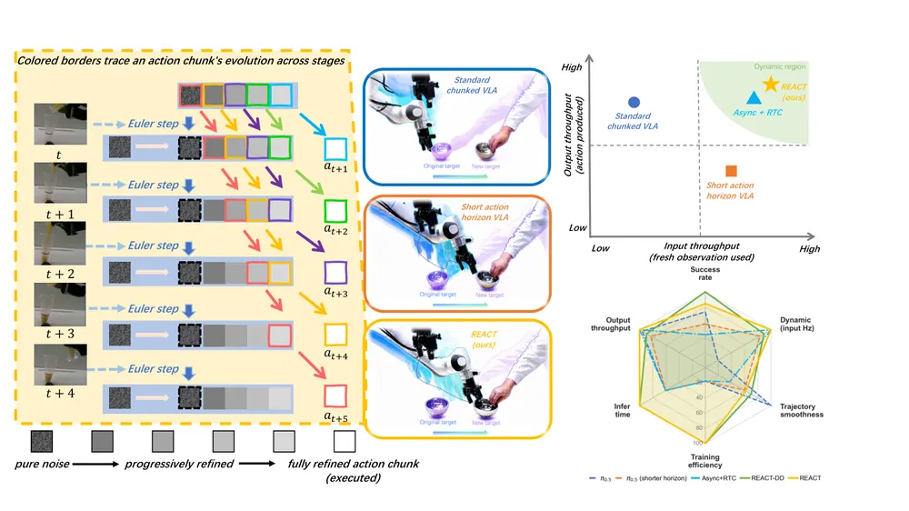
Self-Supervised Keyframe Discovery for Horizon-Invariant Behavior Cloning
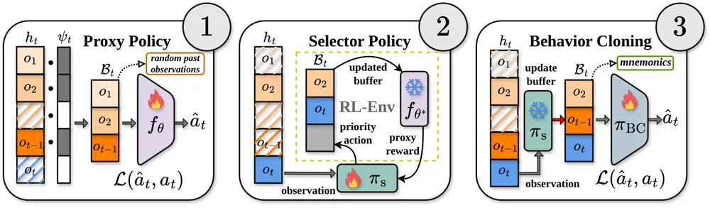
UNITAS: A 3D-Native World Action Model for Embodied Manipulation
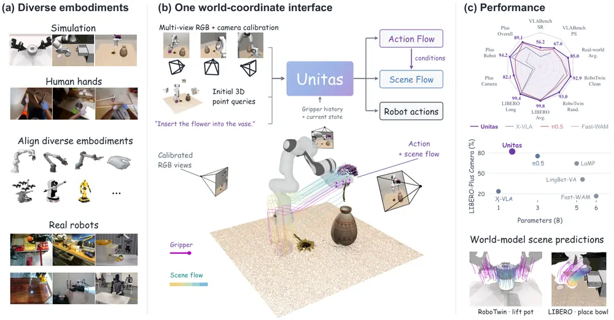
ARC: A Reasoning Recipe for Robot Foundation Models
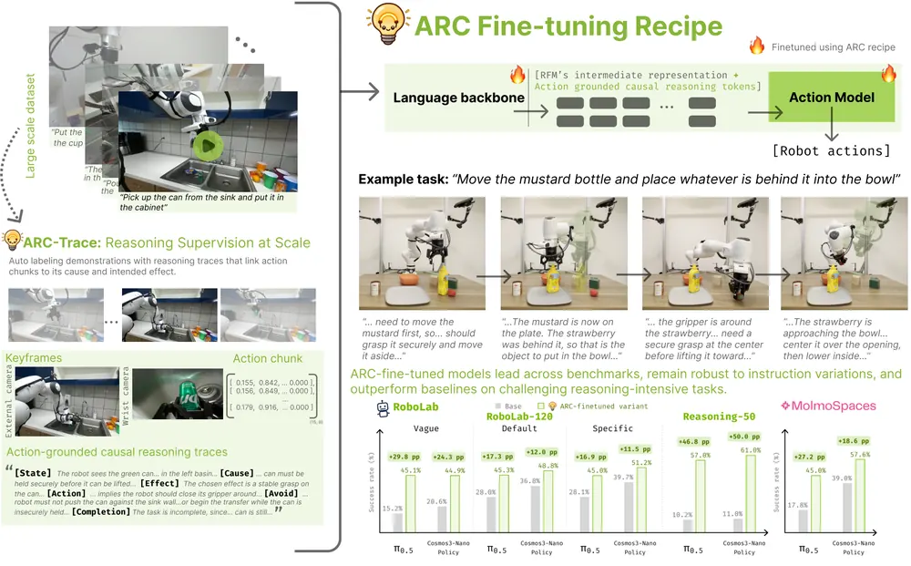
VioLA: Learning Generalist Humanoid Control Policies from Human Data
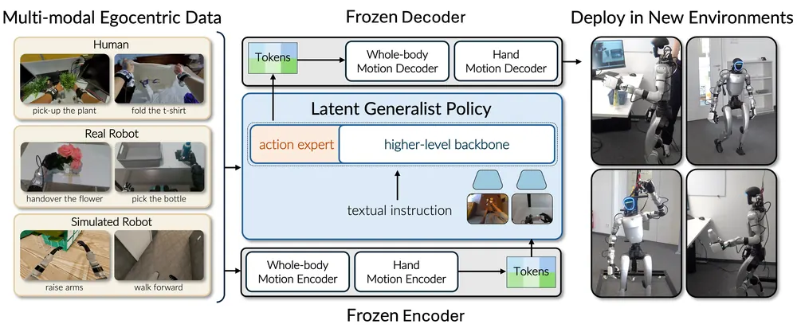
Reliability-Aware Future Conditioning for Temporally Robust Robot Manipulation
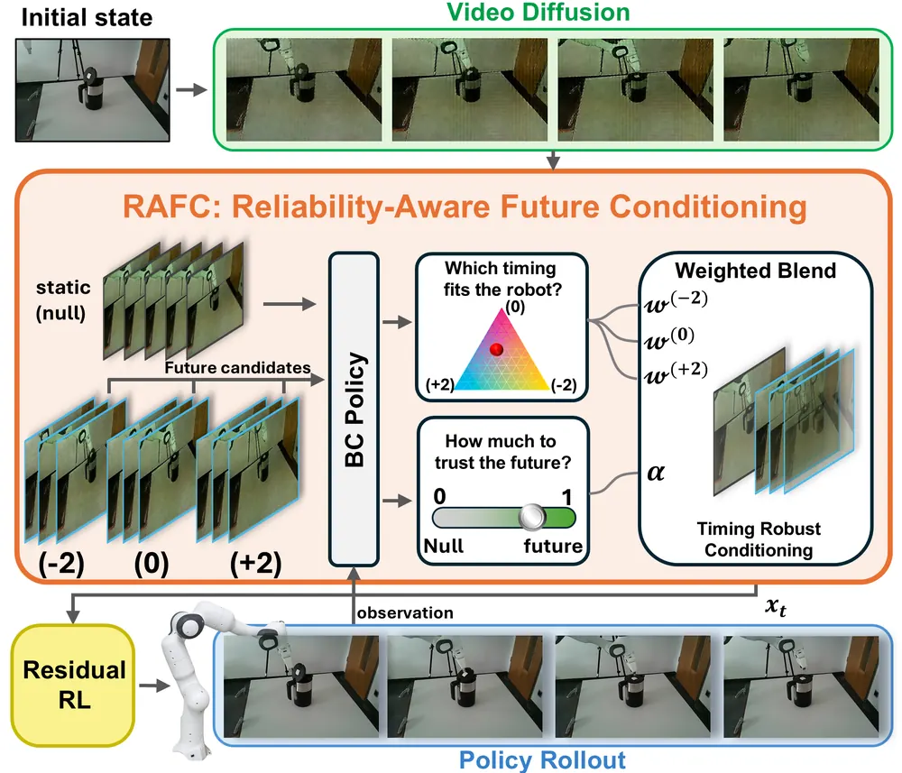
DreamTrue: Action-Faithful Robot World Model with Counterfactual Post-Training
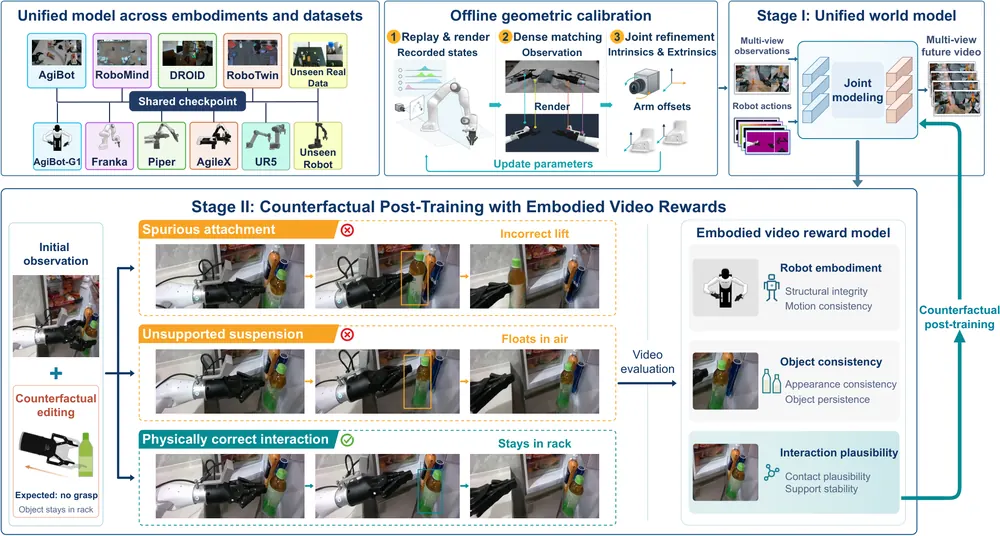
World-Model Policy Arbiter for Goal-Conditioned Reinforcement Learning
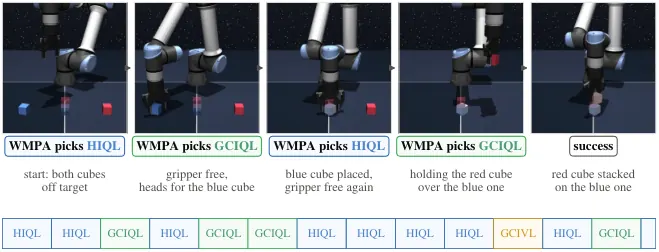
PLaW-VLA: Predictive Latent World Modeling for Vision-Language-Action Policies
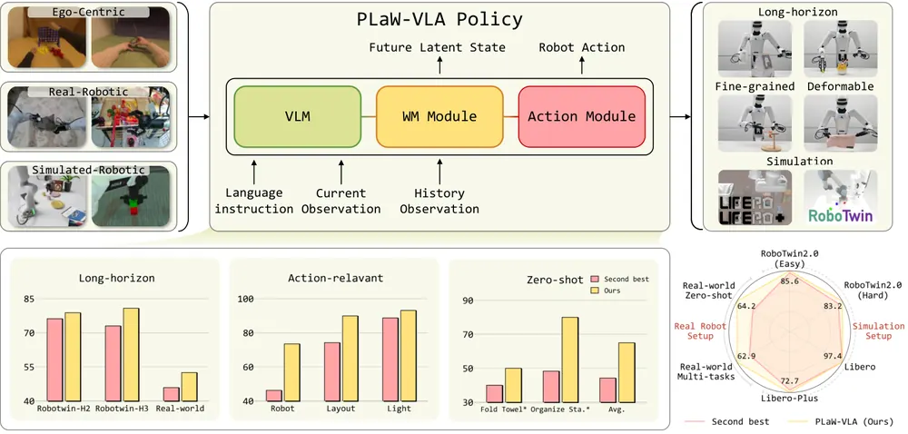
CAPABLE: Capability-Aware Policy Adaptation via Behavioral Latent Encoding
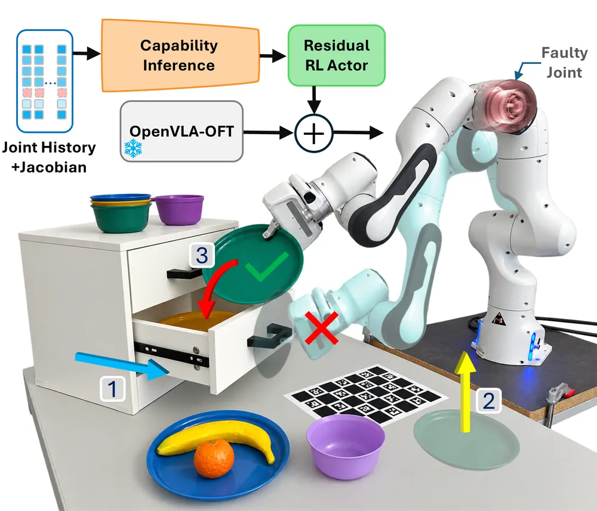
Diagnosing and Recovering from Observation-Space Shift at Long-Horizon Skill Seams
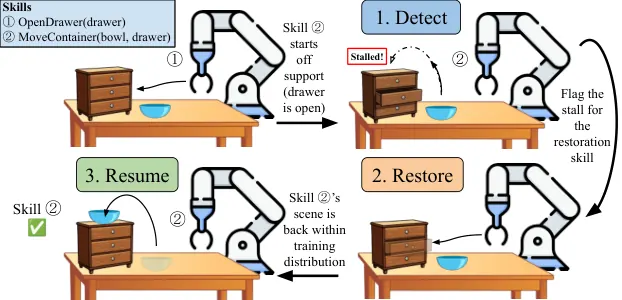
VersaCamVLA: Camera-Configurable VLA Policies for Robotic Manipulation
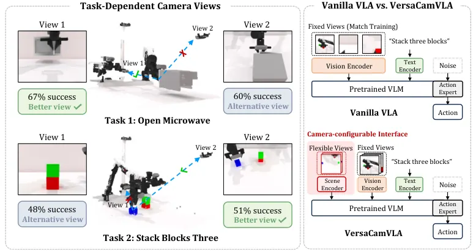
SpatialHarness: Test-Time Spatial Scaffolding for Fine Robotic Manipulation
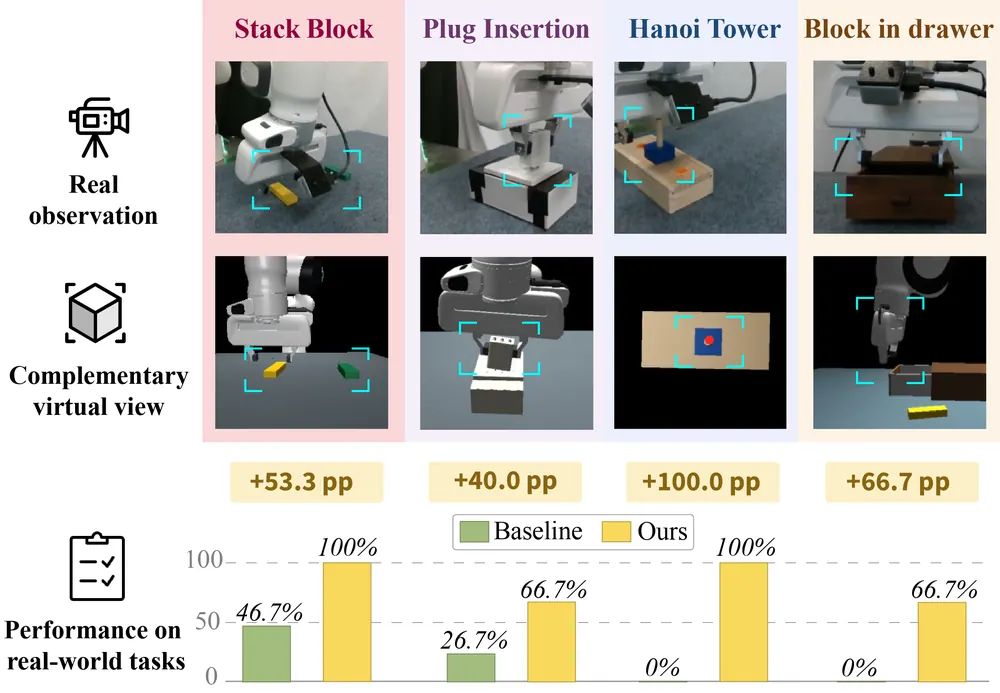
Humanoid World Action Model With Joint State--Action Generation
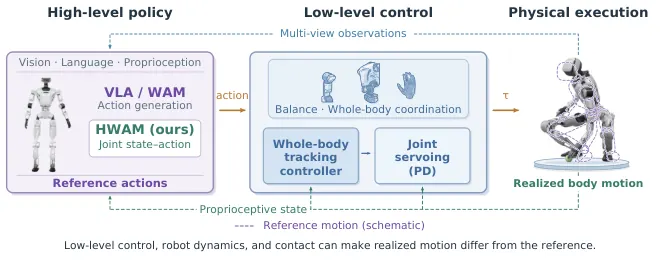
Rendering-Free Lookahead for Question-Guided Active Vision
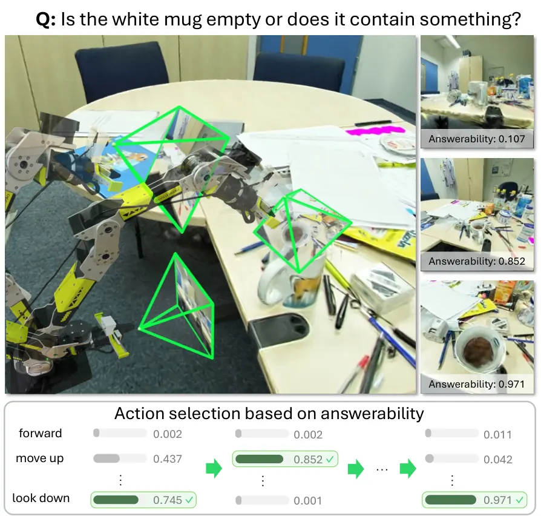
오늘의 핵심 연구 트렌드 종합
- world model을 policy 선택·학습의 기준으로 씀 — UNITAS, World-Model Policy Arbiter 등이 world model을 예측기가 아닌 policy 선택·학습·post-training의 기준(scorer)으로 씀.
- frozen policy를 재학습하지 않고 test-time에만 손을 댐 — SpatialHarness, World-Model Policy Arbiter 등은 policy 가중치를 그대로 두고 observation·conditioning·policy 선택만 test-time에 조정해 성능을 올림.
- 실패를 측정 가능한 state component로 분해해 원인을 찾음 — Observation-Space Shift 진단과 HWAM은 추상적 실패 대신 어떤 object·joint·state 성분이 틀렸는지를 먼저 분리해냄.
- human video를 robot action target으로 직접 전환함 — VioLA는 human·robot motion encoder를 같은 latent space에 공유시킴. 이 덕분에 human 비중 93.2% 데이터만으로 humanoid policy를 학습함.
- 고정 카메라 가정을 깨고 viewpoint를 policy 입력의 변수로 다룸 — VersaCamVLA와 Rendering-Free Lookahead는 카메라 개수·포즈·모션 선택을 policy design space에 넣음.
- VLA inference 구조를 rolling/비동기 방식으로 재조직함 — REACT는 action chunk를 처음부터 다시 만들지 않고 staggered timestep rolling buffer로 observation freshness와 chunk coherence를 동시에 확보함.
유망 연구 방향 및 프로젝트 제안
object-centric 3DGS로 action-execution gap을 조기 탐지하는 test-time failure detector - research question: VLA가 action chunk를 실행하는 동안 실제 scene 변화가 예측과 어긋나는 지점을 object 단위로 분해하면 실패를 더 일찍 잡아낼 수 있는가. - 접근·novelty: UNITAS의 action flow/scene flow 불일치 신호, HWAM의 action-execution gap 측정, Observation-Space Shift 진단의 성분별 teleport-oracle ablation을 object-centric 3DGS 노드 단위로 결합함. - 왜 지금·경쟁 prior works: 오늘 세 논문이 각각 '실행 결과와 예측의 불일치'를 실패 신호로 쓰지만 object 단위로 분해한 연구는 없음. Observation-Space Shift 진단은 privileged simulator teleport에 의존해 real-robot 확장이 안 됨. - risk·target venue: object tracking 오차가 누적되면 false alarm이 늘어남. real-robot failure injection 실험이 필수. target: CoRL/RSS.
frozen VLA policy bank를 위한 world-model arbitration + capability-aware trigger 결합 - research question: 여러 이질적 VLA·skill policy를 pool로 두고 world model scoring과 실시간 capability latent를 같이 써서 test-time에 policy와 observation 조합을 함께 고를 수 있는가. - 접근·novelty: World-Model Policy Arbiter의 policy arbitration을 뼈대로 하고, CAPABLE의 label-free capability inference로 전환 시점을 보강하고 SpatialHarness의 test-time scaffolding으로 observation까지 같이 조정함. - 왜 지금·경쟁 prior works: World-Model Policy Arbiter는 state-based sim(OGBench)만 검증했고 pixel 기반 real-robot 확장은 저자도 future work로 남김. - risk·target venue: world model scoring 오차 누적과 실시간 연산 비용이 리스크. target: CoRL.
미래 조건화 신호의 신뢰도를 3DGS counterfactual rendering으로 사전 추정하는 reliability gate - research question: future video나 subgoal 같은 조건화 신호가 틀렸을 때를 실행 전에 3DGS 기반 counterfactual rollout으로 탐지해 fallback할 수 있는가. - 접근·novelty: RAFC의 reliability gate(고정 시간축 오프셋 blend)를 DreamTrue식 counterfactual action 생성으로 대체하고, Rendering-Free Lookahead처럼 학습 시에만 3DGS로 렌더링해 distill하고 추론 시엔 렌더링 없이 평가하게 만듦. - 왜 지금·경쟁 prior works: RAFC는 고정된 시간축 오프셋 3개만 blend하고 counterfactual world model은 쓰지 않음. - risk·target venue: 3DGS 렌더링 비용이 real-time 제약과 충돌할 수 있음. target: RSS/CoRL.
human-to-robot latent motion 공유에 tactile perception을 결합한 manipulation VLA - research question: hand latent controller에 tactile feedback을 추가하면 VioLA가 보고한 grasp retention 실패(옷 놓침, 병 넘어짐)가 줄어드는가. - 접근·novelty: VioLA의 human·robot 공유 latent motion space에 contact force 정보를 추가해 vision-only hand decoder의 한계를 보완함. - 왜 지금·경쟁 prior works: VioLA는 저자 스스로 hand decoder에 contact-force feedback이 없다는 한계를 명시함. - risk·target venue: tactile sensor 하드웨어 의존과 sim-to-real gap이 리스크. target: CoRL/RSS.
stopping을 별도 학습된 value로 분리하는 active-perception failure detector - research question: '언제 멈출지'를 base VLM 판단 대신 별도 학습된 value function으로 분리하면 oracle과의 격차를 더 줄일 수 있는가. - 접근·novelty: Rendering-Free Lookahead가 밝힌 stopping gap(oracle gap 대부분이 stopping에서 발생)을 CAPABLE의 online capability latent로 보완해 stopping을 별도 head로 학습함. - 왜 지금·경쟁 prior works: Rendering-Free Lookahead는 motion selection만 distill하고 stopping 결정은 여전히 base VLM에 위임함. - risk·target venue: stopping label 수집 비용이 변수. target: ICRA/CoRL.
오늘 반드시 읽어야 할 논문
- UNITAS: A 3D-Native World Action Model for Embodied Manipulation — action flow와 scene flow를 하나의 3D frame에서 공동 생성하는 world action model, LIBERO 99.8%. 실행 후 예측과 실제 scene flow의 불일치를 policy 평가 신호로도 쓸 수 있음.
- Self-Supervised Keyframe Discovery for Horizon-Invariant Behavior Cloning — masked-sampling proxy의 simplicity bias로 keyframe을 self-supervised로 뽑아 horizon invariance를 이론·실험으로 증명.
- REACT: Rolling Denoising and Dual Decoupling for Reactive Robot Control with VLA Models — rolling action buffer와 dual decoupling으로 VLA의 reactivity-coherence trade-off를 해결, CoRL 2026 spotlight.
- ARC: A Reasoning Recipe for Robot Foundation Models — action-grounded causal trace를 VLA에 fine-tuning으로 주입해 실로봇 성공률 82.2%p 향상.
- CAPABLE: Capability-Aware Policy Adaptation via Behavioral Latent Encoding — fault label 없이 command-response history로 actuator capability를 추론해 residual RL로 실시간 적응.
- Diagnosing and Recovering from Observation-Space Shift at Long-Horizon Skill Seams — teleport-oracle ablation으로 skill chaining 실패의 원인 성분을 causal하게 찾는 진단 방법론.
- SpatialHarness: Test-Time Spatial Scaffolding for Fine Robotic Manipulation — frozen policy를 그대로 두고 실시간 digital twin 가상 뷰만 추가해 성공률 18.33%→83.33%.
- World-Model Policy Arbiter for Goal-Conditioned Reinforcement Learning — world model rollout으로 여러 policy를 test-time에 평가·선택하는 arbitration, 이론적 개선 보장 포함.
전체 1차 스크리닝 결과 (655편, 점수순) 펼치기
| # | 제목 | 점수 | 🤖 | 분야 | 한 줄 근거 |
|---|---|---|---|---|---|
| 1 | UNITAS: A 3D-Native World Action Model for Embodied Manipulation | 78 | 10 | World Model | 관측·행동·장면 변화를 공유 3D metric frame에서 통합하는 3D-native world action model임. action/scene flow라는 새 representation으로 RoboTwin·LIBERO·실로봇 전반에서 SOTA 보임 |
| 2 | Self-Supervised Keyframe Discovery for Horizon-Invariant Behavior Cloning | 78 | 9 | Manipulation | self-supervised keyframe 발견으로 non-Markovian behavior cloning의 긴 horizon 문제를 해결한 연구로 memory-intensive manipulation benchmark 23 tasks와 real robot 20배 긴 horizon에서 검증했고 NeurIPS 2026 accept, baseline 대비 13.9%p 개선으로 증거가 강함 |
| 3 | ARC: A Reasoning Recipe for Robot Foundation Models | 76 | 9 | VLA | robot foundation model에 action의 causal reasoning trace를 자동 생성해 붙이는 reasoning recipe임. 추가 로봇 데이터 없이 pi_0.5 실로봇 성공률을 82.2%p 올려 임팩트가 큼 |
| 4 | DreamTrue: Action-Faithful Robot World Model with Counterfactual Post-Training | 76 | 9 | World Model | counterfactual action trajectory로 post-training해 interaction coverage를 넓힌 multi-view action-faithful world model임. counterfactual reasoning·world model 우선 주제에 정확히 부합하고 AgiBot World Challenge 1위라 임팩트 큼 |
| 5 | CAPABLE: Capability-Aware Policy Adaptation via Behavioral Latent Encoding | 75 | 9 | Manipulation | joint fault 발생 시 frozen VLA에 label 없이 capability를 추론해 residual RL로 보정하는 failure recovery 프레임워크임. LIBERO 24.8%→59.3%, 실로봇 Franka까지 검증해 설득력 있음 |
| 6 | PLaW-VLA: Predictive Latent World Modeling for Vision-Language-Action Policies | 75 | 9 | VLA | VLA에 task-relevant future state만 예측하는 가벼운 latent world model을 결합해 long-horizon control을 개선함. CoRL accept, RoboTwin·LIBERO-Plus에서 성능과 효율을 모두 개선해 설득력 있음 |
| 7 | REACT: Rolling Denoising and Dual Decoupling for Reactive Robot Control with VLA Models | 74 | 9 | VLA | flow-based VLA의 chunk 재생성 대신 rolling denoising으로 reactivity와 smoothness를 동시에 달성함. CoRL spotlight로 실로봇 bimanual까지 검증해 설득력 있음 |
| 8 | Humanoid World Action Model With Joint State--Action Generation | 73 | 9 | World Model | humanoid VLA/WAM의 action-execution gap을 post-execution state를 명시적 예측 target으로 삼아 해소함. 실로봇 humanoid에서 baseline 대비 큰 성능 향상 보임 |
| 9 | VersaCamVLA: Camera-Configurable VLA Policies for Robotic Manipulation | 72 | 9 | VLA | camera 구성에 무관한 scene-token으로 VLA를 확장한 실제 manipulation 연구로 real robot 실험까지 있어 우선 주제에 정확히 부합함 |
| 10 | Diagnosing and Recovering from Observation-Space Shift at Long-Horizon Skill Seams | 72 | 9 | Manipulation | 스킬 체이닝에서 발생하는 observation-space shift를 장면 상태 변위로 규명하고 detect-restore-resume 시스템으로 BOSS-44 성공률을 7.6%에서 26.5%로 개선, 실로봇 π0.5에도 일부 적용해 failure recovery와 skill seam 문제를 직접 다룸 |
| 11 | Reliability-Aware Future Conditioning for Temporally Robust Robot Manipulation | 72 | 9 | World Model | 생성 future video의 시간 정렬 오차를 control 문제로 재정의하고 신뢰도 기반 조건화로 CALVIN·실로봇에서 복구함. world model 활용 VLA의 실용적 약점을 짚은 novel formulation임 |
| 12 | VioLA: Learning Generalist Humanoid Control Policies from Human Data | 72 | 9 | VLA | joint 명령 대신 body/hand motion latent를 예측해 human data 93%로 humanoid generalist policy를 학습함. zero-shot locomotion success 100% vs 기존 0~16.7%로 임팩트 큼 |
| 13 | SpatialHarness: Test-Time Spatial Scaffolding for Fine Robotic Manipulation | 72 | 9 | Manipulation | spatial observability 부족을 test-time에 가상 뷰 렌더링으로 보완하는 harness임. frozen foundation model 그대로 쓰면서 plug insertion 26.7%→66.7% 등 큰 개선을 보여 test-time optimization 아이디어가 돋보임 |
| 14 | Rendering-Free Lookahead for Question-Guided Active Vision | 72 | 8 | Embodied AI | answerability 기반으로 미래 view를 렌더링 없이 lookahead하는 active vision policy임. 3DGS privileged teacher로 distill하는 구조가 active perception/NBV 우선 주제에 정확히 부합함. |
| 15 | World-Model Policy Arbiter for Goal-Conditioned Reinforcement Learning | 72 | 7 | RL | frozen policy들을 world model rollout으로 test-time 중재해 선택하는 goal-conditioned RL 프레임워크로 OGBench의 maze·cube·scene manipulation에서 큰 성능 향상을 보임 |
| 16 | LeWAM: A JEPA World Action Model with Diffusion-Steering-Based MPC | 71 | 9 | World Model | reconstruction 없는 JEPA latent로 forward/backward/inverse dynamics와 policy를 한 transformer에서 학습하는 world action model임. noise space planning으로 WAM의 MPC 취약점을 개선한 분석이 흥미로움 |
| 17 | RESETTLE: Robotic Recovery through Disagreement-Triggered Retrieval and Efficient Corrective Control | 70 | 9 | Manipulation | 두 action proposal의 불일치를 trigger로 삼아 재계획 없이 빠르게 복구하는 failure recovery 모듈임. 여러 base policy·실로봇에서 latency 크게 줄이며 성능 개선해 실용성 높음 |
| 18 | WOVEN: Weaving Visual World Modeling into Multimodal LLMs | 70 | 6 | World Model | visual transition reasoning을 MLLM의 world model 학습 primitive로 제안하고 26개 benchmark에서 큰 전이 효과를 보여 formulation 신규성이 있음 |
| 19 | A Balanced Data Diet: Addressing the Exploration Bottleneck in Mega-Scale RL for Robot Control | 69 | 8 | RL | mega-scale parallel RL에서 policy frontier 근처 configuration에 샘플링을 집중하는 adaptive sampler임. 2^20 환경 규모 RL과 실로봇 zero-shot transfer까지 검증한 CoRL 논문으로 스케일링 통찰이 있음 |
| 20 | Dex-One2Many: Learning Dexterous Manipulation from a Single Human Demonstration | 69 | 8 | Manipulation | 단일 human demo를 scene graph로 추상화해 RL exploration을 제약하는 real-to-sim-to-real dexterous manipulation 프레임워크임. unseen 시나리오에서 baseline 대비 71%p 격차로 generalization이 강함 |
| 21 | RoboAware: Learning to Coordinate Embodied Skills from Counterfactual Outcomes | 68 | 9 | Manipulation | P5 스키마와 state-locked counterfactual branching으로 코딩 에이전트의 스킬군 선택을 counterfactual outcome 기반으로 학습, RoboSuite·LIBERO-Pro·RoboTwin에서 SOTA 달성해 counterfactual reasoning과 skill chaining 핵심 주제에 정확히 부합함 |
| 22 | CausalDreamer: Learning Predictive World Models with Latent Disentanglement | 68 | 8 | World Model | Dreamer4 latent를 controllability·reward 축으로 분해한 world model로 조작 변형 태스크에서 generalization 개선을 보여 world model과 인과적 분리라는 누리랩 핵심 주제에 직접 맞음 |
| 23 | NavGPT-3: Harnessing Context in a Hierarchical Navigation Runtime | 68 | 8 | Navigation | 추론·행동·모니터링을 독립 스레드로 스케줄링하는 OS식 런타임으로 LLM 추론과 저수준 VLA 정책을 연결, R2R-CE·RxR-CE에서 인간 수준 성공률을 달성함 |
| 24 | MiniWAM: Learning Compact Future Targets for Efficient World-Action Modeling | 68 | 8 | World Model | native visual future 대신 inverse-dynamics 기반 compact target을 예측해 world-action model 학습을 8배 가속함. 효율화이지만 behavioral structure를 보존한다는 점에서 단순 scale-down 이상임 |
| 25 | LiteNWM: Efficient Latent World Models for Onboard Visual Navigation in the Wild | 68 | 8 | Navigation | navigation world model의 visual rollout 비용을 줄이기 위해 latent 공간에서 action-conditioned future를 공유 인코딩으로 예측함. 실로봇 navigation success를 43%→83%로 크게 올려 실용성 높음 |
| 26 | WorldGuide: Goal-Directed Video World Model for Procedural Task Execution | 68 | 6 | World Model | closed-loop로 action을 생성하고 결과로 다음 action을 결정하는 video world model이라 skill chaining·long-horizon planning 주제와 맞음 |
| 27 | Residual Modeling Closes the Regression and Generative Policy Gap in Robot Learning | 67 | 8 | Manipulation | diffusion/flow policy가 MSE policy보다 나은 이유를 heavy-tailed residual 관점에서 분석하고 heteroscedastic Student-t 회귀로 대안을 제시함. 생성모델 없이도 경쟁력 있는 결과를 보여 통찰력 있는 분석임 |
| 28 | Embodied Turing Machines: Stateful Code for Robot Recursive Self-Improvement | 67 | 8 | Embodied AI | VLM/VLA 없이 code만으로 robot state를 추적·판단하는 Embodied Turing Machine 개념을 제안함. recursive self-improvement 데이터 엔진으로서도 흥미로운 새 paradigm임 |
| 29 | Generative Neural Retargeting for Human-to-Robot Dexterous Manipulation | 67 | 8 | Manipulation | demo마다 새로 푸는 MPC retargeting 대신 feasible trajectory manifold에서 flow matching으로 샘플링하는 human-to-robot dexterous retargeting임. MPC보다 8.5% 샘플로 성공률을 2배 이상 높여 효율적임 |
| 30 | Control-Ready Uncertainty for Trajectory Diffusion | 67 | 7 | Manipulation | diffusion trajectory에 score-curvature 기반 정밀도 추정을 붙여 Monte Carlo 샘플링 없이 실시간 uncertainty를 제공함. CoRL spotlight, 실로봇 Franka까지 검증한 test-time 유용한 모듈임 |
| 31 | RoboRSI: Stable, efficient, and reusable robot self-evolution in complex real-world environments | 66 | 8 | Embodied AI | code 기반 robot agent의 실행 경험을 skill 단위로 귀속·검증해 재사용하는 self-improvement 시스템임. LIBERO 계열에서 baseline 대비 꾸준히 개선하나 구조는 engineering 파이프라인에 가까움 |
| 32 | Cross-Embodiment Robot Foundation World Models with Latent Actions | 65 | 8 | World Model | 임베디먼트 간 공유되는 latent action space로 world model을 구성해 명시적 액션 조건화보다 cross-embodiment 적응이 우월함을 보여 world model 핵심 주제에 정확히 부합함 |
| 33 | Skill-V: Verifiable Self-Evolving Skill Library for Interactive Agents | 65 | 7 | Embodied AI | falsifiable contract로 skill을 검증·수정하는 self-evolving skill library임. ALFWorld/WebShop에서 skill chaining과 agent memory 신뢰성을 높여 우선 주제에 정확히 부합함. |
| 34 | SplitJEPA: Learning Invariant and Variant Latent Worlds without Reconstruction | 65 | 7 | World Model | reconstruction 없이 JEPA 표현을 invariant·variant로 분해하고 identifiability를 이론적으로 증명한 연구로 로봇 조작 실험까지 포함해 world model representation learning 핵심 주제에 직접 맞음 |
| 35 | What 30,000 Hours of Ego-centric Video Does Not Teach | 65 | 6 | World Model | ego-centric video 스케일링이 world model의 agent/object fidelity에 어떻게 영향 주는지 실증 분석해 humanoid modeling까지 전이시킴 |
| 36 | SuperNav: An Agentic Navigation System for Any Task in Any Scene | 64 | 8 | Navigation | navigation 전용 fine-tuning 없이 MLLM에 agent harness를 씌워 임의 task·scene에서 동작하게 하는 navigation 시스템임. VLN 범주에서 실용적이나 핵심 아이디어는 agent harness 재사용에 가까움 |
| 37 | TAPNAV: Humanoid Navigation through Tactile Active Perception | 62 | 8 | Navigation | 시각 없이 촉각 능동 탐사로 위치추정 불확실성을 억제하는 휴머노이드 내비게이션으로 Unitree G1 실험에서 active perception과 navigation을 결합함 |
| 38 | Being-M0.7: A Latent World-Action Model for Humanoid Robots | 62 | 8 | World Model | 1만시간 이상의 인간 비디오·모션 데이터를 latent world-action model로 프리트레인해 휴머노이드 로코매니퓰레이션에 전이, 실로봇 G1에서 최고 성능을 달성함 |
| 39 | Acting from Belief, Looking When Needed: A Bayesian Spatial World Model for Navigation under Intermittent Perception | 62 | 8 | World Model | 내비게이션 전용 관측이 간헐적으로만 가능한 상황에서 구조적 사전으로 공간 belief를 유지하고 신뢰도가 낮을 때만 관측을 요청하는 베이지안 world model로 실내 드론 비행으로 검증, world model·active perception·navigation 세 주제를 동시에 다룸 |
| 40 | SkillWeave: Weaving Heterogeneous Demonstrations into Long-Horizon Manipulation Skills | 62 | 8 | Manipulation | teleoperation과 kinesthetic teaching을 섞어 long-horizon dexterous manipulation demo를 모으고 mask-conditioned diffusion·successor-aware handoff로 연결함. 실로봇 세 task에서 검증했으나 스케일이 작음 |
| 41 | Recompose and Refine Latent Reasoning Flows for Vision-Language-Action Models | 62 | 8 | VLA | 성공적인 latent reasoning을 재사용 가능한 fragment로 저장·재조합하는 FLOWMEM을 제안해 VLA와 robot memory를 직접 결합했고 RoboMME·LIBERO-Plus에서 memory-free 대비 1.7~4.1%p 개선을 real manipulation benchmark로 보였으나 개선폭 자체는 크지 않음 |
| 42 | AffordDrive3D: Affordance-Aware World-Action Modeling with Spatial Understanding | 62 | 7 | World Model | action-relevant affordance와 future geometry를 함께 예측하는 world-action model임. NAVSIM에서 SOTA이고 affordance+geometry 결합이 driving policy에 직접 쓰이는 world model 기여임. |
| 43 | RiCo: Neural Simulation of Rigid-Body Interactions via Local Contact Reasoning | 62 | 7 | World Model | rigid-body contact를 local surface 근방 reasoning으로 모델링하는 physics simulation world model임. sim-to-real 예비 증거까지 제시해 manipulation 물리 world model에 직접 연관됨. |
| 44 | Instance-anchored interaction evidence: Grounding robot plans in human pointing and handling | 62 | 7 | Embodied AI | 사람의 pointing·handling 흔적을 instance 단위로 역추적해 로봇 plan의 근거로 쓰는 새 representation임. WatchAct에서 VLM baseline 대비 큰 격차로 개선해 흥미로운 formulation임 |
| 45 | AgentGarten: Code Worlds for Evolving Agents | 62 | 6 | World Model | 시뮬레이터와 neural renderer를 결합해 실시간 interactive world를 만들고 agent가 playbook으로 경험을 distill하며 진화하는 프레임워크임. embodied agent 학습 환경 확장성 문제에 대한 새 접근임. |
| 46 | SpaceCast-Bench: Evaluating Predictive Spatial Reasoning in Vision-Language Models | 62 | 6 | Embodied AI | scene을 재구성하고 개입 결과를 예측하는 predictive spatial reasoning benchmark라 embodied spatial reasoning과 직결됨 |
| 47 | MemoWM: How World Models Change What Agents Need to Remember | 62 | 5 | World Model | world model 예측으로 저장할 경험을 선택하는 memory allocation 프레임워크라 robot memory·world model 우선 주제와 직접 맞음 |
| 48 | FAITH: Feasibility-Aware Safety-Filtered RL for High-Dimensional Systems | 61 | 7 | RL | model-free feasibility-aware safety filter로 safe RL의 myopic 문제를 해소함. humanoid 실로봇까지 검증했고 safety rate와 return을 동시에 보존해 설득력 있음 |
| 49 | SimVLA: Zero-Shot Sim-to-Real VLA Learning for Mobile Manipulation | 60 | 8 | VLA | 순수 합성 시뮬레이션 데이터로만 학습한 VLA를 실제 가정환경 모바일 매니퓰레이션에 제로샷 전이, 실 데모 50개로 학습한 정책보다 우수함 |
| 50 | VGGTWorld-VLA: Intent-Conditioned 3D World Evolution for Autonomous Driving | 60 | 7 | World Model | VGGT 기반 3D world model에 driving intention/action을 조건화해 action-dependent future geometry를 예측함. geometry-language-action bridge가 world model의 action conditioning 문제를 직접 다룸. |
| 51 | EgoPhys: Estimating Peak Contact Force and Mechanical Work from Egocentric Manipulation Video | 60 | 7 | Manipulation | egocentric manipulation video에서 peak contact force와 mechanical work를 추정하는 RGB-only 방법임. manipulation의 물리적 상호작용 이해라는 우선 주제에 직접 해당함. |
| 52 | LIVIN: Benchmarking Spatial and Embodied Intelligence in Digital Twins of Lived-In Homes | 60 | 7 | Embodied AI | 실제 거주 가정의 digital twin 30채로 navigation·loco-manipulation까지 평가하는 benchmark임. 밀집 배치/occlusion 환경을 반영해 embodied AI 평가에 직접 기여함. |
| 53 | Masked Generative Motion Planning with Geometry-Guided Token Search | 60 | 7 | Manipulation | 마스크 생성 트랜스포머로 경로 전체를 병렬 생성하고 기하 기반 토큰 탐색으로 지역적 교체를 넘어선 경로 재구성을 수행, Kuka 실로봇 포함 베이스라인 대비 큰 성능 격차 보임 |
| 54 | OmniDex: Scaling Dexterous Hand Grasping to Diverse Cluttered Scenes | 60 | 7 | Manipulation | 260만 장면·4억 그라스프 그라운드트루스로 구축한 대규모 덱스터러스 그라스핑 벤치마크와 Soft WTA 학습으로 multimodality·정밀도 문제를 해결한 모델임 |
| 55 | Unifying Policy Learning and State Prediction through Spatial Language Modeling | 60 | 7 | Manipulation | scene contour·goal·action을 공유 discrete vocabulary로 표현해 policy learning과 state prediction을 하나의 autoregressive next-token objective로 통합함. Push-T 수준의 단순 task에서만 검증됨 |
| 56 | Learning to Retrieve: Internalizing Memory Retrieval for Video World Models | 60 | 6 | World Model | 외부 memory 없이 retrieval을 모델 내부 state로 내재화한 video world model 방법임. robot memory/world model 우선 주제와 직접 연결되는 새 paradigm임. |
| 57 | LLM-IDEA: Identifiability-Driven Experimental Agent for Autonomous Discovery of Mechanistic World Models | 60 | 5 | World Model | 실험 설계가 mechanistic world model의 identifiability 여부를 판정하는 engine을 제안해 world model 탐색 패러다임에 새 축을 더했으나 물리 시스템 식별 문제에 한정되고 로봇 실험은 없음 |
| 58 | TacHair: Tactile Contact-Distribution Guided Online Correction for Robotic Hair Stroking and Perception | 58 | 8 | Manipulation | 고해상도 tactile contact distribution을 이용한 residual 보정으로 헤어 스트로킹 중 접촉 drift를 교정해 525회 실로봇 실험에서 성공률을 42.9%에서 62.3%로 개선함 |
| 59 | Teaching a Robot Dog New Tricks: Diverse Quadruped Skills via Combined Reinforcement and Imitation Learning with Adversarial Task Selection | 58 | 7 | RL | RL teacher와 IL distillation을 adversarial task selection으로 결합해 22개 스킬을 하나의 쿼드러페드 정책에 합성하고 실로봇 B1에서 검증한 skill chaining 연구임 |
| 60 | Mine Odyssey: Benchmarking Spatial Agentic Intelligence in the Wild | 58 | 7 | Embodied AI | 실세계 장소를 재현한 Minecraft 환경에서 agentic spatial intelligence를 평가하는 benchmark로 embodied spatial reasoning과 navigation 우선 주제에 해당하나 benchmark 성격이라 방법론적 novelty는 제한적임 |
| 61 | Continuous Ground-Truth Construction and a Recovery Policy for Air--Water Robotic Tracking | 58 | 6 | Robotics | air-water 경계에서 corruption 발생 시 tracking을 복구하는 recovery policy와 평가용 GT 구축 파이프라인임. failure detection/recovery 우선 주제와 직접 연결됨. |
| 62 | GATOR: Generative and Agentic 3D Object Reconstruction From Casual Images | 58 | 6 | 3D Vision | casual image에서 scene-relative pose까지 복원하는 generative-agentic 3D object reconstruction 프레임워크임. edit-render-review loop와 simulation readiness 강조가 robot manipulation asset 생성에 직접 연관됨. |
| 63 | Look Where You Can: Active View Selection for CAD Reconstruction under Occlusion | 58 | 6 | Active Perception | occlusion 환경에서 CAD 재구성을 위한 view selector와 VLM을 reward로 함께 학습하는 방법으로 T-LESS/MP6D 산업 benchmark에서 평가됨. active view selection이 NBV 우선 주제에 직접 해당함. |
| 64 | Multi-Agent Egocentric World Model with Fine-Grained Embodied Interaction | 58 | 6 | World Model | 여러 agent의 egocentric stream을 공유 환경 memory로 동기화 생성하는 multi-agent world model임. fine-grained embodied interaction을 다루는 새 formulation으로 world model 우선 주제에 부합함. |
| 65 | Distilling Routed 3D Privilege for Spatial Reasoning in Vision-Language Models | 58 | 6 | Embodied AI | 3D geometry를 privileged 정보로 써서 VLM의 spatial reasoning을 on-policy self-distillation하는 방법임. RGB-only 배포를 유지하면서 VSI-Bench 등에서 성능을 높여 embodied spatial reasoning에 직접 기여함. |
| 66 | SLVR: Structured Latent Visual Reasoning via Human-like Reasoning Flows | 58 | 2 | Multimodal | latent reasoning을 typed stage로 구조화한 새 학습 프레임워크임. NeurIPS accept고 VLM reasoning 품질 개선은 뚜렷하나 robotics 연관은 약함. |
| 67 | Mid-Training Language Models on Raw Video | 57 | 3 | Multimodal | caption 없이 raw video로 LLM을 mid-training하는 자기지도 paradigm을 제안함. 결과가 일관되고 새로운 학습 축이라 video/world model foundation에 의미 있음. |
| 68 | IntactWorld: Joint World Modeling with Intact Features | 56 | 5 | World Model | 압축하지 않은 intact feature로 world knowledge를 주입하는 joint world modeling architecture임. manifold gap 문제를 지적하고 해결하는 새 학습 paradigm으로 world model 우선 주제에 부합함. |
| 69 | WorldAlign: Decoupled 4D Reward for World-Consistent Video Generation | 56 | 5 | World Model | static/dynamic consistency를 분리해 4D reward로 video world model을 post-training하는 방법임. world-consistent video generation을 명시적으로 겨냥해 world model 우선 주제에 부합함. |
| 70 | OmniHOI: Dexterous Hand-Object Interaction from Monocular Human Video | 55 | 7 | Manipulation | 단일 RGB 비디오에서 손-물체 상호작용을 재구성해 물리 일관성을 단계별로 강제하며 덱스터러스 핸드로 전이, 실로봇 bimanual 실험까지 포함함 |
| 71 | Informationally Decoupled Trajectory Design for Sim-to-Real System Identification | 55 | 7 | RL | Fisher information Schur complement로 파라미터 분리도를 극대화하는 궤적을 설계해 sim-to-real 시스템 식별 오차를 39.6% 줄이고 실제 K1 휴머노이드로 검증함 |
| 72 | When Listening Becomes Easier: Scrubbing Visual Cues for Shortcut-Free VLAs | 55 | 7 | VLA | VLA 백본별 visual shortcut 취약성을 action margin이라는 표현 레벨 지표로 측정하고 domain-adversarial task scrubbing으로 교정, 시뮬레이션·실로봇 모두에서 OOD 강건성 개선함 |
| 73 | Towards Path-Creative Navigation: Robot Navigation through Embodied Interaction | 55 | 7 | Navigation | 고정 환경 가정을 깨고 로봇이 locomotion과 embodied interaction을 조율해 가로막힌 공간을 스스로 열며 이동하는 새 내비게이션 패러다임을 제안, 실제 두 과제로 검증함 |
| 74 | PMTRM: Pseudo-Memory Temporal Re-encoding Module for Embodied Policy Learning | 55 | 7 | Manipulation | 실행된 상태·행동 이력을 pseudo-memory로 재인코딩해 phase ambiguity를 해소하는 경량 플러그인 모듈로 여러 정책 백본과 실로봇에서 검증한 robot memory 연구임 |
| 75 | How Firm Should a Grasp Be? | 55 | 7 | Manipulation | 비주얼터치로 물체의 질량·탄성·마찰을 실시간 추정해 최소 그립력을 결정하는 방법으로 과일·채소 실로봇 실험과 CoRL accept으로 검증됨 |
| 76 | PathTime-VLA: Path-Time Decoupling for Factorized Post-Training of Vision-Language-Action Policies | 55 | 7 | VLA | 로봇 행동을 경로와 시간 프로파일로 분리해 속도 선택과 기하 예측을 독립적으로 post-training하는 VLA 표현법으로 완료시간을 39-52% 줄이면서 성공률을 유지함 |
| 77 | TACROSS: An Efficient and Low-Cost Scalable Human Touch System Across Heterogeneous Tactile Sensors for Dexterous Robot Learning | 55 | 7 | Manipulation | 이질적 촉각 센서 간 신호를 contact event 단위로 정렬해 저가 글러브 데모를 로봇 정책 학습에 활용하는 시스템으로 150시간 데이터셋을 공개함 |
| 78 | Tell Robot What Not to Do: A Negation Understanding Perspective | 55 | 7 | VLA | VLA가 부정 지시를 따르도록 negation transformation layer와 teacher-guided alignment를 플러그인으로 추가, π0.5 부정지시 성공률을 2.6%에서 88.45%로 개선하고 NegaBench를 공개함 |
| 79 | ManiUnit: A Manipulation Skill Dataset and Benchmark for Long-Horizon Tasks | 55 | 7 | Manipulation | BEHAVIOR-1K 기반 long-horizon mobile manipulation skill dataset·benchmark로 skill 단위 평가 공백을 메움. 방법론 novelty보다 benchmark 기여가 중심임 |
| 80 | Speaking the Navigator's Language: Trajectory-Grounded Instruction Translation for Frozen Aerial VLN Agents | 55 | 7 | Navigation | frozen aerial VLN navigator 앞단에 instruction translator를 붙여 SR을 크게 올린 연구로 VLN 우선 주제에 해당하나 engineering fix 성격이 강함 |
| 81 | FloorSAV: Elucidating Spatial Audio-Visual Context with 2D Floormap for AV-LLMs | 55 | 6 | Embodied AI | egocentric dynamic 환경에서 2D floormap을 AV-LLM에 주입해 spatial reasoning을 개선하는 방법임. embodied spatial reasoning 우선 주제에 직접 부합함. |
| 82 | Fast Pose Tracking of Rigid Objects with Compact Pose Graph Optimization | 55 | 6 | Manipulation | robotic manipulation/AR을 명시적으로 겨냥한 경량 6D pose tracking 방법으로 relative pose constraint만으로 drift를 억제함. 실시간성과 robot 적용 가능성이 뚜렷함. |
| 83 | Learning Which Correspondences to Trust: Confidence-Weighted Event-Camera Localization in LiDAR Maps | 55 | 6 | Navigation | event camera를 LiDAR map에 localize할 때 correspondence confidence를 pose 정보량 기준으로 end-to-end 학습하는 방법임. ICRA 투고 로봇 localization 기여임. |
| 84 | USDCraft: Geometrically Grounded Programmatic Modeling of Articulated 3D Assets for Simulation | 55 | 6 | 3D Vision | 불완전한 메시에서도 LLM이 프로그램을 작성·수정해 물리적으로 유효한 articulated 3D asset을 생성하는 real-to-sim 프레임워크로 작업 특화 학습 없이 작동함 |
| 85 | PlanWAM: Planning-Shaped Future Representations for End-to-End Autonomous Driving | 55 | 6 | World Model | 플래닝 목적에 맞춰 미래 latent 표현을 shaping하는 world model로 NAVSIM에서 SOTA를 달성, 자율주행 도메인이지만 world-model-for-planning 설계 원칙은 로보틱스에 참고 가치 있음 |
| 86 | CSF: Contextual Safety Filtering for Motion Generators | 55 | 6 | Embodied AI | motion generator 출력에 자연어 안전 규칙을 CBF-QP로 grounding하는 training-free contextual safety filter임. 실로봇 G1에서 danger event 90% 감소시켜 안전성 기여가 명확함 |
| 87 | Q-Shaped Options for Hierarchical Reinforcement Learning | 55 | 6 | RL | low-level Q를 goal로 high-level Q를 action으로 써서 option abstraction을 학습하는 Q-Shaped Options를 제안해 offline goal-conditioned locomotion·manipulation에서 다른 방법이 실패하는 과제를 풀었고 action abstraction 3가지 desiderata를 정식화한 점에서 formulation 신규성이 있음 |
| 88 | Memory Forcing: Attendable Mid-Horizon History for Streaming Video Generation | 55 | 5 | World Model | 고정 메모리로 mid-horizon forgetting을 해결하는 streaming video world model 방법임. 장기 memory/world model 우선 주제에 부합함. |
| 89 | Seek-and-View Reasoning for Multi-View Spatial Understanding | 55 | 5 | Embodied AI | 질문 관련 view를 찾아 3D foundation model로 증거를 보강하는 training-free multi-view spatial reasoning 방법임. embodied spatial reasoning 우선 주제와 직접 연결됨. |
| 90 | Slot3R: Set-Associative Spatial Memory for Streaming 3D Reconstruction | 55 | 5 | 3D Vision | co-location과 state identity를 분리하는 set-associative spatial memory로 streaming 3D reconstruction을 확장함. 메모리 한계를 해결해 로봇 온라인 매핑/SLAM에 실질적 의미가 있음. |
| 91 | DaCe-DT: Data-Centric Offline Multi-Task Reinforcement Learning via Adaptive Prompts and Trajectory Correction for Heterogeneous Tasks | 55 | 5 | RL | data-centric offline multi-task RL로 Meta-World manipulation 벤치마크에서 성능을 올렸으나 data curation 위주라 formulation 신규성은 제한적임 |
| 92 | Fluid-Gen-Zero: Grounding Pretrained Video Generators in Physics without Training | 55 | 4 | World Model | 물리 시뮬레이터와 VLM agent를 결합해 training-free로 물리적으로 그럴듯한 video를 생성하는 agentic workflow임. 물리 기반 world model 아이디어라 로봇 world model 연구와 연결될 가능성이 있음. |
| 93 | Right Screen, Wrong Transition: World Models as Verifiers for GUI Agents | 55 | 4 | World Model | GUI transition 검증을 위해 representation space에서 다음 state를 예측하는 decoder-free world model임. world model을 verifier로 쓰는 새 역할 제안이 failure detection 아이디어와 연결됨. |
| 94 | ViSkill: Reinforcing VLM Agents with Evolving Visual-Native Skills | 55 | 4 | RL | visual skill을 카드로 누적해 policy와 reward shaping을 같이 개선하는 구조인데 toy grid 환경(Sokoban 등)에 한정됨 |
| 95 | SpatialOPSD: Self-Distilling Spatial Intelligence from Verified Coding Agent Traces | 55 | 4 | Multimodal | spatial coding agent의 검증된 trace를 self-distillation해 MLLM이 tool 없이 spatial reasoning을 내재화하게 한 연구로 embodied spatial reasoning 주제와 연결됨 |
| 96 | VICO: Visual Environments Co-Evolving for Vision-Language Model Reasoning | 55 | 3 | RL | actor와 environment를 함께 진화시키는 co-evolutionary RLVR 프레임워크로 curriculum 자동 생성이라는 새 paradigm을 제시함. VLM reasoning 중심이라 robot control 적용은 간접적임. |
| 97 | GenIA: Generative Reconstruction with Test-Time Input Alignment | 55 | 3 | 3D Vision | test-time로 생성 prior를 관측에 정렬하는 접근인데 로봇 적용 없이 object asset reconstruction에 머무름 |
| 98 | Rewiring Semantics, Dynamics, and Control: A Simple yet Effective Action-Centric Tri-Stream Transformer | 52 | 7 | VLA | VLM과 world model 표현을 각자의 스트림으로 유지하며 액션 전문가가 둘을 attention으로 결합하는 구조로 시뮬레이션·실로봇에서 베이스라인을 능가하나 구조적 참신성은 중간 수준임 |
| 99 | Experience-Guided Initiation Search for Learned Skills in Skill Composition | 52 | 7 | Manipulation | 과거 실행 경험으로 유망한 초기 조건을 우선시하고 타겟 환경에서 행동으로 검증하는 initiation search 프레임워크로 스킬 체이닝의 배치 비용을 줄임 |
| 100 | WARP-VLA: Wrist-Camera Adaptation for View-Robust Policy Execution in Vision-Language-Action Models | 52 | 7 | VLA | 손목 카메라 설정 변화에 강건하도록 MoE로 뷰별 특징 변환을 학습한 VLA로 LIBERO에서 π0.5 성공률을 39.2%에서 78.3%로 개선하고 실로봇 전이도 확인함 |
| 101 | Higher-Order Action Supervision Makes A Strong Policy Class | 52 | 6 | RL | 제로차와 일차 action 동학을 동시 감독하는 손실로 임의 정책 모델에 플러그인 가능, OGBench/D4RL에서 성능·강건성·OOD 일반화를 개선함 |
| 102 | SafeInferCom: Safe Inference-Time Compute via Verifier-Guided Mid-Generation Intervention for Robotic Task Planning | 52 | 6 | Manipulation | 추론 중간 계획을 노출·검증하는 verifier-guided monitor로 LRLM의 계획 신뢰성을 높인 프레임워크로 VirtualHome과 실로봇 데모로 검증함 |
| 103 | CoCam4D: Geometry-Aware Cooperative 4D Perception for Camera-Only Autonomous Driving | 52 | 6 | 3D Vision | 3D Gaussian과 불확실성 추정을 결합한 베이지안 협력 인지 프레임워크로 LiDAR 없이도 깊이 불확실성을 줄여 자율주행 인지를 향상, object-centric 3DGS를 활용함 |
| 104 | Predicting Cable Dynamics with Physical Attention Bias | 52 | 6 | Manipulation | cable 같은 DLO 시뮬레이터에 arc-length/Euclidean 거리 기반 attention bias를 추가해 미지 cable에 대한 예측 오차를 줄임. 적용 범위가 좁은 incremental 개선임 |
| 105 | CRISP: Fixing Flying Pixels in Latent LiDAR Generation via Diffusion Decoding | 52 | 5 | World Model | latent LiDAR 생성의 flying pixel 문제를 pixel-space diffusion decoder로 교정하는 방법임. LiDAR world model의 sim-to-real gap을 줄여 자율주행/로봇 LiDAR 생성에 실질적으로 기여함. |
| 106 | DVD: Dynamic Vector Decoding for Efficient MLLM-based Perception | 52 | 5 | Embodied AI | 2D/3D box·mask를 1D vector token으로 통일해 MLLM perception에 통합한 방법임. robotics/자율주행 응용을 명시하고 nuScenes/KITTI로 평가해 embodied perception 표현 통일에 기여함. |
| 107 | Phase-aware video generation for physics-grounded dynamics and interactions | 52 | 4 | World Model | 고체-기체 상호작용을 물리적으로 일관되게 생성하는 dual-branch video generator임. physics-grounded world model generation 기여가 뚜렷함. |
| 108 | Memento 3: Model-Based Recursive Self-Improvement through Reflective Rulebooks | 52 | 4 | World Model | frozen LLM agent가 자연어 rulebook을 코드로 컴파일해 환경 동역학을 지속 갱신하는 model-based RSI 방법으로 world model과 robot memory 아이디어가 강하게 결합돼 있고 ARC-AGI-3 전 레벨 clear 등 증거도 강하나 게임 환경에 한정됨 |
| 109 | Learning Language-Conditioned Traversability Representations for Adaptive Visual Navigation | 50 | 7 | Navigation | 언어 조건부 traversability 표현을 느린 VLM과 빠른 flow-matching 플래너로 비동기 분리해 지연에 강건한 시각 내비게이션을 구현함 |
| 110 | FOCUS: From Privileged States to RGB-D with Controlled Modality Switching and Representation Alignment | 50 | 6 | RL | critic은 특권 상태로 actor는 KL 기반으로 RGB-D와 특권 상태 롤아웃을 자동 조절하며 학습하는 PPO 프레임워크로 train-test modality gap을 줄여 Pick-and-Place 성공률을 대폭 개선함 |
| 111 | 2DGS-Planner: Rasterization-based Path Planning in 2D Gaussian Splatting Map | 50 | 6 | 3D Vision | 2D Gaussian splatting 맵에서 개별 프리미티브가 아닌 래스터화 질의로 장애물을 읽어내는 경로 플래너로 object-centric 3DGS를 navigation에 접목함 |
| 112 | A Minimal Optical-Flow Representation for Vision-Based Tactile Rotation Classification in Robotic Manipulation Across Gravity Domains | 50 | 6 | Manipulation | GelSight 기반 tactile rotation 분류에서 gravity domain shift를 정량화하고 multi-domain 학습으로 완화함. 우주로봇이라는 niche 적용에 한정된 분석 위주 연구임 |
| 113 | Leveraging Human-In-The-Loop Demonstrations in Reinforcement Learning for Digital Twin-Driven Robot Flexibility | 50 | 6 | RL | digital twin과 실시간 동기화된 RL에 human demo를 dual actor로 결합해 협동로봇 adaptation을 개선함. 적용 범위가 단일 reach task로 제한적임 |
| 114 | A Physics-Informed Collision Learning Framework for Collaborative Robot Motion Generation | 50 | 6 | Manipulation | 근접 다중 arm 충돌거리를 analytic FK와 learnable embedding으로 결합해 미분가능하게 예측하는 모델임. 실시간 MPC에 통합해 실로봇 dual-arm에서 검증했으나 적용 범위가 충돌 회피로 좁음 |
| 115 | SatFix: Absolute Visual Localization of UAVs in Satellite Maps from a Single Oblique Image | 50 | 5 | Navigation | UAV의 위성지도 기반 continuous pose(위치+heading)를 feed-forward로 추정하는 localization 방법임. retrieval 기반 기존 방법의 한계를 해소해 navigation에 실용적임. |
| 116 | MESSENGER: Memory-Enhanced Sequential Scene Flow Estimation via Autoregressive Next-Frame Forecasting | 50 | 4 | 3D Vision | memory buffer로 장기 temporal dependency를 활용하는 autoregressive scene flow 모델임. 미래 예측 장기 성능 개선이 뚜렷하나 평가가 driving dataset에 한정됨. |
| 117 | PCAsplat: Gaussian Splatting with Local PCA Regularization | 50 | 4 | 3D Vision | local PCA로 Gaussian이 표면에 정렬되도록 규제하는 3DGS 방법으로 floater 문제를 구조적으로 해결함. object-centric 3DGS representation 품질 개선이라 로봇 perception에 도움될 수 있음. |
| 118 | Point-Focused Attention Meets Context-Scan State Space: Robust Biological Visual Perception for Point Cloud Representation | 50 | 4 | 3D Vision | foveation에서 영감받은 point-focused attention과 Hilbert curve 기반 state space를 결합한 point cloud representation 방법임. 생물학적 설계가 흥미롭고 point cloud 표현 품질 개선이 로봇 perception에 쓰일 수 있음. |
| 119 | LVSPM: Long Sequence View Synthesis and Pose Estimation Model | 50 | 3 | 3D Vision | test-time training layer로 수백 view까지 확장 가능한 pose-free view synthesis 모델임. 대규모 scene에서 VGGT 대비 강한 성능이나 robot perception 적용은 간접적임. |
| 120 | Conditional Residual Prediction: Improving Autoregressive Video Diffusion without a Bidirectional Teacher | 50 | 3 | World Model | bidirectional teacher 없이 causal video model을 학습하는 Conditional Residual Prediction 방법임. autoregressive video world model 학습 효율화에 기여함. |
| 121 | WorldCast: Distributed Multiplayer World Models | 50 | 3 | World Model | 분산 multiplayer world model이지만 게임(CS2) 렌더링 문제라 robot task와는 거리 있음 |
| 122 | Same Action, Different Outcome: Variability in Dynamic Cloth Manipulation | 48 | 6 | Manipulation | 동일 궤적 반복 실행으로 천 조작의 결과 변동성을 269회 롤아웃으로 정량화하고 네 가지 시뮬레이터 모두 이 변동성을 재현 못함을 보인 진단적 연구임 |
| 123 | Refine Connections, Close the Gap: A Reliable Enhancement Framework for Driving Scene Topology | 48 | 4 | Autonomous Driving | driving scene topology graph를 denoising 기반으로 보정하는 방법임. planning에 쓰이는 discrete connectivity 신뢰성을 높이지만 하나의 downstream task 개선에 가까움. |
| 124 | PointVGGT: Zero-Shot Multiview RGB-D Point Cloud Registration with Visual Geometry Foundation Priors | 48 | 4 | 3D Vision | VGGT 같은 visual geometry foundation model을 활용한 zero-shot multiview RGB-D registration 방법임. foundation-then-refinement paradigm이 robot SLAM/3D mapping에 적용 가능함. |
| 125 | Pumpire: Unified Benchmark for Metric Distance Estimation | 48 | 4 | 3D Vision | 3D foundation model의 metric point-pair distance 추정 능력을 재는 benchmark라 robot perception의 scale 인식 기반 평가로 쓸모 있음 |
| 126 | BridgeGuard: Explicit Safety Drift for Diffusion-based Autonomous Driving | 48 | 4 | Navigation | diffusion 기반 주행 planner에 안전 제약을 점진적으로 주입하는 방법으로 Bench2Drive에서 driving score를 올렸고 모델 간 cross-generalization도 보였으나 자율주행 시뮬레이션 한정임 |
| 127 | TAP3D: Thermal-Assisted 3D Human Point Clouds | 48 | 3 | 3D Vision | 열화상 array로 3D human point cloud를 복원하는 physics-informed 방법임. 새로운 센싱 modality 제안이나 human sensing 응용이라 robot perception 연관은 중간 수준임. |
| 128 | ContourVLA: A Closed-Loop Perception-Action Contour Policy for Generalized Referring Expression Segmentation | 48 | 3 | VLA | referring expression segmentation을 closed-loop perception-action contour policy로 재구성하고 GRPO로 학습한 방법임. VLA 형식을 빌렸지만 실제 로봇 제어가 아니라 segmentation task임. |
| 129 | Connected Self Forcing: Beyond Local Learning in Video Autoregression | 48 | 3 | World Model | chunk 간 gradient path를 재연결해 autoregressive video 생성 품질을 높이는 학습 방법임. video world model 학습 효율화에 기여함. |
| 130 | MAMHOI: Factorizing Scene-Aware Human-Object Interaction through Affordances | 48 | 3 | CV | affordance로 scene-HOI를 factorize한 아이디어는 쓸만하나 human motion synthesis 중심이라 robot manipulation 직접 연결은 약함 |
| 131 | Agentic-TTT: Training test-time policy for test-time training | 48 | 3 | LG | test-time training을 언제 어떤 알고리즘으로 적용할지 결정하는 agentic policy를 학습해 test-time optimization 주제와 맞으나 로봇 도메인은 아님 |
| 132 | Diffusion Meta-Prompting and Steering for Generalizable Foundation Model Adaptation | 48 | 2 | Multimodal | 학습된 prompt 분포를 diffusion으로 모델링해 새 task로 일반화하는 meta-prompting 방법임. foundation model adaptation 기여지만 robot learning과는 거리가 있음. |
| 133 | A Unified Score Matching Paradigm for Video Anomaly Detection and Anticipation | 48 | 2 | Video | denoising score matching으로 video anomaly detection과 anticipation을 통합한 프레임워크임. detection에서 anticipation으로 확장하는 구조는 흥미롭지만 surveillance 도메인이라 robotics 연관은 약함. |
| 134 | VAMR: Multi-Question Agentic Reasoning for Efficient Long-Form Video Understanding | 48 | 2 | Video | 같은 video의 여러 질문을 하나의 tool-use trajectory로 공유 처리하는 agentic video reasoning 방법임. long-form video 효율화 기여지만 robot embodied agent와는 거리가 있음. |
| 135 | FearCaut-Qwen: Affective Steering in a Vision-Language Model Shifts the Decision Criterion for Hazard Assessment | 48 | 2 | Multimodal | mechanistic interpretability로 VLM의 affective circuit을 찾아 재난 위험 판단 기준을 조정하는 방법임. 흥미로운 해석가능성 기법이나 건물 안전 평가 도메인이라 robotics 연관은 간접적임. |
| 136 | SPLIT-RL: Staged Perception-Language Reasoning Training with Claim-Level Advantages | 47 | 2 | RL | VR/LR를 분리 학습하고 claim 단위 advantage를 주는 staged RL 방법임. GRPO 개선 아이디어는 흥미롭지만 VLM reasoning 적용이라 robot learning 연관은 낮음. |
| 137 | RGBD-to-3D Object Mesh Refinement via Depth Matching and Symmetry Propagation | 46 | 4 | 3D Vision | depth matching과 symmetry propagation으로 RGB-to-3D mesh를 재학습 없이 보정하는 plug-and-play 방법임. object mesh 품질 개선이 robot manipulation 자산 생성에 쓰일 수 있음. |
| 138 | LR-V2X: Loss-Resilient Collaborative Perception under Low-Bandwidth Communication | 46 | 4 | Autonomous Driving | 낮은 대역폭/패킷 손실 환경에서 BEV latent를 복원하는 V2X collaborative perception 방법임. multi-agent perception robustness 기여지만 driving 응용에 한정됨. |
| 139 | ReCast: Attribution-Oriented Step Representation Learning for LLM-Based Agent Systems | 46 | 4 | Embodied AI | LLM 다중 agent 실패의 원인 step을 attribution-oriented representation으로 찾는 방법으로 failure detection/diagnosis 우선 주제와 맞닿아 있으나 소프트웨어 agent 도메인에 한정됨 |
| 140 | Error-Propagation Modeling for Failure Attribution in LLM-Based Multi-Agent Systems | 46 | 4 | Embodied AI | multi-agent system의 오류 전파와 지속 루프를 모델링해 decisive error를 찾는 failure attribution 방법으로 failure detection 우선 주제와 통하나 소프트웨어 agent 도메인임 |
| 141 | Lamarck's Driving School: Discovering Autonomous Driving Training Strategies through Evolutionary Competition | 46 | 4 | RL | 자율주행 훈련 시나리오 분포를 Lamarckian evolution으로 발견하는 bilevel 최적화 연구로 RL curriculum 설계에 새 틀을 제시했으나 자율주행 시뮬레이션에 한정됨 |
| 142 | MultiWorldBench: Do Independently Controlled Views Describe One Shared World? | 46 | 4 | World Model | 독립적으로 조작되는 다중 view가 하나의 shared world를 유지하는지 진단하는 Minecraft benchmark로 world model의 persistence·consistency 문제를 다뤘으나 benchmark 성격이라 방법론 제안은 아님 |
| 143 | MATE4D: Matrix-Guided Editable 4D Generation from a Single Image | 46 | 3 | 3D Vision | 단일 이미지에서 editable 4D content를 만드는 matrix-guided generation 방법임. object-centric 4D representation과 맞닿아있으나 AR/VR 콘텐츠 제작이 목표라 robotics 연관은 약함. |
| 144 | Pose-Free Feed-Forward 3D Inpainting via Learnable Mask Attention and Support Token Refinement | 46 | 3 | 3D Vision | pose 없이도 동작하는 feed-forward 3D scene inpainting 방법임. 3D foundation model을 확장한 scene completion 기여가 scene representation에 쓰일 수 있음. |
| 145 | Plan-and-Patch: Diffusion Language Models for Agentic Planning | 46 | 3 | RL | diffusion LM으로 plan을 부분 수정하는 plan repair 방법으로 long-horizon agent planning에 새 접근을 제시하나 로봇 실험은 없음 |
| 146 | Learning How to Search for Plans with Exponentially Less Space | 46 | 3 | RL | indexical policy로 plan search를 폴리노미얼 공간으로 줄이는 이론적 기여가 있어 TAMP의 search 문제와 결이 비슷하나 실제론 classical planning benchmark에 한정됨 |
| 147 | Less from More: Reinforcing Sparse Video Reasoning from Dense References | 46 | 2 | Video | sparse frame reasoning을 위해 dense view를 training reference로 쓰는 RL post-training 방법임. video understanding 개선이나 robot perception 직접 연관은 약함. |
| 148 | WAND: Learning Robust Navigation under Complex Wind Disturbances and Dense Obstacles for Quadrotors | 45 | 6 | Navigation | TCN으로 바람에 의한 외란 가속도를 추정해 저수준 제어에 피드포워드 보상하는 쿼드로터 내비게이션 RL로 실내 팬 유도 비행 실험을 포함함 |
| 149 | PIER: An Evidence-Gated Execution Interface for Robotic Manipulation | 45 | 6 | Manipulation | 관측 신뢰도에 따라 실행을 게이팅하는 evidence-gated execution interface임. 저자도 규칙 기반 로직 대비 우월성을 주장하지 않아 novelty가 제한적임 |
| 150 | A Geometric Approach to Soft Actor-Critic with Zonotopes for Locomotion Learning | 45 | 5 | RL | critic에 zonotope 기하를 부여해 상태별 pessimism을 조절하는 SAC 변형으로 MuJoCo locomotion에서 개선을 보임 |
| 151 | From Solo to Ensemble: A Hierarchical Framework for Composable Multi-Agent Human-Object Interaction | 45 | 5 | Manipulation | 단일 에이전트 HOI 정책을 object-oriented motion skill로 증류해 멀티에이전트 협력 조작으로 재사용 가능하게 만든 계층적 프레임워크임 |
| 152 | Traceable World State: A Provenance-Aware State Representation and Deterministic Replay Framework for Robotic Systems | 45 | 5 | Embodied AI | robot world state의 provenance·deterministic replay를 위한 middleware 제안임. ML적 novelty보다는 시스템 엔지니어링 성격이 강함 |
| 153 | 4-Tensor Attention Model for Semantic Physical Reality | 45 | 4 | World Model | 영상 생성과 로봇 플래닝을 위한 4-tensor attention 구조를 제안했으나 검증은 텍스트 next-sentence task로만 수행돼 로봇 적용 근거가 약함 |
| 154 | A Unified Bellman Operator for Safety-Critical Reinforcement Learning | 45 | 4 | RL | 성능과 안전을 하나의 joint value function으로 통합한 Bellman operator로 수렴성을 증명하고 연속제어에서 거의 무위반을 달성해 failure-avoidance 관점에서 로봇 RL에 참고할 만함 |
| 155 | HI3D 3.0 (Twinkle3D): Object-specific 3D Asset Generation with High Resolution | 45 | 3 | 3D Vision | 고해상도 image-to-3D 자산 생성에서 inscription 등 object-specific 디테일을 복원하는 geometry 모델임. 3D asset 생성 품질 개선이 시뮬레이션 자산 제작에 쓰일 수 있음. |
| 156 | LEGO: A Lifting-Free Approach for Exocentric-to-Egocentric Video Generation | 45 | 3 | 3D Vision | exo-to-ego view synthesis를 lifting 없이 transformer로 푸는 접근인데 egocentric perception에 유용할 수 있으나 robot 적용은 아님 |
| 157 | OuroWorld: Bringing Any 3D World Alive as Diverse, Endlessly Looping 3D Cinemagraphs | 45 | 3 | 3D Vision | 3DGS를 looping cinemagraph로 바꾸는 작업이라 3DGS를 다루지만 시각적 생성 목적이고 task 수행과는 무관함 |
| 158 | Sample-Efficiency of Kolmogorov-Arnold Networks | 45 | 3 | RL | KAN으로 RL sample efficiency를 올렸다는 주장인데 Gymnasium classic control 수준이라 embodied 검증은 없음 |
| 159 | Can Jev be Your Q or Policy in Reinforcement Learning? | 45 | 3 | RL | 토큰 생성 없는 decision model을 RL의 reference policy·exploration judge로 활용한 참신한 시도이나 로봇 도메인 실험은 없음 |
| 160 | Skeleton-Guided Progressive Test-Time Adaptation for Thin Curvilinear Structures | 45 | 2 | CV | thin curvilinear structure segmentation을 위한 skeleton 기반 test-time adaptation 방법임. domain shift 대응이 뚜렷하나 robot control과는 무관함. |
| 161 | SpaceFlow: Locally Controllable 3D Generation | 45 | 2 | 3D Vision | training-free local control 3D generation으로 그래픽스 응용 위주고 robotics 연결 없음 |
| 162 | Velocity Scaling in Flow Matching | 45 | 1 | Generative Models | velocity scaling의 효과를 population time lag로 재해석한 분석 논문임. flow matching 샘플링 품질 개선에 유용한 insight지만 robotics와는 거리가 있음. |
| 163 | Dino Forcing Flow Models: Do not denoise what you can predict | 45 | 1 | Generative Models | representation guidance를 모델 자신의 예측에 조건화해 두 번째 ODE를 없앤 flow matching 학습 방법임. 단순하고 일반화 가능한 insight지만 robotics 연관은 거의 없음. |
| 164 | Early Signatures of Memorization in Diffusion Models via Basin Geometry and Cyclic Denoising | 45 | 0 | CV | diffusion 모델의 memorization을 생성 전 energy landscape 기하로 조기 탐지하는 분석으로 방법론은 흥미롭지만 로봇과 무관함 |
| 165 | Fixed-Reference Pose Residuals for Measuring Cross-Dataset Cue Transfer in Human-Robot Interaction Anticipation | 44 | 5 | Embodied AI | 두 공공 데이터셋 간 pose cue의 cross-dataset 전이를 측정하는 fixed-reference residual 모델임. 측정 방법론 위주라 novelty·impact가 제한적임 |
| 166 | Real-Time Motion Planning with Dynamic Hazards: Classical vs. Learning-Based Methods | 44 | 5 | Navigation | 동적 장애물 환경에서 고전 planner와 PPO 기반 learning planner를 통제된 조건에서 비교한 벤치마크 연구임. 새 방법 제안이 아니라 비교 분석에 그침 |
| 167 | LinSlot: Exploiting Linear Representation hypothesis for unsupervised attribute discovery from slot based object representation | 44 | 3 | Representation Learning | Linear Representation Hypothesis로 object-attribute slot representation을 공동 학습하는 새 probabilistic model임. object-centric representation과 맞닿아있으나 2D 이미지 한정이라 robotics 연관은 중간 수준임. |
| 168 | 3DTexMOR: 3D Gaussian Multi-Object Removal via Texture-Space Inpainting | 44 | 3 | 3D Vision | texture-space inpainting으로 3DGS 다중 객체를 제거/완성하는 방법임. 3DGS scene editing 기여지만 응용이 장면 편집에 한정됨. |
| 169 | EgoVoice: Proactive Spoken Assistance from Egocentric Multimodal Streams | 44 | 3 | Multimodal | egocentric 영상·음성으로 언제 말을 걸지 결정하는 proactive AR assistant임. egocentric multimodal 지각이라는 점에서 embodied spatial reasoning과 약하게 관련됨 |
| 170 | Verification and Self-Improvement in Agentic AI: Foundations and Limits | 44 | 1 | RL | 검증 기반 agentic self-improvement를 복잡도 이론으로 formalize한 작업으로 일반화 가능한 이론 기여는 있으나 로봇 적용과는 거리가 있음 |
| 171 | iAm.md: Robot Skill Self-Assessment through Agentic Introspection for Unknown Open-Vocabulary Domains | 42 | 6 | Embodied AI | 오픈보캐뷸러리 환경에서 grounding failure를 감지하기 위한 markdown 기반 introspection 프레임워크로 TIAGo 시뮬레이션에서만 검증된 workshop 논문임 |
| 172 | WAM-Cache: Staleness-Bounded KV Reuse for Efficient World Action Models | 42 | 6 | World Model | world action model의 video DiT prefill을 액션 전문가의 cross-attention과 latent surprise 기반으로 선택 refresh하는 training-free 캐싱 기법으로 FLOPs를 32-42% 절감함 |
| 173 | Skill-SLM: Agent Skill-driven Small Language Models for Reliable Robot Operation | 42 | 5 | Embodied AI | CFG 기반 스킬 라이브러리로 소형 언어모델이 과제를 분해·조합하도록 한 프레임워크로 UAV·지상차량에서 distillation 베이스라인을 능가함 |
| 174 | ActiveReg: Information-Driven Active Regional Probing for Partial-to-Full Bone Registration | 42 | 5 | Navigation | D-optimal 플래너로 뼈 등록에 필요한 프로빙 지점 수를 771-1263개에서 24-28개로 줄인 active perception 기법으로 실제 phantom 실험을 포함하나 수술 내비게이션 도메인에 한정됨 |
| 175 | PAM-ToD: Plug-and-Play Appearance Modeling for Cross-Time-of-Day 3D Gaussian Splatting | 42 | 3 | 3D Vision | 사전학습 3DGS 도로 scene을 시간대별로 색상 보정하는 plug-in 방법임. 자율주행 3DGS scene 적응에 유용하나 응용이 appearance 보정에 한정됨. |
| 176 | S$^3$Geo: Structure-Semantic Synergistic Learning for Cross-View Geo-Localization | 42 | 3 | Navigation | 구조적/의미적 정보를 함께 쓰는 cross-view(드론-위성) geo-localization 방법임. UAV navigation에 쓰일 수 있으나 대부분 retrieval benchmark 개선 수준임. |
| 177 | Understanding Latent-Dimension Scaling in Dynamical-System Learning through Spectral Reliability | 42 | 3 | World Model | Koopman 연산자 스펙트럴 신뢰도로 동역학 학습의 latent 차원 효과를 설명한 분석 연구로 world model과 맥은 닿으나 로봇 실험은 없음 |
| 178 | Environmental Feedback Modeling Matters: Rethinking Feedback Treatment in Agentic Hindsight Self-Distillation | 42 | 3 | RL | environmental feedback을 예측하며 hindsight self-distillation을 결합한 방법으로 환경 모델링 요소가 world model과 통하나 tau-bench류 소프트웨어 agent에 한정됨 |
| 179 | Safe, Persistent, and Evolving Agent Harness for Understanding Partially Observable Worlds | 42 | 3 | World Model | partial observability 하에서 숨은 규칙을 abductive하게 추론해 world ledger에 통합하는 harness evolution으로 world model·failure diagnosis와 통하나 enterprise/ScienceWorld 도메인에 한정됨 |
| 180 | OnTrack: Real-Time Monitoring and Intervention in LLM Agent Trajectories via Streaming Structure-Aware Optimal Transport | 42 | 3 | Embodied AI | 성공 경로와의 optimal transport 거리로 LLM agent trajectory를 스트리밍 감지·개입하는 방법으로 failure detection/recovery 우선 주제와 통하나 SWE-bench 소프트웨어 agent 도메인임 |
| 181 | BrickBench: Evaluating Agentic Brick Design | 42 | 3 | Manipulation | 물리적으로 조립 가능해야 하는 LEGO 설계를 agent가 부품 선택·전역제약 추론으로 생성하는 benchmark로 assembly/TAMP와 결이 비슷하나 실제 로봇 실행은 없고 benchmark 성격이 강함 |
| 182 | Rethinking Contrastive Loss in CLIP Post-training: A Complementary Framework with Frozen Text Encoder | 42 | 2 | Multimodal | CLIP post-training에서 contrastive temperature 설정이 forgetting의 원인임을 밝히고 간단한 recipe를 제안함. foundation encoder 개선이나 robotics 직접 연관은 약함. |
| 183 | SAGE: Sink-Aware Guided Emphasis for Visual Grounding in Vision-Language Decoders | 42 | 2 | Multimodal | layer별 attention sink 패턴을 분석해 visual grounding을 개선하는 training-free 방법임. VLM hallucination 완화 기여지만 robot 직접 적용은 제시되지 않음. |
| 184 | From What to Which: Decoding Modifier Grounding in Frozen MLLMs | 42 | 2 | Multimodal | frozen MLLM에서 modifier token의 grounding 정보를 optimal transport로 probing한 분석 방법임. grounding 이해에 기여하나 robotics 직접 연관은 약함. |
| 185 | Is In-Domain Training Enough for Fine-Grained Industrial Anomaly Understanding? | 42 | 2 | Multimodal | 산업 결함 이해를 위해 이종 MLLM agent와 defect expert를 결합한 multi-agent 프레임워크임. anomaly understanding 개념은 failure detection과 유사하나 도메인은 제조 QA임. |
| 186 | Training on the Future: A Delay-Aware Audit of Test-Time Adaptation for Time-Series Forecasting | 42 | 2 | LG | 시계열 test-time adaptation을 delay-aware하게 재평가해 기존 방법들의 과장된 이득을 밝힌 엄밀한 audit 연구로 test-time optimization 주제와 맞지만 로봇 무관함 |
| 187 | Finsler Flow Matching: Dynamics-Aware Geodesic Interpolation for Single-Snapshot Trajectory Inference | 42 | 2 | CV | Finsler 구조로 geometry-aware flow matching을 도입한 새 representation 기여가 있으나 적용 도메인은 single-cell trajectory inference이고 로봇과는 거리가 있음 |
| 188 | Dissecting Representation Structure in Vision Transformers: A Rigorous Architectural Study | 42 | 1 | CV | ViT representation structure와 generalization의 관계를 분석한 이론적 연구임. architecture 설계에 쓸 proxy를 제안하나 robotics 연관은 거의 없음. |
| 189 | Higher-Order Morphology Priors for Quadruped Reinforcement Learning Under Actuator Degradation | 40 | 5 | RL | 쿼드러페드를 cell complex로 표현하고 Hodge 기반 메시지 패싱을 적용해 액추에이터 손상 상황에서 generalization 개선, workshop 수준 검증임 |
| 190 | DAMP: Humanoid Locomotion via Denoised Belief Learning and Adversarial Motion Priors | 40 | 5 | RL | 지각 정보 없이 recurrent network로 특권 정보를 암묵적으로 추론해 복잡 지형에서 휴머노이드 보행을 안정화한 RL로 표준적인 구성요소 조합에 가까움 |
| 191 | YOCO: You Only Calibrate Once! Fast Mocap Calibration for Dexterous Teleoperation | 40 | 5 | Manipulation | 소수 샘플로 MANO 추정기에 LoRA 업데이트를 예측하는 HyperNet 기반 모캡 캘리브레이션으로 덱스터러스 텔레오퍼레이션 품질 개선에 실용적임 |
| 192 | STAG: A Sparse Traversability-Aware Graph Representation from Grid-Based Costmaps for Robotic Navigation | 40 | 5 | Navigation | medial-axis 기반 희소 그래프로 grid costmap을 압축해 대규모 지형에서 A* 플래닝을 3.4-9.9배 가속한 표현법임 |
| 193 | Sim-to-Real RL for ASVs using SysID | 40 | 4 | RL | CAD 모델과 소량 trajectory만으로 ASV 동역학을 추정해 sim-to-real RL을 가능케 함. 해양로봇 특화 적용으로 일반 robot learning 기여는 제한적임 |
| 194 | FastJEV: Understanding Redundancy for Compact JEV Inference | 40 | 3 | Multimodal | JEV 후보 평가에서 중복 계산을 줄이는 history reuse/pruning 방법임. LIBERO-10 offline question으로도 평가했으나 핵심은 추론 효율화임. |
| 195 | IntrinSync: Joint Intrinsic Decomposition and Reciprocal Rendering | 40 | 2 | 3D Vision | intrinsic channel을 공동 모델링하고 inverse-forward rendering을 상호 일치시키는 프레임워크임. inverse rendering 품질 개선이나 robot 적용은 간접적임. |
| 196 | FastBench: Can Streaming VLMs Perceive High-Dynamic Real-World Streams? | 40 | 2 | Video | high-dynamic streaming video 이해 benchmark인데 robot embodied task 맥락은 없음 |
| 197 | AtomWorld-Mirror: Macro-Step World Modeling of Critical Evolution Backbones for Materials Dynamics | 40 | 2 | World Model | 원자 단위 물성 시뮬레이션을 macro-step world model로 가속한 연구로 world model 구조는 흥미롭지만 재료과학 도메인에 한정됨 |
| 198 | Scaling to Tens of Thousands of Test-Time Iterations with Loop-Native Attention Residuals | 40 | 2 | LG | looped transformer에 전용 residual을 추가해 2만 step 이상 test-time iteration을 안정화한 연구로 test-time computation scaling 아이디어가 흥미로우나 Sudoku/ARC류 reasoning task에 한정됨 |
| 199 | PRAXIS: Learning Dynamics of Self-Improving Models with Symbolic Archives | 40 | 1 | LG | generator-learner-symbolic archive를 공진화 동역학으로 모델링한 이론적 프레임워크로 일반화 가능성은 있으나 로봇 실험이 없음 |
| 200 | Test-Time Compute for Tabular Foundation Models: Mechanisms, Gains, and Limits | 40 | 1 | LG | tabular foundation model에 adaptation·aggregation·context 세 축으로 test-time compute를 체계적으로 분석했으나 로봇 무관함 |
| 201 | HRIL: Learning Multimodal Synergy via Higher-Order Tensor Modeling | 40 | 1 | Multimodal | 모달리티 간 고차 통계 의존성을 Tucker decomposition으로 포착하는 synergy-aware representation 학습으로 일반화 가능한 멀티모달 표현 기여이나 로봇 실험은 없음 |
| 202 | Predicting Alignment Generalization with Value Representations | 40 | 0 | NLP | alignment generalization 예측이라는 새 task formulation을 제안하고 66개 value로 대규모 분석한 점은 괜찮으나 로봇과 무관함 |
| 203 | Does Dynamic-Point Filtering Help When Texture Is Scarce? A Controlled Study of ORB-SLAM2 Front-Ends in Synthetic Indoor Scenes | 38 | 6 | Navigation | 텍스처-동적성 두 축을 통제한 ORB-SLAM2 front-end 비교 연구로 새 방법 제안 없이 기존 필터의 실패 조건만 규명해 분석은 꼼꼼하나 engineering 수준 기여임 |
| 204 | SDPAD: A Fully Spike-Driven Pipeline for End-to-End Autonomous Driving | 38 | 4 | Autonomous Driving | 스파이킹 신경망으로 완전히 구동되는 end-to-end 자율주행 플래너로 ANN 대비 2% 미만 에너지로 유사 성능을 달성한 경량화 지향 연구임 |
| 205 | From Language to Motion: Task-Conditioned Focal-Stack Trajectory Integration for Microscopic Robots | 38 | 4 | Manipulation | 미시로봇의 언어-기하 변환 프레임워크로 멀티뷰 focal-stack trajectory를 통합함. 적용 영역이 매우 niche해서 일반 robot learning 관련성은 낮음 |
| 206 | Bilevel optimization for data-driven learning of Koopman embeddings using kernel-based autoencoders | 38 | 3 | World Model | 커널 기반 dictionary 학습으로 Koopman embedding을 구하는 bilevel 최적화 기법으로 비디오 데이터 실험을 포함해 world model과 맥이 닿으나 로봇 특화는 아님 |
| 207 | TKCAM: Text and Keyframe to Camera Trajectory Generation | 38 | 2 | CV | text와 keyframe 조건으로 camera trajectory를 생성하는 masked modeling 방법임. cinematography 응용 중심이라 robot active vision과는 거리가 있음. |
| 208 | LVS: Local View Synthesis from Relative Camera Pose by Reusing Previous Views | 38 | 2 | 3D Vision | 인접 view의 RGB-D를 재사용해 3DGS 렌더링을 줄이는 local view synthesis 방법임. 실시간 scene exploration에 유용하나 AR/VR 응용 중심임. |
| 209 | Exact SO(3)-Equivariant Isotropic Kernels for Rotation-Robust Neural Dynamics | 38 | 2 | LG | SO(3)-equivariant kernel로 3D 유체 동역학을 회전에 안정적으로 예측하는 연구인데 robot dynamics 적용은 없음 |
| 210 | Budgeted Multi-Source Counterfactual Annotation for Off-Policy Evaluation | 38 | 2 | RL | off-policy evaluation을 위한 counterfactual annotation 예산 배분 문제인데 counterfactual reasoning 주제와 형식적으로 닿아있으나 LLM/임상 bandit 맥락에 머무름 |
| 211 | Exploiting Gradients in Bayesian Inference of Expensive Simulators | 38 | 2 | LG | 비싼 시뮬레이터 Bayesian 추론에 gradient 정보를 결합해 수렴을 가속한 연구로 sim-to-real system identification에 참고 가치 있음 |
| 212 | EvoSim: Learning to Model, Modeling to Learn | 38 | 2 | World Model | 실험 불일치를 이용해 물리 모델 구조를 스스로 개정하는 self-evolving AI scientist로 world model 발견 아이디어와 통하나 배터리 산업 응용에 한정됨 |
| 213 | Constrained Command-Conditioned Reinforcement Learning with Bandit Strategy Selection in Real-Time Strategy Games | 38 | 2 | RL | strategy selection을 bandit으로, unit control을 PPO executor로 분리한 RTS game RL 연구로 hierarchical RL 설계가 로봇 skill chaining과 통하나 게임 도메인에 한정됨 |
| 214 | DeltaReplay: Task-Relative Memory Reuse for Mobile GUI Agents | 38 | 2 | Embodied AI | transition graph 기반 step-level memory reuse로 mobile GUI agent의 task success를 크게 올렸고 robot memory 설계에 아이디어 전이 가능하나 도메인은 모바일 GUI임 |
| 215 | Attributing HOW, Not Just WHICH: Counterfactual Response Trajectories for Diffusion Models | 38 | 1 | Generative Models | diffusion model의 training-sample attribution을 denoising trajectory 단위로 재구성한 방법임. counterfactual pair를 쓰지만 robot counterfactual reasoning과는 다른 맥락임. |
| 216 | HAND: A Biologically-Inspired Activation Function that Improves Generalisation and Sample Efficiency in Image Classification | 38 | 1 | LG | 생물학적 영감을 받은 activation function으로 sample efficiency를 높인 방법임. 일반화 가능한 inductive bias 제안이나 robotics 적용은 제시되지 않음. |
| 217 | Do Not Train Away Uncertainty: Early Uncertainty Anchored Calibration | 38 | 1 | LG | 초기 모델을 uncertainty anchor로 써서 calibration 저하를 막는 regularization 방법임. 일반화 가능한 calibration 기여지만 robotics 적용은 제시되지 않음. |
| 218 | Beyond Spatio-Temporal Priors: A Generalizable Approach for Dense Correspondence Matching | 38 | 1 | CV | image editing용 dense correspondence matching이라 robot perception과는 거리 있음 |
| 219 | Rubric-CEPR: Self-Evolving Image Editing via Reward-Verified Self-Distillation | 38 | 1 | CV | image editor 자기 생성물로 self-distillation하는 image editing 연구라 robotics와 무관함 |
| 220 | Uncovering and Fixing Collider Bias in Bayesian PINNs | 38 | 1 | LG | Bayesian PINN의 collider 구조가 유발하는 posterior bias를 규명하고 hierarchical chain으로 해결한 이론적 기여지만 로보틱스 무관함 |
| 221 | GRPODropout: Less is More for Online Reinforcement Learning Rollouts | 38 | 1 | RL | GRPO rollout 중 일부를 제거해 entropy collapse를 완화하는 기법으로 LLM reasoning RL 맥락이라 로봇 RL과는 거리 있음 |
| 222 | Balancing Reference Guidance and Free Generation in Trajectory Rollouts for Reasoning RL | 38 | 1 | RL | reference trajectory 활용량을 KL divergence로 분석해 GRPO 보조에 쓴 연구로 이론은 깔끔하나 수학 추론 benchmark에 한정됨 |
| 223 | Equal Path Cost, Unequal Output Effects: Understanding Perturbation Propagation in Diffusion Models | 38 | 1 | CV | diffusion sampling perturbation 전파를 정보이론으로 분석한 이론 연구로 diffusion policy에 원리적으로 전이 가능하나 직접적 로봇 실험은 없음 |
| 224 | Harness Evolution Hits a Ceiling: When Weight Training Should Begin | 38 | 1 | AI | 실패 양상을 process failure와 content failure로 나눠 harness 개선과 weight 학습 중 무엇을 택할지 판단하는 방법론으로 일반화 가능성은 있으나 로봇 적용 사례는 없음 |
| 225 | Beyond Owls: Subliminal Learning Can Transfer Learned Capabilities and Backdoors | 38 | 0 | NLP | subliminal learning이 capability·backdoor·hacking propensity까지 전이된다는 AI safety 실증 연구로 흥미롭지만 robotics와 무관함 |
| 226 | GLIO2: A GPU-Parallelized Tightly-Coupled LiDAR-Inertial-GNSS System for Robust and Real-Time Global Localization and Mapping | 37 | 4 | Navigation | GPU 병렬 LiDAR-IMU-GNSS factor graph로 대규모 환경에서 실시간 global localization을 수행함. SLAM 엔지니어링 성격이 강해 robot learning·embodied AI와의 관련성은 낮음 |
| 227 | From Retrieval to Reconstruction: Constructing Evolvable Cognitive Memory for Long-Term Dialogue | 37 | 2 | LG | 장기 대화를 위한 PEC2F graph 기반 cognitive memory 구조임. provenance-aware memory 설계 아이디어는 robot memory와 유사하나 적용 대상은 대화 agent임 |
| 228 | LEVER: Adaptive Cost-Aware Proof Search Over AND/OR Graphs | 36 | 2 | AI | AND/OR proof graph에서 비용을 고려한 programmable 목적함수로 증명을 탐색하는 방법으로 TAMP의 search 구조와 유사하나 정리 증명 도메인에 한정됨 |
| 229 | Use and Disuse: Intent-Structured Experience Consolidation for Memory and Learning in LLM Agents | 36 | 2 | AI | intent 단위로 작업을 계층화하고 반복 consolidation으로 장기 기억을 형성하는 Hippocam 구조로 robot memory 설계에 참고할 아이디어가 있으나 LLM agent 일반 도메인임 |
| 230 | Language Models as AI Research World Models | 36 | 1 | NLP | AI 연구 실험 결과를 예측하는 language model을 research world model로 제안함. world model이란 용어를 쓰지만 물리 세계가 아닌 AI 연구 실험 대상이라 robotics 관련성은 약함 |
| 231 | Who Verifies the Verifier? Co-Evolving Inspectable Graders with Self-Improving Agents | 36 | 1 | AI | self-improving agent의 verifier 자체를 공진화시키는 방법으로 reward hacking 문제를 다루지만 코드/텍스트 생성 task에 한정됨 |
| 232 | Scalable AI Uncertainty Quantification via Generalized Laplace Active Subspaces | 36 | 1 | LG | 저랭크 Laplace 근사로 신경망 UQ를 확장 가능하게 만든 방법으로 로봇 정책의 불확실성 추정에 전이 가능하나 직접 로봇 실험은 없음 |
| 233 | Recursive Self-Improvement through Multi-Agent Self-Supervision | 36 | 1 | AI | evolutionary search로 multi-agent workflow 자체를 최적화하는 RSI 방법으로 test-time self-improvement 아이디어와 통하나 open-ended text benchmark에 한정됨 |
| 234 | Open-ended Scientific Discovery with Possibilistic Reasoning | 36 | 0 | AI | possibility theory로 open-ended scientific discovery를 formalize한 이론 기여이나 로봇과 무관함 |
| 235 | Ecology of AI Agents: Collaboration Creates a Population Threshold for Takeoff | 36 | 0 | AI | misaligned agent 집단이 협력으로 임계 인구를 넘으면 takeoff한다는 생태학적 이론으로 AI safety 관점에서 흥미롭지만 로봇과 무관함 |
| 236 | RAGNAROK: Radar-Aided Gravity-Normalized Alignment for Robust Open Keyframe-based Radar-Visual-Kinematic-Inertial SLAM | 35 | 5 | Navigation | 슬립·롤링 접촉을 고려한 레이더-비주얼-운동학-관성 SLAM으로 거친 지형에서 드리프트를 줄인 엔지니어링 통합 연구임 |
| 237 | Demonstrating Arena 5.0: A Photorealistic ROS2 Simulation Framework for Developing and Benchmarking Social Navigation | 35 | 4 | Navigation | Isaac Gym을 통합한 사회적 내비게이션 벤치마킹 플랫폼의 5번째 버전으로 새로운 학습 방법론은 없고 툴·벤치마크 기여 중심임 |
| 238 | MAP2: Model- and Acceleration-Based Pursuit with MPC and Gaussian Process Residual Learning for Autonomous Racing | 35 | 3 | RL | MPC와 Gaussian Process residual을 결합한 autonomous racing controller임. robot learning·embodied AI와의 관련성이 낮은 고전적 control 개선임 |
| 239 | TAM: Task-Aware Memory Distillation for Efficient Spatiotemporal Prediction | 35 | 2 | LG | frozen teacher의 지식을 memory로 조직해 spatiotemporal prediction을 distill하는 방법임. video/weather/traffic 예측 효율화로 robotics 연관은 약함. |
| 240 | Credal Machine Learning for Risk-Averse Decision Making | 35 | 2 | RL | credal set으로 epistemic uncertainty를 표현해 CVaR를 최소화하는 위험회피 학습법으로 RL 실험을 포함하나 로봇 특화는 아님 |
| 241 | From Suppression to Repair: Mitigating Object Hallucination in Large Vision-Language Models via Localized Distribution Alignment | 35 | 1 | Multimodal | optimal transport로 LVLM hallucination을 억제보다 복구하는 training-free 방법임. VLM 신뢰성 개선이나 robotics 직접 연관은 약함. |
| 242 | Beyond Visual Enhancement: Adaptive Multi-Context Steering to Mitigate LVLM Hallucinations | 35 | 1 | Multimodal | visual/textual context 기여도를 적응적으로 조절해 LVLM hallucination을 줄이는 training-free 방법임. VLM 신뢰성 개선이나 robotics 직접 연관은 약함. |
| 243 | Does Target Alignment Mean Target Recovery? An Evidence-Ladder Study of Adversarial Claims on Contrastive Encoders | 35 | 1 | Multimodal | VLM adversarial attack의 target alignment 점수가 실제 target recovery를 보장하지 않음을 측정 프로토콜로 검증한 논문임. 보안 평가 방법론으로 robotics와 무관함. |
| 244 | Look Back, Think Ahead: Visual Memory on Demand for Efficient Multimodal Reasoning | 35 | 1 | Multimodal | reasoning 단계에 맞춰 coarse/fine visual token을 동적으로 전환하는 효율적 multimodal reasoning 방법임. 효율화 중심 기여임. |
| 245 | DVLA-RL++: Dual-Level Vision-Language Alignment with Reinforcement Learning Gating for Few-Shot Learning | 35 | 1 | Multimodal | counterfactual RL gating으로 few-shot learning의 context contamination을 줄이는 방법임. counterfactual이라는 용어를 쓰지만 robot 의사결정과는 다른 맥락임. |
| 246 | OneSearch-VL: Unified Multimodal Deep Research Agent for Image and Video | 35 | 1 | Multimodal | image/video deep research agent인데 evidence graph 기반 retrieval 문제라 robotics와 무관함 |
| 247 | OmniCapBench: A Deep-Structured Evaluation Framework for Fine-Grained Audio-Visual Captioning | 35 | 1 | Multimodal | audio-visual captioning 평가 benchmark라 robotics와 무관함 |
| 248 | Learning infinite context windows in recurrent architectures via spatial neural computing | 35 | 1 | LG | PDE 기반 spatial field로 RNN의 무한 context를 구현한 연구인데 robot memory 적용 없이 일반 시퀀스 벤치마크에 머무름 |
| 249 | ActiveMedAgent: Cost-Aware Trajectory Learning for Multimodal Medical Diagnosis | 35 | 1 | Multimodal | 비용을 고려해 언제 추가 검사를 요청할지 학습하는 의료진단 agent로 active perception과 형식은 비슷하나 robotics 적용은 없음 |
| 250 | Do LLMs Learn from Rewards in Context? : Rethinking the role of reward in In-Context Reinforcement Learning | 35 | 1 | RL | in-context RL에서 reward가 실제로는 학습신호로 거의 작동하지 않는다는 negative result로 agent memory 설계에 함의가 있으나 robotics 직접 적용은 아님 |
| 251 | Omni-Diffusion-Distill: Few-Step Distillation of Unified Multimodal Diffusion Large Language Models | 35 | 0 | Multimodal | unified multimodal diffusion LLM을 위한 few-step distillation 방법임. 효율화 engineering 위주로 robotics 연관은 거의 없음. |
| 252 | Transforming Image Editors into Video Editors | 35 | 0 | Video | image editor를 anchor로 써서 video editor로 전이하는 두 단계 프레임워크임. 아이디어는 실용적이나 robotics와 무관함. |
| 253 | Learning What to Trust in Multimodal Learning under Noisy Supervision | 35 | 0 | Multimodal | multimodal label noise 검출을 위한 trusted representation space 선택 방법임. classification robustness 쪽 기여로 robotics와 무관함. |
| 254 | DiscoVL: Unveiling Disentangled C ross-Modal Representation Learning via Orthogonal Adversarial Regularization for V ision-Language Models | 35 | 0 | Multimodal | orthogonal adversarial regularization 기반 cross-modal representation disentanglement 방법임. VLM prompt learning 개선으로 robotics와 무관함. |
| 255 | VINCIE-NExT: Unlocking Video Editing from Images via In-Context Modeling | 35 | 0 | Video | image editing 능력을 video editing으로 전이하는 in-context modeling 프레임워크임. 영상 편집 응용으로 robotics와 무관함. |
| 256 | NanoProof: Open and Efficient Automated Theorem Proving in Lean 4 | 35 | 0 | NLP | Lean4 정리증명기 재현성·효율 확보한 작업이나 로보틱스와 무관함 |
| 257 | Beyond Action Entropy: Quotient-Space Exploration for Genome-Scale Metabolic Model Repair | 35 | 0 | LG | 대사모델 복구에 quotient-space exploration 도입한 참신한 탐색 이론이나 로봇과 무관한 생물학 도메인임 |
| 258 | Spectral Weight Decay: Inducing Low-Rank Structure in Neural Network Weights | 35 | 0 | LG | 가중치 행렬의 스펙트럴 구조에 작동하는 새 regularizer로 압축·강건성 개선을 보였으나 로보틱스 무관함 |
| 259 | Recovery Guarantees for Posterior Sampling of One-Bit Compressed Sensing | 35 | 0 | LG | one-bit compressed sensing의 posterior sampling 복구 보장을 분포 복잡도로 특성화한 이론 연구로 로보틱스 무관함 |
| 260 | Few-Step Generation via Data-Space Iteration | 35 | 0 | Video | flow matching distillation의 timestep discretization을 없앤 few-step 생성법으로 이미지 생성에 한정되고 로보틱스 무관함 |
| 261 | Ambient Discrete Diffusion: Using the Wrong Data at the Right Time for Data Efficient Learning | 35 | 0 | LG | 이산 diffusion에서 노이즈 수준별로 OOD 데이터를 섞어 데이터 희소 상황을 보완하는 기법으로 단백질 생성에서 효과를 보였으나 로보틱스 무관함 |
| 262 | Caught in the Act: Probes Effectively Detect Sabotage and Catch Unverbalized Deception | 35 | 0 | LG | 레이어·토큰을 aggregate하는 probe로 LLM의 숨은 기만 행동을 탐지한 연구로 AI safety 기여지만 로보틱스 무관함 |
| 263 | Synthesis Through Simulation: Generating Coherent Enterprise Data via Scalable Agent-System Interaction | 35 | 0 | Embodied AI | schema-free enterprise 데이터 합성이라는 새 paradigm이지만 적용 영역이 tool-calling agent이고 로봇과는 무관함 |
| 264 | Walking on Roofs: Exploring the Potential of Walking Robots for Construction Work on Roofs | 34 | 4 | Navigation | 지붕 환경에서 quadruped(Unitree Go2) 이동성의 한계를 실험적으로 평가한 feasibility study임. 방법론적 기여 없이 현상 보고에 가까움 |
| 265 | Memory Type Varies: Empowering LLM Agents for Long-Term Memory with Diverse Strategies | 34 | 2 | AI | memory 유형별로 검색 전략을 분기하는 router 학습으로 robot memory 설계에 참고 가능하나 LLM QA 메모리 도메인에 한정됨 |
| 266 | Gated Memory: Admission-Controlled Memory Formation for Conversational AI | 34 | 1 | LG | 대화형 AI의 fact 저장 전에 admission gate를 두는 memory formation 프레임워크임. 개념은 robot memory에 참고할 만하나 대상이 대화 AI라 robotics 관련성은 약함 |
| 267 | REMORY: Learning Residual Memory for Context Compaction | 34 | 1 | LG | 긴 history를 soft memory token으로 보완하는 context compaction 기법임. 메모리 압축 아이디어는 robot memory에 참고 가능하나 LLM agent 대상이라 직접 관련성은 낮음 |
| 268 | MetaEncoder: Exploring the Limit of Bi-Encoders for Multimodal System One Decision Making with Natural Language Interface | 34 | 1 | Multimodal | 자연어 인터페이스로 multimodal decision making을 하는 bi-encoder 모델임. 멀티모달 decision making이라는 점에서만 약하게 관련됨 |
| 269 | What to Admit and How to Present: Governing Persistent Memory in LLM Agents | 34 | 1 | AI | LLM agent persistent memory의 admission과 presentation을 분리한 governance 연구로 robot memory에 아이디어 전이는 가능하나 도메인은 LLM 개인화임 |
| 270 | MemTrial: Learning When to Trust Memory in LLM Portfolio Agents | 34 | 1 | AI | Banzhaf value로 memory가 결과에 기여한 바를 추정하는 causal credit assignment 방법으로 robot memory 평가에 아이디어는 되나 금융 포트폴리오 도메인에 한정됨 |
| 271 | An Interpretable Approach to PDE Solution Discovery via Structural Experience Distillation | 34 | 1 | World Model | 구조적 경험을 distill해 PDE 해를 탐색하는 MCTS 방법으로 물리 world model 발견과 통하나 로봇 적용은 없음 |
| 272 | When Has a Bayesian Neural Network Sampled Enough? Adaptive Inference Time with Statistical Guarantees | 34 | 1 | LG | confidence sequence로 Bayesian NN의 Monte Carlo 샘플 수를 적응적으로 정하는 방법으로 로봇 정책의 불확실성 추정에 전이 가능하나 직접 적용은 없음 |
| 273 | From Chain-of-Thought to Loops: Non-Autoregressive Latent Reasoning via Looped Transformers | 34 | 0 | LG | looped transformer 기반 non-autoregressive latent reasoning으로 속도 개선이 핵심인 efficiency 성격의 연구임 |
| 274 | Real Long-Term Memory for AI: A 50-Million-Token Window That Is Faster and Cheaper Than Recompute | 33 | 1 | LG | KV state를 디스크에 캐싱해 재계산 없이 50M 토큰급 memory를 제공하는 LLM infra 연구임. robot memory가 아니라 LLM serving 효율화라 robotics 관련성은 낮음 |
| 275 | Sparse Attention Is Matrix Approximation, Not Choosing from a Bag of Values | 33 | 0 | LG | sparse attention을 matrix approximation 문제로 재정의한 LLM 효율화 연구임. 로봇 적용과 무관한 일반 LLM 가속 기법임 |
| 276 | MiMo-V2.6: Scaling Reinforcement Learning Towards Self-Improvement | 33 | 0 | Multimodal | RL compute를 스케일링한 omni-modal 자기개선 foundation model 기술보고서임. RL scaling 통찰은 일반적이나 robot 적용은 아니라 robotics 관련성 낮음 |
| 277 | Distributed Relative Localization Based on Ultra-WideBand and LiDAR for Multi-robot with Limited Communication | 32 | 4 | Navigation | 익명 로봇 간 상대 위치추정을 UWB-LiDAR 그래프 매칭으로 해결한 멀티로봇 측위 엔지니어링 연구임 |
| 278 | Distributed Relative Localization for Homogeneous Multi-Robot Systems through UWB Ranging and Limited Communications | 32 | 4 | Navigation | LiDAR 클러스터와 UWB 레인징을 결합한 동형 멀티로봇 상대위치추정 기법으로 엔지니어링 기여 중심임 |
| 279 | GroundSight at GroundLM 2026 Shared Tasks: GoldenViewVQA | 32 | 3 | Autonomous Driving | driving-scene multi-view VQA에서 증거 view를 검증/보정하는 shared task 제출 논문임. 다단계 verification pipeline이나 방법 novelty는 제한적임. |
| 280 | Toward Lunar Legged Robots: Field Deployment Lessons at LUNA | 32 | 3 | Navigation | 달 표면 아날로그 환경에서 legged robot(ANYmal-D, Magnecko) 현장 배치 경험을 보고함. 연구 방법론 기여보다는 현장 리포트성 논문임 |
| 281 | Reasoning-Informed Visual Editing | 32 | 1 | Multimodal | reasoning 기반 visual editing을 평가하는 benchmark(RISEBench++)와 training-free agent임. counterfactual reasoning 축을 포함하지만 이미지 편집 평가가 목적임. |
| 282 | One Block, Multiple Depths: Recurrent Vision Transformers with Depth-Programmed Experts | 32 | 1 | CV | recurrent vision transformer로 파라미터 줄이는 efficient inference 연구라 경량화 방향이라 가점 대상 아님 |
| 283 | SCORE: Spectral Correlation Estimation for Multivariate Gaussians | 32 | 1 | CV | 스펙트럴 공간에서 공분산을 근사하는 scoring rule 학습법으로 depth estimation에도 적용했으나 로보틱스 핵심 기여는 아님 |
| 284 | Harness Compilation: Which Decisions Should a Small Vision-Language Model Keep? | 32 | 1 | Multimodal | small VLM과 외부 harness 간 역할 분배를 teacher trace로 학습한 연구로 VQA에 한정되어 VLA와는 거리가 있음 |
| 285 | AgentEvolver: System-Wide Self-Evolution Through Task Execution | 32 | 1 | AI | task 실행 중 모델 고정하고 재사용 가능한 capability를 축적하는 self-evolution 시스템으로 SWE-bench에 한정되어 로봇과는 거리가 있음 |
| 286 | A 3D Characterization Framework for Intelligent Sequential Decision Making | 32 | 1 | RL | graph·RL·LLM 기반 sequential decision method를 MDP·autonomy·cost 3축으로 비교분석한 연구로 새 알고리즘은 아니고 Tower of Hanoi 분석에 한정됨 |
| 287 | A Structural Theory of Cognitive Representation and Problem Solving,Contexts, Invariance, and the Knowledge Space | 32 | 1 | AI | context·invariance·procedural reuse를 명시한 구조적 인지 표현 이론으로 object-centric representation 설계에 참고는 되나 알고리즘적 기여는 아니고 완전히 추상적임 |
| 288 | Spatial-Frequency-Aware Implicit Neural Representation of Multidimensional Signals via MLP-KAN Fusion | 32 | 0 | CV | MLP와 KAN을 결합한 spectral bias 완화용 implicit neural representation임. 신호 표현 개선이나 robotics 적용은 제시되지 않음. |
| 289 | Coverage, Not Difficulty, Sets How Much Synthetic Data an Activation Probe Needs | 32 | 0 | LG | LLM monitoring용 activation probe의 synthetic data 필요량 분석이라 robotics와 무관함 |
| 290 | Recurrent Self-Improvement: Dynamic Cross-Loop On-Policy Distillation for Looped Language Models | 32 | 0 | NLP | looped language model의 cross-loop distillation 연구로 수학·코드 reasoning 개선이라 robotics와 무관함 |
| 291 | Compactness and Consistency: A Conjoint Framework for Deep Graph Clustering | 32 | 0 | LG | ICLR 2026 oral로 선정된 deep graph clustering 프레임워크지만 robotics와는 무관함 |
| 292 | The Ball and the Box: Two Geometries of Computation in Superposition | 32 | 0 | LG | superposition 표현에서 Boolean gate 계산에 필요한 차원을 이론적으로 규명한 연구로 실용성보다 이론 기여 중심임 |
| 293 | The Polytopal Neural Network | 32 | 0 | LG | 레이어별 polytope 제약으로 해석 가능한 표현을 얻는 아키텍처로 VQ 학습과 연결되나 로보틱스 무관함 |
| 294 | Just Weather Scoring: Efficient End-to-end Nowcasting with Distributional Diffusion | 32 | 0 | Video | 레이더 공간에서 end-to-end로 작동하는 단일 스테이지 diffusion nowcasting 모델로 기상 예측 도메인이고 로보틱스 무관함 |
| 295 | Verification with Transfer: Exact Information Frontiers and Their Price in Calls | 32 | 0 | LG | 검증과 source task 전이의 정보이론적 한계를 Lean4로 기계검증한 이론 연구로 로보틱스 무관함 |
| 296 | Composite Online-to-Nonconvex Conversion with Optimal Oracle Complexity | 32 | 0 | LG | composite nonconvex 최적화의 oracle complexity를 online-to-nonconvex 변환으로 최적화한 이론 연구로 로보틱스 무관함 |
| 297 | OpenProblemBench: Benchmarking AI on Open Problems in the Foundational Theoretical Sciences | 32 | 0 | AI | 수학·이론물리 open problem benchmark로 AI 과학 기여 평가이지만 로봇과 무관함 |
| 298 | TaReD: Tool-Aware Recursive Decomposition for Long-Horizon Tasks | 32 | 0 | AI | tool 계층 구조 기반 recursive task decomposition으로 success rate를 올렸으나 로봇과 무관한 소프트웨어 agent임 |
| 299 | Learning Probabilistic Logic Programs with Functional Gradient Guided Language Models | 32 | 0 | AI | LLM을 proposal oracle로 쓴 gradient boosting 기반 확률적 논리 프로그램 학습으로 관계형 benchmark에 한정됨 |
| 300 | Controllable Exaggeration for Generative Motion Models via Training-Time Adaptation and Inference-Time Guidance | 30 | 2 | Video | DMP 기반 guidance로 캐릭터 모션에 exaggeration 원칙을 주입하는 방법임. dynamic movement primitives를 쓰지만 응용은 애니메이션임. |
| 301 | Neuro-Memory Fuzzy Inference System for Mimicking Human-like Car Following Behavior | 30 | 2 | LG | 인간 기억 유형을 모사한 fuzzy inference로 car-following 행동을 모델링한 연구로 자율주행과 느슨하게 연결되나 priority 주제와는 거리 있음 |
| 302 | Uncertainty-Aware Optimization for Physics-Aware Highway Trajectory Prediction | 30 | 2 | Navigation | 고속도로 trajectory 예측에 물리 기반 불확실성을 전파하는 자율주행 연구인데 로봇 navigation 핵심 주제와는 거리가 있음 |
| 303 | Automated Assembly Instruction Generation from CAD Models Using Grounded Large Language Models: A Human-in-the-Loop Framework | 30 | 2 | Embodied AI | CAD 모델에서 조립 설명서를 생성하는 LLM 파이프라인이나 6부품 케이스 스터디뿐이라 검증이 약함 |
| 304 | SR-TTA: Spatial-Redundancy Test-Time Adaptation for Interference-Robust Respiration Sensing | 30 | 1 | LG | 6G 레이더 호흡 센싱에 test-time adaptation을 적용한 응용 연구로 TTA 아이디어는 있으나 로봇과 무관함 |
| 305 | Toward Optimal Regret in Adversarial MDPs with Stochastic Hard Constraints | 30 | 1 | RL | 적대적 제약 MDP에서 regret 하한을 맞추는 이론적 알고리즘으로 이론 기여지만 로봇 실험은 없음 |
| 306 | A Closer Look at Agentic BBO: Benchmarking LLM Agents for Black-Box Optimization | 30 | 1 | LG | LLM 에이전트 기반 black-box optimization을 다섯 도메인에서 벤치마킹한 연구로 로보틱스와 직접 연관은 낮음 |
| 307 | Closing the Horizon Gap in Policy Optimization for Adversarial MDPs | 30 | 1 | RL | 정책 최적화의 horizon 의존성 격차를 regularized Q-function으로 줄인 이론 연구로 bandit MDP 세팅이라 로보틱스 무관함 |
| 308 | Residual Advantage: Student-Relative Teacher Guidance for RL with Verifiable Rewards | 30 | 1 | RL | RLVR에 teacher-student advantage를 더해 수학 추론을 개선한 기법임. robot RL과 무관한 LLM 수학 추론 연구임 |
| 309 | Event-Centric Memory with Query-Aware Graph Augmentation for Long-Term Conversational Agents | 30 | 1 | LG | 장기 대화 agent를 위한 event 중심 query-aware graph memory 구조임. memory 구조 아이디어는 있으나 robot이 아닌 대화 agent 대상임 |
| 310 | Tracing the Thoughts of a Coding Agent Playing ARC-AGI-3: Lessons for Continual Learning | 30 | 1 | AI | coding agent가 ARC-AGI-3를 풀며 지식을 선택적으로 잊는 과정을 추적한 white-box continual learning 분석으로 robot memory 설계에 참고는 되나 로봇 실험은 없음 |
| 311 | When Should Agents Think? Adaptive Reasoning via Cross-Turn Estimation | 30 | 1 | AI | 매 턴 reasoning이 필요한지 추정해 비용을 줄이는 adaptive reasoning 방법으로 robot agent에도 적용 가능한 아이디어지만 텍스트 agent benchmark에 한정됨 |
| 312 | Prior or Feedback? What an LLM Uses When Adapting Neural Operators | 30 | 1 | World Model | LLM이 neural operator 미세조정 설정을 prior와 feedback 중 무엇에 의존해 고르는지 분석한 연구로 PDE 대리모델 탐색과 통하나 로봇 적용은 없음 |
| 313 | Enabling Preference-driven Unlearning in Few-step Distilled Text-to-Image Diffusion Models | 30 | 0 | Generative Models | few-step distilled diffusion 모델의 preference 기반 unlearning 방법임. 안전성 engineering 위주로 robotics 연관 없음. |
| 314 | GHARP: Real-time Gaussian Head Animation from Large-scale Reconstruction Prior | 30 | 0 | 3D Vision | 실시간 Gaussian head avatar 애니메이션 방법임. 응용이 아바타/텔레프레즌스에 한정되어 robotics와 무관함. |
| 315 | MiniVer-V: Identifying Minimal Sufficient Evidence for Short Video Verification | 30 | 0 | NLP | short video fact-checking에서 evidence sufficiency를 판정하는 benchmark와 방법임. video-language verification 응용으로 robotics와 무관함. |
| 316 | V-CoLA: Vision Token Compression with Linear Attention | 30 | 0 | Multimodal | linear attention VLM을 위한 training-free vision token 압축 방법임. 효율화 기여로 우선 주제가 아님. |
| 317 | SPERA: Spherical Prior EEG Foundation Model with Geometry- and Frequency-Aware Latent Prediction | 30 | 0 | LG | EEG foundation model로 BCI·임상 응용이라 robotics와 무관함 |
| 318 | Explaining the Saliency Map Sparsity of Adversarially-Trained Neural Networks | 30 | 0 | LG | adversarial training이 saliency map을 sparse하게 만드는 이유를 2-layer ReLU로 이론 증명한 연구로 robotics와 무관함 |
| 319 | Barron Optimal Transport I: Generative Modeling | 30 | 0 | LG | optimal transport에 Barron 에너지를 도입한 생성모델 이론 연구로 robotics와 무관함 |
| 320 | Timer-M1: A Multivariate Time Series Foundation Model via Learning Primitives | 30 | 0 | LG | primitive 기반 합성 데이터로 시계열 foundation model을 프리트레인한 작업으로 로보틱스 무관함 |
| 321 | Stochastic Grouping Conformal Prediction for Effective Subgroup Reliability | 30 | 0 | LG | 서브그룹별 conformal prediction coverage 격차를 줄이는 stochastic grouping 기법으로 임상 응용 중심이고 로보틱스 무관함 |
| 322 | When KL Regularization Misfires in Group Policy Optimization | 30 | 0 | RL | GRPO의 KL regularization 실패 모드 7가지를 분석하고 교정한 기법으로 LLM 수학 reasoning에 한정됨 |
| 323 | DataSense-Bench: The First Step Toward an AI Scientist | 30 | 0 | LG | AI 에이전트의 학습 데이터 선택·성능 예측 능력을 평가하는 벤치마크로 선택 성능이 랜덤 대비 제한적임을 보였고 로보틱스 무관함 |
| 324 | Prospective Prediction of OOD Degradation from Source-Side Training Dynamics | 30 | 0 | LG | source-side 학습 동역학으로 미래 OOD 저하를 조기 예측하는 proof-of-principle 연구로 통제된 toy 세팅에 한정됨 |
| 325 | Bi-FORK: Generative Modeling of High-Dimensional Bifurcating Systems | 30 | 0 | LG | 대칭붕괴 분기점에서 다중 해를 생성하는 latent flow matching 프레임워크로 물리 시뮬레이션 도메인이라 로보틱스 무관함 |
| 326 | SFT-as-Context Mitigates Forgetting in Supervised Fine-Tuning | 30 | 0 | LG | fine-tuning 시 forgetting을 parent 모델 context 활용으로 완화하는 training-free 방법임. robotics 관련성 없음 |
| 327 | SAIL: Scientific Agentic Intelligence via a Science-Aware Loop | 30 | 0 | NLP | 문헌연구·과학 코딩을 위한 agentic 모델 SAIL을 제안함. robotics 관련성 없음 |
| 328 | Thinking Inertia: LLMs Keep Thinking When Told Not To | 30 | 0 | NLP | no-thinking 지시에도 LLM이 암묵적으로 추론을 계속하는 현상을 측정한 연구임. robotics 관련성 없음 |
| 329 | Which Skill to Distill? SGUID: Selecting a Compact Skill Bank for Model-Skill Co-Evolution | 30 | 0 | NLP | skill distillation용 compact skill bank 선택법인데 적용 영역이 LLM 수학 추론 benchmark에 한정됨 |
| 330 | StoreBench: A Live-Commerce Environment for Evaluating and Training Autonomous Operator Agents | 30 | 0 | RL | live-commerce 운영 agent benchmark로 RL 환경 설계는 흥미롭지만 로봇 연구와는 무관함 |
| 331 | Curating Always-Loaded Context for LLM Agents: A Capacitated Assortment Model with Censored Feedback | 30 | 0 | AI | always-loaded context 파일을 capacitated assortment 문제로 formalize한 이론 기여이나 로봇과 무관함 |
| 332 | AgentHorizon: Evaluating Agentic Judges for Long-Horizon Computer-Use Tasks | 30 | 0 | Multimodal | computer-use agent trajectory 판정용 judge benchmark로 로봇 작업과는 무관함 |
| 333 | Internalizer: Portable Context-to-Parameter Mapping for Very Large Language Models | 30 | 0 | LG | context를 LoRA adapter로 바꾸는 hypernetwork를 284B 모델까지 확장한 scaling 연구로 로봇과 무관함 |
| 334 | Safe Actions Alone Do Not Ensure Safe Agents: Identifying Unfulfilled Obligations with Guard Models | 30 | 0 | AI | 수행하지 않은 필수 안전 행동을 찾는 obligation benchmark로 소프트웨어 agent safety에 한정됨 |
| 335 | Invariant-Measure Reasoners: Stable Representations for Latent Reasoning | 28 | 1 | LG | latent reasoning의 recurrent depth 안정성을 invariant measure로 다룬 연구인데 maze·Sudoku toy task에 한정됨 |
| 336 | DPPM: Dual-Path Parametric Memory for Personalized Language Models | 28 | 1 | LG | 개인화 언어모델을 위한 dual-path parametric memory 설계임. memory 설계 아이디어는 있으나 robot이 아닌 personalization 대상이라 관련성 약함 |
| 337 | A Camera-Native Stereo VR180 Dataset | 28 | 0 | CV | VR180 스테레오 카메라 데이터셋 공개 논문임. 데이터 기여 위주라 novelty 낮고 robotics 관련 없음. |
| 338 | Region-Aware CLS Token Augmentation for Fine-Grained Image Retrieval | 28 | 0 | CV | DINOv2 register token을 활용한 fine-grained image retrieval 방법임. retrieval task에 한정된 incremental 기여임. |
| 339 | No Distillation Needed: Single-Pass Real-Time Talking Heads via Acausal Noise Shaping | 28 | 0 | Video | 실시간 talking head용 단일 패스 GAN 생성 방법임. 아바타 응용에 한정되어 robotics 연관 없음. |
| 340 | iCATS: Fast Video Generation via Interaction-Aware Sparse Attention and Timestep-Adaptive Sparsity | 28 | 0 | Video | diffusion transformer의 sparse attention 효율화 방법임. 효율성 중심 기여로 우선 주제가 아님. |
| 341 | VibeEdit: Image Editing with Canvas Instructions | 28 | 0 | CV | 캔버스에 공간 마크를 찍어 편집하는 image editing interface 방법임. robotics와 무관함. |
| 342 | Syn-Omni: Structured Specialization and Progressive Collaboration for Omnimodal Embeddings | 28 | 0 | Multimodal | omnimodal embedding을 위한 modality-specific LoRA와 점진적 협업 라우팅 방법임. robotics와 무관함. |
| 343 | PXtal: Learning to Align Powder X-Ray Diffraction and Crystal Structures under Information Asymmetry across Modalities | 28 | 0 | LG | 분말 X선 회절과 결정구조 정렬 연구로 재료과학 응용이며 robotics와 무관함 |
| 344 | Nullify: Null-Space Activation Steering for Training-Free LLM Unlearning | 28 | 0 | LG | training-free LLM unlearning 기법으로 privacy 주제라 robotics와 무관함 |
| 345 | NEMORA: Neural Equivariant Multipole Operators for Long-Range Atomistic Learning | 28 | 0 | LG | 장거리 원자간 상호작용을 위한 equivariant multipole operator로 분자동역학 응용이며 robotics와 무관함 |
| 346 | Symbolic Density Estimators for Unnormalized Distributions | 28 | 0 | LG | unnormalized distribution의 symbolic 밀도추정 프레임워크로 물리학 응용이며 robotics와 무관함 |
| 347 | Controlled Acquisition and Abstention in Three-Channel Score Conflicts | 28 | 0 | Multimodal | audio-video-text 충돌 시 추가 획득·보류를 결정하는 정책 연구인데 robot active perception과 형식만 유사하고 적용은 없음 |
| 348 | RH-Detect: A Unified Benchmark for Reward Hacking Detection | 28 | 0 | NLP | reward hacking 탐지를 위한 통합 benchmark로 LLM 배포 모니터링 주제이며 robotics와 무관함 |
| 349 | Spectrally Targeted Muon | 28 | 0 | LG | Muon optimizer의 singular value 선택적 orthogonalization을 분석한 최적화 이론 연구로 robotics와 무관함 |
| 350 | Emergent Inverse-Depth Scaling From Nonlinearity In Attention | 28 | 0 | LG | nonlinear attention이 depth scaling law를 만드는 메커니즘을 분석한 LLM 이론 연구로 robotics와 무관함 |
| 351 | Measuring and Mitigating Solution Mode Collapse in RLVR | 28 | 0 | NLP | RLVR에서 solution mode collapse를 측정·완화하는 replay buffer 기법으로 robotics와 무관함 |
| 352 | Stability-Plasticity Balance via Singular-Vector Selection in LLM Continual Learning | 28 | 0 | NLP | singular-vector channel 선택으로 LLM continual learning의 stability-plasticity를 다룬 PEFT 연구로 robotics와 무관함 |
| 353 | The Lattice of Transition Laws | 28 | 0 | CV | diffusion·AR decoding schedule의 비용을 그래프 treedepth로 예측하는 이론 연구로 robotics와 무관함 |
| 354 | How to post-train on a surrogate: Envelope sampling mitigates reward hacking | 28 | 0 | NLP | LLM judge 재보정으로 reward hacking을 줄이는 envelope sampling 기법으로 robotics와 무관함 |
| 355 | From a Prompt to Repertoires: Evolving Functional REpertoires Enable LLM Continual Learning | 28 | 0 | NLP | prompt를 진화하는 함수 repertoire로 바꿔 LLM continual learning의 망각을 줄인 연구로 robotics와 무관함 |
| 356 | Generative Adversarial Loops | 28 | 0 | LG | generator-discriminator agent 루프로 추론 알고리즘(KV 압축 등)을 자동 발견하는 효율화 중심 연구라 robotics와 무관함 |
| 357 | Rare Gate Disagreements Can Limit Plasticity: When Gradient Flow Mispredicts Finite-Batch SGD | 28 | 0 | LG | population gradient flow가 finite-batch SGD의 plasticity 한계를 잘못 예측하는 메커니즘을 2-unit ReLU로 분석한 이론 연구로 robotics와 무관함 |
| 358 | RAGenome: Scaling Retrieval-Based Genomic Language Models to Long Contexts | 28 | 0 | LG | retrieval 기반 genomic LM을 장문맥으로 확장한 연구로 로보틱스 무관함 |
| 359 | Compile the Table: Query-Calibrated Operator Compression for Tabular In-Context Learning | 28 | 0 | LG | tabular in-context learning 캐시를 압축해 추론을 가속한 효율화 연구로 로보틱스 무관함 |
| 360 | AdaCast: Conditional Parameter Generation for Adaptive Time Series Forecasting | 28 | 0 | LG | 입력별 조건부 파라미터 생성으로 시계열 foundation model을 적응시키는 기법으로 로보틱스 무관함 |
| 361 | RIFT: Relative Isolation From Trees For Anomaly Detection | 28 | 0 | LG | Isolation Forest의 무한숲 극한을 기하적으로 일반화한 결정론적 이상탐지법으로 로보틱스 무관함 |
| 362 | Batch Before You Lift: Scalable Topological Deep Learning on Large Graphs | 28 | 0 | LG | 대형 그래프에서 로컬 lifting으로 topological deep learning 메모리 병목을 해소한 scalability 연구로 로보틱스 무관함 |
| 363 | Marformer: A Transformer for Predicting Missing Data Distributions | 28 | 0 | LG | 결측 변수의 조건부 marginal을 BERT식으로 예측하는 Transformer로 VOI 계산에 활용 가능하나 로보틱스 무관함 |
| 364 | Rounding in Preconditioner Space: Redesigning 4-bit AdamW Optimizer-State Quantization | 28 | 0 | LG | AdamW 4bit 양자화를 rounding space 관점에서 재설계한 최적화 기법으로 LLM 프리트레이닝 효율화이고 로보틱스 무관함 |
| 365 | Diffu-LoRA: A Novel Low-Rank Adaptation for Personalized Diffusion Models | 28 | 0 | CV | diffusion 모델 personalization을 위한 gated low-rank adaptation 방법임. robotics와 무관한 생성모델 personalization 연구임 |
| 366 | Stochastic Teacher Intervention for Agentic On-Policy Distillation | 28 | 0 | NLP | multi-turn agentic distillation에서 teacher 개입을 stochastic하게 조절하는 기법임. robotics 관련성 없음 |
| 367 | Lapras: Latent Reasoning for Time Series Language Models | 28 | 0 | NLP | time series LM에 latent reasoning을 결합해 CoT 오류 전파를 줄인 post-training 기법임. robotics 관련성 없음 |
| 368 | When Do We Need On-Policy Distillation? Distilling on Offline Student Rollouts Is Often Better | 28 | 0 | LG | on-policy distillation과 offline distillation의 효과를 teacher-student alignment 기준으로 비교한 연구임. robotics 관련성 없음 |
| 369 | Deception by Omission: Language Models Knowingly Hide Their Mistakes | 28 | 0 | NLP | LLM이 자신의 실수를 알면서도 숨기는지 측정한 행동 연구임. robotics 관련성 없음 |
| 370 | AdaptEvo: Adaptive Agent Learning with Evolving Supervision | 28 | 0 | NLP | 규칙 기반 판단 task에서 confidence-adaptive RL과 rubric 진화를 결합한 학습 프레임워크임. robotics 관련성 없음 |
| 371 | Smoothing the Top-k Exposure Boundary for Sparse Mixture-of-Experts | 28 | 0 | LG | sparse MoE의 top-k 경계를 부드럽게 샘플링하는 routing 기법임. robotics 관련성 없음 |
| 372 | DIAL-OPD: Learning More from Fewer Tokens in On-Policy Distillation | 28 | 0 | LG | on-policy distillation에서 토큰을 선별해 학습 효율을 높인 기법임. robotics 관련성 없음 |
| 373 | Rehearse Everything, Remember Nothing: Attic-KV Rehearses What Will Be Read | 28 | 0 | LG | KV cache 압축에서 질문으로 자가 테스트하는 rehearsal 전략을 제안한 연구임. robotics 관련성 없음 |
| 374 | HarnessSQL: Harness-Native Training for SQL Agents in Realistic Database Environments | 28 | 0 | NLP | text-to-SQL agent 훈련용 harness 제안인데 데이터베이스 벤치마크 수치 개선 위주라 로봇 연구와 무관함 |
| 375 | On the Clock: Towards Punctual and Productive Time-Budgeted AI Agents | 28 | 0 | AI | 시간 예산 내 agent 운용을 다룬 실증 연구인데 benchmark 2개에 대한 분석 수준임 |
| 376 | Reading the Room: Foundations, Design, and Challenges of Normative Competence in LLMs | 28 | 0 | NLP | multi-agent 사회규범 학습 연구로 로봇과 무관한 LLM alignment 주제임 |
| 377 | Distillation for Incrimination and Distillation for Capabilities | 28 | 0 | NLP | misaligned model distillation을 이용한 AI safety 기법으로 로봇과 무관함 |
| 378 | When Interfaces Speak: Data-Aware Generative UI Harness for Active Interaction | 28 | 0 | AI | 대화 대신 generative UI를 생성하는 human-agent interaction harness로 로봇과 무관함 |
| 379 | MedBenchAgent: Towards Systematic Automation of Medical VLM Benchmark Construction | 28 | 0 | Multimodal | 의료 VLM benchmark 자동 구성 프레임워크로 로봇과 무관함 |
| 380 | SynCo: Data Synthesis Co-Training for Self-Evolving LLMs via Multi-Agent Reinforcement Learning | 28 | 0 | RL | synthesizer와 reasoner를 동시 최적화하는 multi-agent RL data synthesis로 수학 추론 benchmark에 한정됨 |
| 381 | ReTeach: Building a Self-Teacher through Multi-Round Reflection and Retry | 28 | 0 | NLP | multi-round reflection으로 self-teacher를 만드는 self-distillation 기법으로 로봇과 무관함 |
| 382 | MetaOPD: Meta-Learned Token Weighting for On-Policy Distillation | 28 | 0 | NLP | on-policy distillation의 token weighting을 bilevel로 학습한 연구로 수학 추론에 한정됨 |
| 383 | EvoAlloc: A Self-Evolving Resource Allocation Agent for Efficient Program Evolution | 28 | 0 | AI | program evolution의 평가 자원을 self-evolving하게 배분하는 agent로 코드 탐색 효율화에 그침 |
| 384 | Learning to Plan by Looking Back: Hindsight Hierarchies for Training Reasoning Models | 28 | 0 | NLP | 어려운 문제에 해법을 제공해 hindsight로 solution idea를 뽑아내는 self-improvement loop로 Lean 정리증명에 한정되고 실험은 future work임 |
| 385 | One Word Opens the Gate: The Option-Channel Attack on Typed Decision Models as Agent Guardrails | 28 | 0 | NLP | typed decision model을 agent guardrail로 쓸 때의 취약점을 분석한 safety 연구로 로봇과 무관함 |
| 386 | Can AI Agents Learn Their Way to the Top? Evaluating Heuristic Learning in a Long-Running Game Agent Competition | 28 | 0 | RL | adversarial game에서 실행 가능한 정책을 agent가 스스로 개정하는 heuristic learning 연구로 게임 도메인에 한정됨 |
| 387 | Accurate but Not Humble: Evaluating Epistemic Humility in LLM Agents under Knowledge Conflict | 28 | 0 | NLP | knowledge conflict 상황에서 LLM agent의 epistemic humility를 평가한 연구로 로봇과 무관함 |
| 388 | The Operator Mismatch Problem: Deploying BEV Perception with Portable GPU Compute | 26 | 2 | 3D Vision | BEV perception을 portable GPU로 배포하는 엔지니어링 연구로 sparse convolution 호환성 문제를 다루지만 방법론적 novelty보다 deployment 기여에 가까움 |
| 389 | Onboard Marine Anomaly Detection on $Φ$sat-2: From Simulation-Based Development to In-Orbit Demonstration | 26 | 1 | CV | 위성 탑재 해양 이상 탐지 파이프라인의 개발·운용 경험 보고로 active perception과 거리가 있고 엔지니어링 성격이 강함 |
| 390 | Instruction-Conditioned Electromagnetic Spectrum Understanding via Budget-Adaptive Signal Tokenization | 26 | 1 | Multimodal | 전자기 스펙트럼 신호를 budget-adaptive하게 tokenize해 VLM에 연결한 연구로 active perception과는 거리가 있고 신호처리 도메인에 한정됨 |
| 391 | Seeing Through the Glare: A Multi-Source Benchmark and Ocular-Adaptive Pixel MeanFlow for Eyeglass Reflection Removal | 26 | 0 | CV | 안경 반사 제거용 benchmark+flow 기반 복원 방법임. 특정 응용 task의 incremental engineering으로 보임. |
| 392 | FedAlphaEdit: Null-Space-Aligned Merging for Collaborative Knowledge Editing | 26 | 0 | NLP | federated 환경에서 null-space 기반 knowledge editing을 합치는 방법임. robotics 관련성 없음 |
| 393 | Local Prototype Reconstruction for Text-Compatible Speech-to-LLM Bridge Pretraining | 26 | 0 | NLP | speech-to-LLM bridge pretraining에서 lexical manifold 호환성을 측정·개선하는 기법임. robotics 관련성 없음 |
| 394 | LadderEdit: Edit-Level Residual Compression for Memory-Efficient Lifelong Editing of LLMs | 26 | 0 | LG | LLM lifelong editing의 LoRA 저장을 edit별로 압축하는 방법임. robotics 관련성 없음 |
| 395 | BeliefScope: Diagnosing Evidence-Driven Revision and Pressure-Induced Shifts in Large Language Models | 26 | 0 | NLP | LLM의 belief 변화가 증거 때문인지 압력 때문인지 분리하는 진단 프레임워크임. robotics 관련성 없음 |
| 396 | ReCal: Calibrating Structured Pruning for On-Policy Distillation Recovery | 26 | 0 | LG | pruning된 reasoning 모델의 on-policy distillation 회복을 위한 calibration 기법임. robotics 관련성 없음 |
| 397 | Learning the Loop, Not Just the Page: Execution-Grounded Loop Learning for Web Generation | 26 | 0 | NLP | 웹 생성에서 generator-critic-refiner를 함께 학습하는 execution-grounded 프레임워크임. robotics 관련성 없음 |
| 398 | SWE-Journey: Towards More Realistic Evaluation of Coding Assistants through Long-Horizon, Multi-Turn Interaction | 26 | 0 | NLP | 코딩 어시스턴트를 long-horizon multi-turn 상호작용으로 평가하는 벤치마크임. robotics 관련성 없음 |
| 399 | Probing for Long-Horizon Deductive Reasoning Capabilities in Language Models with Prolog | 26 | 0 | NLP | Prolog 기반으로 LLM의 장기 연역 추론 한계를 측정한 연구임. robotics 관련성 없음 |
| 400 | TRACE: Diagnosing Verifier Brittleness in Agentic Evaluation | 26 | 0 | NLP | agentic 평가에서 verifier의 presentation bias를 진단하는 프로토콜임. robotics 관련성 없음 |
| 401 | Easy to anticipate, hard to compute: boundary dependence finds the computed outputs that entropy patching misses | 26 | 0 | LG | byte-level LM의 entropy 기반 patch 경계가 계산이 필요한 토큰을 놓치는 blind spot을 분석한 연구임. robotics 관련성 없음 |
| 402 | Not Every Change Is Necessary: Recoverable Drift in Large Language Model Unlearning | 26 | 0 | LG | LLM unlearning에서 발생하는 collateral drift를 복구하는 PTP-U 기법임. robotics 관련성 없음 |
| 403 | The Harness as the Only Mutable Surface: Compliance-Bounded Self-Evolution of LLM Agents in Credit Pipelines, with a Measured Admission Gate | 26 | 0 | AI | 신용평가 파이프라인에 한정된 self-evolution 감사 프레임워크로 적용 도메인이 좁음 |
| 404 | ORDO: Operation-level Round-aware Dynamic Ordering for MIP Presolve | 26 | 0 | AI | MIP presolve action sequence 학습으로 solver 최적화에 한정된 기여임 |
| 405 | DuplexAgent-RSI: Recursive Harness Improvement for Full-Duplex Voice Agent Collaboration | 26 | 0 | Multimodal | full-duplex 음성 agent와 coding agent 협업 harness로 로봇과 무관함 |
| 406 | RL-ARC: Calibrating Large Reasoning Models via Reasoning-guided Uncertainty | 26 | 0 | NLP | RLVR의 calibration 저하를 reasoning confidence로 보정한 연구로 로봇과 무관함 |
| 407 | RIT-RAG: Navigating Document Corpora with Retrieval-Induced Trees | 26 | 0 | NLP | 문서 구조를 활용한 agentic RAG 개선으로 로봇과 무관함 |
| 408 | Estimating great expectations under autoregressive language models with potentials | 26 | 0 | NLP | autoregressive LM 기대값 추정의 분산 감소 기법으로 로봇과 무관함 |
| 409 | Workerville: Towards an Organizational Behavior Account of Agent Safety | 26 | 0 | AI | 조직행동학 관점으로 agent의 counterproductive behavior를 측정한 safety 연구로 로봇과 무관함 |
| 410 | What Output-Only Review Cannot Verify: Study Contracts for Research Agents | 26 | 0 | AI | AI 연구 agent의 산출물을 승인 당시 계약과 대조 검증하는 프레임워크로 로봇과 무관함 |
| 411 | RouterInterp: Understanding Superposed Specialisation in Mixture of Experts Routing | 26 | 0 | LG | MoE routing의 fine-grained specialization을 해석하는 interpretability 연구로 로봇과 무관함 |
| 412 | MindFlow: Mind Supernet Powered Thinking Flows for Research Idea Innovation | 26 | 0 | NLP | research idea 생성을 probabilistic mind supernet으로 구조화한 연구로 로봇과 무관함 |
| 413 | Is Memorization Context-Sensitive? Prefix-Based Extraction Beyond Isolated Prefixes | 26 | 0 | NLP | RAG 맥락이 memorization 추출 위험을 어떻게 바꾸는지 분석한 privacy 연구로 로봇과 무관함 |
| 414 | Universal Textual Teaching for LLMs | 26 | 0 | NLP | teacher-student 지식 격차를 텍스트 Primer로 distill하는 parameter-free KD로 로봇과 무관함 |
| 415 | Looking Inside LLMs: Small-World Connectivity as a Signature of Reasoning Performance | 26 | 0 | LG | attention head의 small-world connectivity를 reasoning 성능 지표로 쓴 interpretability 연구로 로봇과 무관함 |
| 416 | GeoReform: Reflective Formalization Evolution for Multimodal Geometry Problem Solving | 26 | 0 | Multimodal | 기하 문제의 diagram formalization을 reflective하게 개선하는 방법으로 로봇과 무관함 |
| 417 | On the estimation and validity of AI time horizons---a statistical look at the METR plot | 26 | 0 | AI | METR의 AI 시간 지평 지표를 spline·IRT로 재추정한 통계적 재검토 연구로 로봇과 무관함 |
| 418 | Neural Networks for Temporal Pattern Recognition and Dynamic Arm Gesture Speed Estimation for Robot Control | 25 | 3 | CV | 스켈레톤 시퀀스로 팔 제스처 속도를 추정하는 18개 아키텍처 벤치마크로 로봇 제어 응용이지만 방법론적 참신성은 낮음 |
| 419 | Perception Test 2026: Challenge Summary and Extension to City-scale Audio-Visual Reasoning | 25 | 1 | Multimodal | Perception Test challenge의 city-scale audio-visual track 요약 논문임. 챌린지 report라 자체 novelty는 낮음. |
| 420 | When to Intervene? State-Aware Sparse Manipulation in Federated Reinforcement Learning | 25 | 1 | RL | federated RL에서 개입 시점을 공격 차원으로 다룬 poisoning 연구인데 discrete-action toy benchmark라 robotics 적용은 없음 |
| 421 | DOGS: Design-Space Sampling for Prompt-Driven Logo Generation | 25 | 0 | CV | 로고 생성용 GFlowNet 기반 design-space sampling 방법임. 응용 범위가 좁고 robotics와 무관함. |
| 422 | GPU-Accelerated Computation of Persistent Homology for Topological Analysis of Image Data | 25 | 0 | CV | persistent homology 계산을 위한 GPU streaming 파이프라인 engineering 논문임. 속도 개선이 핵심이라 novelty는 tool 수준임. |
| 423 | Expression-Diverse References for Identity-Preserving Video Generation | 25 | 0 | Video | identity 보존 영상 생성을 위한 expression-diverse reference gallery 방법임. 응용이 얼굴 영상 생성에 한정됨. |
| 424 | CARE: Constrained Attention Refinement for Fine-Grained Visual Classification via Teacher-Student Distillation | 25 | 0 | CV | DINOv2 teacher를 활용한 fine-grained classification용 attention distillation 방법임. incremental engineering 수준임. |
| 425 | AutoAdapt: Reliable Few-Shot Adaptation under Clinical Distribution Shifts | 25 | 0 | CV | 임상 환경 few-shot adaptation을 위한 adaptation recipe 선택 방법임. 의료 응용이라 robotics와 무관함. |
| 426 | WorldFact-Bench: Beyond Image-Internal Plausibility to Image-World Consistency | 25 | 0 | CV | image-world consistency를 평가하는 forensic benchmark와 agent임. 이미지 사실성 검증 task로 robotics와 무관함. |
| 427 | When Scene Text Hijacks the Scene: Uncovering, Exploiting, and Mitigating Rendered-Text Semantic Leakage in Image Generation Models | 25 | 0 | CV | 이미지 생성 모델의 rendered text를 통한 semantic leakage 공격을 분석한 보안 논문임. robotics와 무관함. |
| 428 | FlyMark: Training-Free Invisible Watermarking of 3D Gaussian Splatting via a Fruit Fly Connectome | 25 | 0 | 3D Vision | fruit fly connectome 기반 3DGS 워터마킹 방법임. IP 보호용 niche 기여로 연구 영향력은 제한적임. |
| 429 | Fresco++: Frequency-Guided and Canonical-Consistent Optimization for Fine-Grained Head Avatar Modeling | 25 | 0 | 3D Vision | frequency curriculum과 canonical consensus로 head avatar 품질을 높이는 최적화 방법임. 아바타 응용으로 robotics와 무관함. |
| 430 | DLC: A Metric-Guided Dynamic Loss Controller for Multi-Objective Training | 25 | 0 | CV | LLM 기반 controller로 image restoration의 loss weight를 동적으로 조절하는 방법임. 복원 파이프라인 plug-in 수준의 기여임. |
| 431 | ProtoSemImage: Image-Valued Prototypes with Deformable Row Alignment for Interpretable Document Classification | 25 | 0 | NLP | 문서를 이미지로 표현하는 image-valued prototype 분류 방법임. 해석가능성 중심 기여로 robotics와 무관함. |
| 432 | Beyond Resolution: Object-to-Image Ratio Mismatch in Instance Retrieval | 25 | 0 | CV | instance retrieval 실패의 원인을 object-to-image ratio mismatch로 규명한 분석 논문임. retrieval 응용 중심이라 robotics와 무관함. |
| 433 | OX-NeRF: 3D X-ray Tomography Reconstruction from Sparse Views Using Implicit Neural Representation | 25 | 0 | CV | 초저밀도 view X-ray CT를 NeRF로 재구성하는 방법임. 의료 영상 응용으로 robotics와 무관함. |
| 434 | SV-TAD: Native Sparse Convs for Efficient Temporal Action Detection | 25 | 0 | Video | sparse convolution으로 temporal action detection을 효율화하는 adapter 방법임. 효율성 중심 기여임. |
| 435 | Perceptually Grounded and Semantics-Aware Evaluation for Holistic Co-Speech Gesture Generation | 25 | 0 | Video | co-speech gesture generation 평가 지표를 사람 평가와 맞추는 benchmark 논문임. 모션 생성 평가로 robotics와 무관함. |
| 436 | Open-Vocabulary Audio-Visual Event Localization via Complex-Valued Fusion | 25 | 0 | Multimodal | complex-valued fusion으로 open-vocabulary audio-visual event localization을 개선한 방법임. robotics와 무관함. |
| 437 | Healthy Counterfactual Generation via Diffusion Inpainting for Mammography Classification | 25 | 0 | CV | 유방촬영술에서 병변을 지우는 counterfactual augmentation 방법임. 의료 응용으로 robotics와 무관함. |
| 438 | AI-Based On-Board Maritime Object Detection for Earth Observation Payload Data Reduction on Versal Embedded Hardware | 25 | 0 | CV | 위성 탑재 하드웨어에서 해상 선박 탐지를 수행하는 onboard 배포 논문임. 엔지니어링 중심 응용 기여임. |
| 439 | BudgetPix: Compute-Adaptive Tokenization for Pixel-Space Image Diffusion | 25 | 0 | Generative Models | 시각 복잡도에 따라 compute를 동적으로 배분하는 adaptive tokenization 방법임. 효율화 중심 기여임. |
| 440 | Freeze the Decoder, Heal the Encoder: Parameter-Efficient Adaptation for SVD-Based KV-Cache Compression | 25 | 0 | LG | KV-cache 압축 fine-tuning 비교에서 learning rate 공정성 문제를 짚은 분석인데 경량화 중심이라 우선 주제 아님 |
| 441 | Temporal transformer CAN encoder with federated lightweight heads for anomaly detection | 25 | 0 | LG | 차량 CAN bus anomaly detection으로 federated learning 응용이라 robotics와 무관함 |
| 442 | When Routing Reveals Membership: Privacy Leakage from MoE Router Telemetry | 25 | 0 | LG | MoE router telemetry의 membership inference 공격 연구로 LLM privacy 주제라 robotics와 무관함 |
| 443 | Phase-HDC: Replacing Optimizer History with Gradient Thresholds in Discrete Phase Learning | 25 | 0 | LG | optimizer state 없이 학습하는 메모리 효율 기법으로 경량화 중심 연구임 |
| 444 | D-SLR: The Disjoint Row-Sparse plus Low-Rank Decomposition | 25 | 0 | LG | 저랭크+행-희소 행렬 분해의 closed-form 방법으로 robotics와 무관함 |
| 445 | Visible Reasoning Is Not a Universal Optimizer: Persona- and Thinking-Dependent Effects in Analytics Code Generation | 25 | 0 | NLP | SQL/pandas 코드 생성에서 visible CoT 효과를 검증한 실증 연구로 robotics와 무관함 |
| 446 | Coverage-Aware Reasoning with Medical Tokens for Diagnosis Prediction | 25 | 0 | NLP | 진단 코드 예측용 LLM reasoning 프레임워크로 의료 응용이라 robotics와 무관함 |
| 447 | Teaching PPG How not Who: Fixed-Effects Distillation from ECG | 25 | 0 | LG | ECG-PPG distillation에서 identity와 state를 분리한 웨어러블 헬스 연구로 robotics와 무관함 |
| 448 | Conversational Task Disambiguation over Tabular Data: Leakage-Aware Formulation, Benchmark Suite, and Training | 25 | 0 | NLP | tabular 대화형 task disambiguation의 leakage-aware 평가 프레임워크로 robotics와 무관함 |
| 449 | Evaluating Rubric Generation with Interventional Transfer | 25 | 0 | NLP | LLM이 생성한 rubric의 품질을 interventional transfer로 평가하는 방법론으로 robotics와 무관함 |
| 450 | MotherTree: Meta-learning on synthetic data improves decision tree training | 25 | 0 | LG | synthetic prior로 decision tree 유도를 meta-learning하는 tabular 모델로 robotics와 무관함 |
| 451 | Amortized Off-Policy Evaluation for LLMs | 25 | 0 | RL | LLM 배포 선택을 위한 off-policy evaluation 분할 모델로 robotics와 무관함 |
| 452 | KDFP: A first-principles approach to knowledge distillation in large language models | 25 | 0 | LG | edge 배포용 LLM general knowledge distillation 방법론으로 robotics와 무관함 |
| 453 | Gen-PINNs: Generative Adversarial Physics Informed Neural Networks for solving partial differential equations | 25 | 0 | LG | GAN을 결합한 physics-informed neural network로 PDE 해법 개선이며 robotics와 무관함 |
| 454 | ASPIRE: Saddle-Point Discovery through Set Prediction and Physical Refinement | 25 | 0 | LG | 원자 saddle point 발견을 위한 equivariant set predictor로 재료과학 응용이며 robotics와 무관함 |
| 455 | Transferability of Learned States in Neural PDE Solvers | 25 | 0 | LG | neural PDE solver의 학습 상태 재사용 가능성을 분석한 연구로 robotics와 무관함 |
| 456 | Multi-Bandwidth Distribution Matching Distillation: On the Equivalence of Distribution Matching Distillation and Drifting Models | 25 | 0 | CV | diffusion distillation과 drifting model의 동치성을 증명한 생성모델 이론 연구로 robotics와 무관함 |
| 457 | Do Flatter Minima Drive Better Generalization? An Algorithmic Separation in Grokking | 25 | 0 | LG | grokking에서 flat minima가 일반화의 원인인지 검증한 이론 연구로 robotics와 무관함 |
| 458 | Why On-Policy Distillation Sometimes Fails: Vanishing Learning Signals | 25 | 0 | NLP | on-policy distillation 실패 메커니즘을 분석한 LLM 학습동역학 연구로 robotics와 무관함 |
| 459 | Residual spectral instabilities in representation learning | 25 | 0 | LG | VAE의 dimension-wise posterior collapse를 fluctuation theory로 설명한 representation learning 이론 연구로 robotics와 무관함 |
| 460 | Memorization and Malign Generalization in Conditional Diffusion Models with Random Features | 25 | 0 | LG | conditional diffusion model의 memorization·generalization을 random feature로 이론 분석한 연구로 robotics와 무관함 |
| 461 | From Geometry to Generalization: Why Row Normalization Can Beat Adam and Muon | 25 | 0 | LG | optimizer geometry가 일반화 성능에 미치는 영향을 분석한 이론 연구로 robotics와 무관함 |
| 462 | Deflating the Hessian: Rank-4 W4A4 Quantization for Multimodal Diffusion Transformers | 25 | 0 | CV | diffusion transformer의 W4A4 양자화를 위한 저랭크 보정 기법으로 효율화 중심이며 robotics와 무관함 |
| 463 | Sample-Efficient Generative Conformal Prediction | 25 | 0 | LG | 생성모델 샘플링 예산을 입력별로 적응 배분하는 conformal prediction 연구로 robotics와 무관함 |
| 464 | Zatom-2: Multitask Pretraining on Atomistic Data for Generative Modeling across Domains | 25 | 0 | LG | 화학·재료·단백질을 아우르는 atomistic 생성모델 pretraining 연구로 robotics와 무관함 |
| 465 | Camera-Noise Residuals for Face-Swap Detection: Redundant, Not Complementary, and Why | 25 | 0 | CV | noise residual이 RGB와 redundant함을 보인 negative result 연구로 deepfake 탐지 한정이고 로보틱스 무관함 |
| 466 | Does an Illumination Prior Help Face-Swap Detection? A Controlled Study of Temporal Self-Blended Images | 25 | 0 | CV | 조명 불일치 가설을 반증한 통제 실험으로 엄밀하나 deepfake 탐지에 한정되고 로보틱스 무관함 |
| 467 | Correlational Training of Morphological Neural Networks | 25 | 0 | LG | 형태학적 뉴런의 가중치 업데이트를 MWU 방식으로 바꾼 제안으로 적용 범위가 좁고 novelty가 제한적임 |
| 468 | TraceRelay: Attention-Aligned Recurrence over Rolling Traces | 25 | 0 | LG | rolling trace 기반 recurrent architecture로 합성 태스크에서만 검증된 아키텍처 연구임 |
| 469 | DADP: Dynamic Activity-Dependent Pruning, A Reverse Hebbian-Inspired Structural Pruning Method | 25 | 0 | LG | Hebbian에서 착안한 structural pruning 방법으로 압축 성능을 보였으나 경량화 방향이라 가점 대상이 아니고 로보틱스 무관함 |
| 470 | Interval-valued SHAP in Tree-Based Models | 25 | 0 | LG | 트리 모델 Shapley value의 불완전 데이터 강건성을 interval로 분석한 이론 연구로 로보틱스 무관함 |
| 471 | Example-driven Parametrisations for Bayesian Shape Optimisation | 25 | 0 | LG | 기존 디자인에서 PCA로 파라미터화를 학습한 shape 최적화 기법으로 로보틱스 무관함 |
| 472 | MPGE: A Multi-Perspective Graph Explainer for Molecular Classification Explanation | 25 | 0 | CV | 분자 그래프 분류에 factual·counterfactual·exemplar 설명을 통합한 explainer로 counterfactual 개념은 있으나 분자 도메인이라 로보틱스 무관함 |
| 473 | Using Weisfeiler-Leman Features for Algorithm Selection in Constraint Optimisation | 25 | 0 | LG | 제약 프로그래밍 알고리즘 선택에 Weisfeiler-Lehman 그래프 커널 특징을 쓴 연구로 로보틱스 무관함 |
| 474 | Bayesian Optimisation under State-Preservation Constraints | 25 | 0 | LG | 플라즈마 상태 보존 제약 하 토카막 divertor 최적화에 선형화 기반 ellipsoid 샘플링을 적용한 연구로 로보틱스 무관함 |
| 475 | Scalable Hierarchical Graph Generation via Soft Community Structure | 25 | 0 | LG | soft community 계층으로 대형 속성 그래프를 생성하는 스케일러블 기법으로 로보틱스 무관함 |
| 476 | SparseDecoding: Decoding-Aware Pruning for Accurate and Efficient LLM Inference | 25 | 0 | NLP | 디코딩 분포에 맞춘 LLM pruning으로 추론을 가속한 효율화 연구로 경량화 방향이라 가점 대상이 아니며 로보틱스 무관함 |
| 477 | Learning Kilometer-Scale Weather Prediction with Global-Regional Alignment | 25 | 0 | LG | 전역-지역 정렬로 km급 기상 예측을 개선한 프레임워크로 로보틱스 무관함 |
| 478 | Cognitive Thermometers: Machine Learning and Logical Complexity | 25 | 0 | NLP | 의미 복잡도 측정에 기계학습을 쓰자는 인지언어학적 제안임. robotics 관련성 없음 |
| 479 | Lossy Compressive Text Autoencoders | 25 | 0 | NLP | 텍스트를 discrete bottleneck으로 압축하는 autoencoder 연구임. robotics와 무관한 NLP 압축 연구임 |
| 480 | Clinician use of language models diverges from how the models are evaluated | 24 | 0 | NLP | 임상의의 LLM 실제 사용 패턴이 benchmark와 다름을 보인 분석 연구임. robotics 관련성 없음 |
| 481 | RAG-Stress: Probing the Limits of Evidence Reliance in Retrieval-Augmented Generation | 24 | 0 | NLP | RAG에서 오도성 증거에 대한 의존도를 측정하는 진단 프로토콜임. robotics 관련성 없음 |
| 482 | Phonological Interference in Multilingual Speech Models | 24 | 0 | NLP | 다국어 음성모델의 phonological interference를 측정·완화하는 연구임. robotics 관련성 없음 |
| 483 | Adversarial Cues in Decision Models Used as Judges: The Role of Request Presentation | 24 | 0 | NLP | judge 모델이 프롬프트 표현 방식에 따라 오판하는 취약점을 분석한 연구임. robotics 관련성 없음 |
| 484 | Same Outcome, Different Evidence: Intent Recovery in LLM Safety Evaluation | 24 | 0 | NLP | intent-obscuring 공격에서 공격성공률만으로는 모델이 task를 이해했는지 알 수 없음을 보인 안전성 평가 연구임. robotics 관련성 없음 |
| 485 | Forms of LLM-Integrated Applications from LLM-Chats to Autonomous AI Agent System | 24 | 0 | NLP | LLM 통합 애플리케이션의 명칭(copilot, agent 등)이 실제 아키텍처와 일치하는지 조사한 서베이임. robotics 관련성 없음 |
| 486 | When History Helps and Hurts: Selective History Use across Multimodal Turns | 24 | 0 | Multimodal | 멀티모달 멀티턴 대화에서 history를 선택적으로 써야 하는 상황을 평가하는 벤치마크임. robotics 관련성 없음 |
| 487 | TokenRouter: Efficient Serving System for Token-Level LLM Routing | 24 | 0 | LG | 토큰 단위 LLM routing을 위한 serving 시스템 아키텍처임. robotics 관련성 없음 |
| 488 | VFold: Symmetry-Aware Cross-Layer Value Cache Compression | 24 | 0 | LG | KV 캐시 압축 기법으로 LLM serving 효율화에 그쳐 formulation 신규성이 낮음 |
| 489 | Latent Core Tokenizer: Compress, but Meaningfully | 24 | 0 | NLP | 다국어 tokenizer 구조 개선안으로 vocabulary 설계 개선 수준의 기여임 |
| 490 | Agent-Controlled Forgetting for Tool-Using Agents: Reversible Context Curation in Practice | 24 | 0 | LG | tool 결과를 요약 노트로 바꾸는 context 관리 기법인데 케이스 스터디 수준이라 실험적 증거가 약함 |
| 491 | How Narrative Wrapping Affects LLM Refusal: A Cross-Language Benchmark and Defense | 24 | 0 | NLP | narrative wrapping에 의한 LLM jailbreak 취약점 분석으로 safety benchmark 성격이 강함 |
| 492 | Beyond Imitation: A Framework and Benchmark for LLM-Assisted Peer Review | 24 | 0 | NLP | LLM 보조 peer review의 오류 탐지 benchmark로 로봇과 무관함 |
| 493 | DivMoE: Fine-Grained MoE Upcycling via Cross-Domain Expert Composition | 24 | 0 | LG | fine-grained MoE upcycling의 routing collapse 문제를 해결한 scaling 기법으로 efficiency 성격이 강함 |
| 494 | UniData: Universal Multimodal Instruction Generation Pipeline | 24 | 0 | Multimodal | 멀티모달 instruction 데이터 생성 파이프라인으로 로봇과 무관함 |
| 495 | TypedBench: A Benchmark for Calibration, Framing Sensitivity, and Cost in System One Decision Models | 24 | 0 | AI | typed decision model의 calibration·framing benchmark로 로봇과 무관함 |
| 496 | Cognition-Oriented Emotion Tracing from Causes to Consequences in Real-World Social Scenes | 24 | 0 | Multimodal | 감정의 원인-결과 추론 affective computing 연구로 로봇과 무관함 |
| 497 | SpikeSSL: A Universal Spike Inference Framework with Dynamics-Informed State-Space Layers | 24 | 0 | CV | calcium imaging spike inference용 state-space 모델로 신경과학 도구이며 로봇과 무관함 |
| 498 | Probability-Signature Dynamics: Unpacking Modular Addition Learning Within Two-Layer Networks | 24 | 0 | LG | modular addition 학습에서 Fourier circuit이 선택되는 메커니즘을 분석한 interpretability 이론 연구로 로봇과 무관함 |
| 499 | OA-MAP: Evidence-Grounded Multi-Agent Multimodal Framework for Interpretable Knee Osteoarthritis Progression | 24 | 0 | Multimodal | 무릎 골관절염 진행 예측용 multi-agent 멀티모달 프레임워크로 의료 응용이고 로봇과 무관함 |
| 500 | Verdict Without the Rule: Diagnosing and Auditing Regulatory Rule Sensitivity in LLM Compliance Systems | 24 | 0 | NLP | LLM 컴플라이언스 판정이 실제로 규정 문구에 민감한지 감사한 연구로 로봇과 무관함 |
| 501 | Cited but Not Consulted: A Counterfactual Audit of Legal Chain-of-Thought Faithfulness | 24 | 0 | NLP | 법적 CoT가 실제로 인용한 근거에 의존하는지 counterfactual로 감사한 연구로 로봇과 무관함 |
| 502 | Searching for "Harmful Refusal": A Psychometric Audit of an AI Safety Benchmark | 24 | 0 | NLP | AI safety benchmark인 HELM Safety가 단일 속성을 측정하는지 psychometric하게 검증한 연구로 로봇과 무관함 |
| 503 | Disentangling Linguistic and Paralinguistic Information with Routed Sparse Autoencoders | 23 | 0 | NLP | speech encoder의 linguistic/paralinguistic 정보를 sparse autoencoder로 분리하는 연구임. robotics 관련성 없음 |
| 504 | Constitutional Gating and Deterministic Recovery for Multi-Agent LLM Negotiation: Ablations Against a Stateful Adversarial Gatekeeper | 23 | 0 | NLP | stateful 상대와 협상하는 multi-agent LLM의 제어 스택을 ablation한 연구임. robotics 관련성 없음 |
| 505 | Incremental Open-Ended Deep Research with Structured Harness | 23 | 0 | NLP | 지속적으로 갱신되는 보고서를 위한 incremental deep research 설정과 구조화 harness임. robotics 관련성 없음 |
| 506 | All Verdicts are Not Equal: Rethinking LLM Judge Reliability | 23 | 0 | NLP | LLM judge의 신뢰도를 재현성·순서불변성·정확도로 종합 평가한 연구임. robotics 관련성 없음 |
| 507 | SP-DocReader: Difference-Aware Self-Play for Precise Document OCR | 22 | 0 | NLP | 문서 OCR 잔여 오류에 집중하는 self-play 학습 방법임. OCR 특화 engineering 기여임. |
| 508 | Collaboratively Guided Adversarial Robust Distillation with Teacher-Favorable Examples | 22 | 0 | CV | teacher-favorable example을 활용한 adversarial robust distillation 방법임. 분류 robustness 기여로 robotics와 무관함. |
| 509 | It's Always 10:10: Reference Images Break a Bias That Prompts Only Dent | 22 | 0 | CV | T2I 모델의 시계 10:10 bias를 측정하고 reference dial로 완화한 분석 논문임. 생성 bias 분석으로 robotics와 무관함. |
| 510 | PathLang: A Language-Centered Benchmark for Vision-Language Models in Computational Pathology | 22 | 0 | CV | 병리 VLM의 언어 변형 민감도를 평가하는 benchmark임. 의료 benchmark 기여로 robotics와 무관함. |
| 511 | EvoKnow: Continual Knowledge Evolution for AI-Generated Image Detection | 22 | 0 | CV | replay-free continual learning으로 AI 생성 이미지 탐지를 확장하는 방법임. forensics 응용으로 robotics와 무관함. |
| 512 | Parametric Trajectory Distillation for Few-Step Video Generation | 22 | 0 | Video | few-step video generation을 위한 trajectory parameterization distillation 방법임. 효율화 중심 기여임. |
| 513 | Hankel Subspace Self-Supervised Learning for Parallel MRI Reconstruction | 22 | 0 | CV | Hankel subspace 기반 병렬 MRI self-supervised 재구성 방법임. 의료 영상 응용으로 robotics와 무관함. |
| 514 | Towards Unified Evaluation of Prompt Enhancers for Video Generation | 22 | 0 | Video | video generation용 prompt enhancer를 직접 평가하는 benchmark임. 생성 평가 도구로 robotics와 무관함. |
| 515 | Streaming-Aware Diffusion for Real-Time Video Super-Resolution via Cross-Step Attention | 22 | 0 | Video | 실시간 video super-resolution을 위한 cross-step attention 재사용 방법임. 효율화 중심 기여임. |
| 516 | VEDJE: Video-Efficient Discriminative Joint Encoder for Scalable Video-Text Retrieval | 22 | 0 | Multimodal | 압축된 reusable cache로 video-text retrieval을 확장성 있게 만드는 방법임. 효율화 기여로 robotics와 무관함. |
| 517 | Relative Patch Response Learning for Generalizable AI-Generated Image Detection | 22 | 0 | CV | patch 단위 relative response로 AI 생성 이미지 탐지를 일반화한 방법임. forensics 응용으로 robotics와 무관함. |
| 518 | DataVista: Diagnosing Multimodal LLMs on Data Video Understanding | 22 | 0 | Multimodal | data video(차트+내러티브) 이해를 진단하는 benchmark임. robotics와 무관함. |
| 519 | From Prompting to Composing: A Spatial Canvas Interface for Poster Generation | 22 | 0 | CV | 텍스트 프롬프트 대신 spatial canvas로 포스터를 구성하는 생성 interface임. robotics와 무관함. |
| 520 | How Many Repeated Pairwise Comparisons Are Needed for Ranking under Heterogeneity? | 22 | 0 | LG | heterogeneous pairwise comparison에서 ranking 복구에 필요한 반복 횟수를 다룬 통계 이론 연구로 robotics와 무관함 |
| 521 | Similar Predictive Fit but Different Latent Dynamics: Characterizing Learned Dynamical Structure in Personalized Models of Brain Disorders | 22 | 0 | LG | 뇌질환 개인화 모델의 latent dynamics 특성을 분석한 EEG 연구로 robotics와 무관함 |
| 522 | How Hackable Is Your Speech Quality Metric? A Corrected Protocol, a Benchmark, and What Patching Buys | 22 | 0 | LG | 음성품질 reward model의 hackability를 재는 평가 프로토콜 연구로 robotics와 무관함 |
| 523 | Coefficient Calibration as Selection Pressure in Symbolic Regression | 22 | 0 | LG | symbolic regression의 계수 보정을 selection pressure로 재해석한 방법론으로 robotics와 무관함 |
| 524 | SPD-MetaFormer is what you need for small-data brain decoding | 22 | 0 | LG | SPD manifold 기반 attention-free 구조로 EEG brain decoding을 다룬 연구로 robotics와 무관함 |
| 525 | Optimizing Large Language Models with Chained LMOs | 22 | 0 | LG | Muon 계열 optimizer를 chained LMO로 통합한 optimizer 연구로 robotics와 무관함 |
| 526 | F$^3$NO: Frequency-Decomposed Finite-Time Flow-map Neural Operators with Cross-Scale Conditioning | 22 | 0 | LG | frequency-decomposed neural operator로 PDE forecasting을 개선한 연구로 robotics와 무관함 |
| 527 | Cova-PINN: Cross-Domain Conservation Physics-Informed Neural Network for Fluid-Solid Conjugate Heat Transfer in Complex Geometries | 22 | 0 | LG | 유체-고체 열전달용 multi-domain PINN 연구로 robotics와 무관함 |
| 528 | QUILT: Rethinking Sparse-Attention Prefill through Shared Query Execution | 22 | 0 | LG | sparse attention prefill의 쿼리 간 KV 재사용을 다룬 추론 가속 연구로 robotics와 무관함 |
| 529 | Bridging KV-Cache Quantization and Linear Attention: From Theory to Pretrained Weight Migration | 22 | 0 | NLP | KV-cache 양자화와 linear attention을 연결한 효율화 연구로 robotics와 무관함 |
| 530 | NP-Hardness of Minimizing Neurons in Two-Hidden-Layer ReLU Neural Networks | 22 | 0 | LG | 2-hidden-layer ReLU network의 최소 뉴런 수 계산이 NP-hard임을 증명한 이론 연구로 robotics와 무관함 |
| 531 | Bernoulli Flow Models: Self-Consistent Generative Modeling for Binary Data | 22 | 0 | CV | binary diffusion model의 저NFE 샘플링을 위한 연속 Bernoulli flow 연구로 robotics와 무관함 |
| 532 | Policy Alignment: New Signals for Membership Auditing in On-Policy Distillation | 22 | 0 | NLP | on-policy distillation의 membership auditing 기법으로 데이터 프라이버시 주제라 robotics와 무관함 |
| 533 | Conditional Transfer from Controlled Pretraining Mixtures to Code | 22 | 0 | NLP | code LLM pretraining mixture에서 teachability와 downstream transfer의 불일치를 분석한 연구로 robotics와 무관함 |
| 534 | $C_4$-Equivariant Flow Matching on Anisotropic Power-Diagram Graphs for Microstructure Generation | 22 | 0 | LG | C4-equivariant flow matching으로 금속 microstructure를 생성하는 재료과학 연구로 robotics와 무관함 |
| 535 | Constructing Structured Decision Sources for Consensus-Based Pseudo-Label Learning | 22 | 0 | LG | pseudo-label consensus 위한 decision source 구성법인데 node classification 벤치마크 개선 수준이고 로보틱스 연관성 없음 |
| 536 | Long Text to Predictive Features: LLM-Guided Blockwise Feature Engineering via Executable Program Search | 22 | 0 | NLP | 장문 텍스트를 실행 가능한 feature 프로그램으로 변환하는 LLM 기반 feature engineering으로 금융 리스크 도메인이라 로보틱스 무관함 |
| 537 | Wieszcz-XIX: A 3.1-Billion-Word Corpus of Pre-1918 Polish and Temporally Bounded Language Models Trained From Scratch | 22 | 0 | NLP | 1800~1918년 폴란드어 코퍼스를 구축하고 시대 특정 언어모델을 학습한 자료 논문임. robotics 관련성 없음 |
| 538 | SignRAG: Unified Retrieval-Augmented Gloss-Free Sign Language Translation | 22 | 0 | Multimodal | gloss-free 수어 번역을 위한 retrieval-augmented LLM 프레임워크임. robotics 관련성 없음 |
| 539 | From Sparse Representations to Behavioral Insights for Multimodal Depression Assessment | 22 | 0 | Multimodal | 멀티모달 우울증 평가를 sparse factor로 해석 가능하게 만든 연구임. robotics 관련성 없음 |
| 540 | An Explainable Header-Centric Framework for Large-Scale Semantic Table Interpretation and Data Quality Assessment | 22 | 0 | LG | 테이블 헤더 기반 knowledge graph 품질 평가 프레임워크로 metadata engineering 성격이 강함 |
| 541 | Whose Ground Truth? Embracing Ambiguity in Human-Centered AI | 22 | 0 | NLP | ground truth ambiguity를 다루자는 position paper로 기술적 기여가 없음 |
| 542 | AliO: Output Alignment Matters in Long-Term Time Series Forecasing | 22 | 0 | LG | 장기 시계열 예측의 output alignment 지표 제안으로 로봇과 무관함 |
| 543 | Writing for the Reviewer: Defensive Writing in GPT Models | 22 | 0 | NLP | GPT가 저자 주장을 방어적으로 완화하는 현상을 분석한 연구로 로봇과 무관함 |
| 544 | RaReCache: Bridging the Gap in Cross-Model KV Cache Reuse via Rank disagreement-based Selective Recomputation | 22 | 0 | LG | 모델 간 KV cache 재사용 serving 최적화로 efficiency 위주 기여임 |
| 545 | Fed-GRPO: Reward-Signal-Driven Federated Group Relative Policy Optimization | 22 | 0 | RL | federated GRPO 통신 효율화 연구로 로봇과 무관함 |
| 546 | Where to Adapt Matters: Layer-Selective Fine-Tuning for Capability Retention | 22 | 0 | LG | layer별 민감도를 보고 LoRA를 배치하는 PEFT 개선으로 incremental engineering 성격임 |
| 547 | PulseBound: Future-Beat State Forecasting Under an Explicit Information Boundary | 22 | 0 | CV | PPG 신호의 causal 정보 경계를 지킨 미래 박동 예측 연구로 생체신호 도메인이고 로봇과 무관함 |
| 548 | InterviewPlayground: A Simulation Environment for Evaluating AI Interviewers | 22 | 0 | NLP | AI interviewer 평가용 시뮬레이션 환경으로 로봇과 무관함 |
| 549 | Structure Tax: How Structured Output affects LLMs Performance | 22 | 0 | NLP | structured output이 LLM 성능에 미치는 영향을 스키마 설계 관점에서 재검토한 연구로 로봇과 무관함 |
| 550 | An Investigation of Model Coherence: Narrow Finetunes Contradict Themselves Under Resampling | 22 | 0 | NLP | narrow finetune 모델이 resampling 시 보이는 비일관성을 측정한 interpretability 연구로 로봇과 무관함 |
| 551 | Overcoming Prior Barriers: Supervised Fine-Tuning under Long-Tail Distribution | 22 | 0 | NLP | long-tail concept에 대한 SFT instruction 선택법으로 로봇과 무관함 |
| 552 | UltraLight Luma: A Novel Edge-Deployable Perception Network for Crop-Row Segmentation in Agricultural Robotics | 20 | 3 | CV | 1.3만 파라미터로 작동하는 초경량 작물 행 분할 네트워크로 농업로봇 엣지 배치에 특화된 경량화 연구라 누리랩 우선순위와 거리 있음 |
| 553 | A Reconfigurable Fabric Based Pneumatic Actuator with Button Fastened Constraint Modules for Multi Mode Actuation | 20 | 2 | Robotics-Hardware | 버튼형 제약 모듈로 하나의 액추에이터가 네 가지 동작모드를 내도록 한 소프트로보틱스 하드웨어 연구로 학습·AI 기여가 없음 |
| 554 | MCL: Meta Convolution Layer | 20 | 0 | CV | input-conditioned kernel을 고차 다항식으로 생성하는 convolution layer임. 아키텍처 모듈 추가 수준의 incremental 기여임. |
| 555 | Improving Image-Based Nutrition Estimation Through Multimodal Food-Item Verification and Recovery | 20 | 0 | CV | 이미지 기반 영양 추정에서 food item을 검증/복구하는 MLLM 파이프라인임. 응용 특화 기여로 robotics와 무관함. |
| 556 | Multimodal Remote Sensing Image Registration: A Comprehensive Review, Challenges and Prospects | 20 | 0 | CV | multimodal remote sensing registration 리뷰 논문임. survey라 새로운 실증 기여가 없음. |
| 557 | Breaking the Group Size Barrier: Parameter-Efficient Group Dance Generation with Chain-of-Dancers | 20 | 0 | Video | group dance generation을 sequential per-dancer 분포로 재구성한 방법임. 애니메이션 응용으로 robotics와 무관함. |
| 558 | Efficient Multi-Granularity Knowledge Transfer for Radiology Report Generation | 20 | 0 | NLP | radiology report generation을 위한 multi-granularity knowledge distillation 방법임. 의료 응용 incremental 기여임. |
| 559 | Adaptive Adversarial Augmentation for Controllable Face Synthesis | 20 | 0 | CV | face recognition 학습용 adversarial 합성 데이터 생성 방법임. 얼굴 인식 응용으로 robotics와 무관함. |
| 560 | Missing Modality-Aware Calibration for Trustworthy Brain Tumor Segmentation | 20 | 0 | CV | missing modality 상황에서 brain tumor segmentation confidence를 보정하는 post-hoc 방법임. 의료 응용으로 robotics와 무관함. |
| 561 | EchoDiST: Self-distillation-based joint learning for diffusion-conditioned echocardiographic myocardial motion estimation | 20 | 0 | LG | 심초음파 심근 움직임을 self-distillation으로 비지도 추정하는 방법임. 의료 영상 응용으로 robotics와 무관함. |
| 562 | Stop My Dancing! Understanding, Detecting and Attributing Motion-Aware Deepfake Videos | 20 | 0 | CV | motion-aware deepfake 탐지/귀속 프레임워크임. 보안 응용으로 robotics와 무관함. |
| 563 | MSGAT: Multi-Head Spiking Graph Attention with Similarity-Space Fusion for Image-Text Retrieval | 20 | 0 | Multimodal | spiking neural network 기반 image-text retrieval 방법임. 에너지 효율 중심 기여로 우선 주제가 아님. |
| 564 | Beyond Report Imitation: Clinically Aware Multi-Image Ultrasound Report Generation from Visible Evidence | 20 | 0 | NLP | 초음파 영상 기반 report generation을 evidence-grounded하게 개선한 방법임. 의료 응용으로 robotics와 무관함. |
| 565 | VESSI - VLM-Enhanced Support for Surveillance and Investigations | 20 | 0 | Multimodal | VLM 기반 감시 영상 분석 지원 프레임워크임. 보안/수사 응용으로 robotics와 무관함. |
| 566 | From Video Clips to Creation Trajectory: Sora100K for AI-Native Video Creation | 20 | 0 | Video | AI-native video 제작 workflow를 trajectory로 구조화한 데이터셋임. 데이터 기여 위주로 robotics와 무관함. |
| 567 | From Pixels to Structure: Lightweight Vision-Language Models for Document OCR and Structured JSON Extraction | 20 | 0 | NLP | 경량 VLM으로 문화유산 문서 OCR을 구조화 JSON으로 추출하는 비교 연구임. robotics와 무관함. |
| 568 | Revisiting Identity and Spectra Dispersion in Media-Bridged Time Series Forecasting: Linking Multivariate Signals and Narrative Flows | 20 | 0 | LG | multivariate/multimodal time series forecasting을 통합하는 backbone 제안임. robotics와 무관함. |
| 569 | ContiLNN: Mitigating Slice Sampling Discontinuity with Liquid Neural Networks for Medical Image Restoration | 20 | 0 | CV | liquid neural network로 의료 영상 slice 간 연속성을 모델링하는 복원 방법임. 의료 응용으로 robotics와 무관함. |
| 570 | Leakage-Controlled Multimodal Learning for Diagnosis and Progression Prediction in Alzheimer's Disease Research | 20 | 0 | LG | 알츠하이머 진단·진행 예측 multimodal 프레임워크로 robotics와 무관함 |
| 571 | Adaptive Multi-Discriminator WGAN Framework for Resource-Constrained Internet of Vehicles Using Reinforcement Learning and Game Theory | 20 | 0 | LG | 차량 네트워크 환경에서 GAN 학습을 RL·게임이론으로 자원 배분하는 연구로 robotics와 무관함 |
| 572 | Rethinking the Tradeoff Between Temporal Encoding and Nonlinear Computation in Spiking Language Models | 20 | 0 | NLP | spiking language model의 temporal encoding과 attention 트레이드오프를 다룬 연구로 robotics와 무관함 |
| 573 | CityDeploy-Bench: Benchmarking Physics-Grounded Spatial Set Planning for Multi-Transmitter Network Deployment | 20 | 0 | LG | 다중 송신기 무선망 배치를 위한 physics-grounded spatial planning benchmark로 robotics와 무관함 |
| 574 | Optimally Pacing Budget Spending and Learning | 20 | 0 | LG | 예산 제약 온라인 학습의 regret bound를 다룬 이론 연구로 robotics와 무관함 |
| 575 | Dynamics as Code: On Model Compression via Dynamic System | 20 | 0 | LG | 동역학계 궤적으로 가중치를 인코딩하는 model compression 기법으로 robotics와 무관함 |
| 576 | PIVOT: Perplexity-Informed KD-to-RL Transition Scheduling for Vertical-Domain Few-Shot Distillation | 20 | 0 | NLP | vertical-domain few-shot distillation에서 KD-RL 전환 스케줄링 기법으로 robotics와 무관함 |
| 577 | Read What Matters: Query-Adaptive Quantization for KV Caches | 20 | 0 | NLP | 쿼리별로 KV-cache 정밀도를 다르게 읽는 양자화 기법으로 robotics와 무관함 |
| 578 | CoPoE: Multimodal Fusion via Decomposable Disease-Coordinate Product-of-Experts for Missing-Modality Alzheimer's Diagnosis | 20 | 0 | CV | 결측 modality 상황의 알츠하이머 진단 multimodal fusion 연구로 robotics와 무관함 |
| 579 | Learning from Hetero Density for Cryo-EM Protein Reconstruction | 20 | 0 | LG | cryo-EM hetero density 정보를 활용한 단백질 구조 재구성 연구로 robotics와 무관함 |
| 580 | MotiveMob: Motivation as Semantic Action for Closed-Loop Human Mobility Generation | 20 | 0 | LG | 동기를 명시적으로 추론해 인간 이동궤적을 생성하는 도시계획용 모델로 robotics와 무관함 |
| 581 | New Lower Bound and Upper Bounds on the Regret for Online Sparse Linear Regression | 20 | 0 | LG | online sparse linear regression의 regret bound를 다룬 이론 연구로 robotics와 무관함 |
| 582 | Best of Both Worlds in Federated LSA: Speedup When Possible, Personalization Always | 20 | 0 | LG | federated personalized linear stochastic approximation의 speedup·personalization 보장을 다룬 이론 연구로 robotics와 무관함 |
| 583 | Sera: Semantic Representation Aggregation for Reliable and Interpretable Battery Health Forecasting | 20 | 0 | LG | 배터리 건강 예측을 위한 semantic representation aggregation 연구로 robotics와 무관함 |
| 584 | Evi-VN: Hard Region Guided Virtual Node Evidence Injection for GNN-Based Fraud Detection | 20 | 0 | LG | 그래프 기반 사기 탐지에 증거 체인을 주입하는 응용 연구로 novelty 제한적이고 로보틱스 무관함 |
| 585 | Addressing Overcommitment in the Reasoning of Gendered Economic Memes under Multimodal Ambiguity | 20 | 0 | Multimodal | 경제적 성역할 추론의 과잉확신을 완화하는 멀티모달 bias 연구로 로보틱스 무관함 |
| 586 | In-Ride Alcohol-Impairment Detection in E-Scooterists with False-Alarm Control | 20 | 0 | LG | e스쿠터 음주 감지 시스템으로 false-alarm 이론 보장을 갖췄으나 로보틱스 무관함 |
| 587 | Self-Supervised Speech Representations for Cross-Speaker Dysarthria Detection During Awake Craniotomy | 20 | 0 | LG | 수술 중 발화장애 감지를 위한 음성 표현 분석으로 임상 응용이며 로보틱스 무관함 |
| 588 | Puffin: Probabilistic Learning of Spatial Detail From Coarse Observations | 20 | 0 | LG | 위성 임베딩으로 저해상도 사회경제 변수를 세분화하는 확률모델로 로보틱스 무관함 |
| 589 | Is Real-World Training Data Necessary for Generalist Graph Anomaly Detection? | 20 | 0 | LG | 합성 데이터로 generalist 그래프 이상탐지를 학습하는 연구로 로보틱스 무관함 |
| 590 | AdaptLSTM: Efficient Adaptive Online Learning for Cloud Workload Forecasting under Distribution Drift | 20 | 0 | LG | 드리프트 감지 후 선택적 업데이트로 클라우드 워크로드 예측을 효율화한 응용 연구로 로보틱스 무관함 |
| 591 | Clarify, Then Focus: Statement Normalization for Conversation Analytics at Scale | 20 | 0 | NLP | 대화 분석을 위해 발화를 정규화·태깅하는 전처리 기법임. robotics 관련성 없음 |
| 592 | Grammar Concept Annotation at Scale: Deployed Fine-Tuned Small Language Models Outperform Prompted Frontier Models | 20 | 0 | NLP | 문법 개념 annotation을 위해 소형 모델을 파인튠해 배포한 교육 응용 연구임. robotics 관련성 없음 |
| 593 | AI4Fire: Evaluating Large Language Models on Wildfire Tasks | 20 | 0 | NLP | LLM을 wildfire 관련 task에 적용·평가한 벤치마크 연구임. robotics 관련성 없음 |
| 594 | Can a System-One LLM Perform Knowledge Tracing When Few or No Learners Are Logged? | 20 | 0 | NLP | 로그 데이터가 적을 때 System-One LLM으로 knowledge tracing을 하는 연구임. robotics 관련성 없음 |
| 595 | The "10th Juror": Open-Set Standpoint Screening for Bureaucratic Bias Detection | 20 | 0 | NLP | 관공서 문서의 편향 탐지를 위한 open-set standpoint screening 프레임워크임. robotics 관련성 없음 |
| 596 | BioBigBird: A Sparse Attention Model for Long-Range Dependency Processing in Biomedical Text | 20 | 0 | NLP | 의생명 텍스트용 sparse attention 기반 장문 언어모델임. robotics 관련성 없음 |
| 597 | Beyond Sequences: Distilling Structured Decision Memory for LLM Recommendation | 20 | 0 | NLP | 추천시스템에서 사용자의 과거 의사결정을 구조화 메모리로 보존하는 기법임. robotics 관련성 없음 |
| 598 | Prosody-to-Text: Predicting text from low-pass filtered speech | 20 | 0 | NLP | 저주파 음성에서 텍스트를 복원하는 prosody-to-text 연구임. robotics 관련성 없음 |
| 599 | Adapting English Quality Classifiers for Multilingual LLM Pretraining Data Selection | 20 | 0 | NLP | 영어 품질 분류기를 다국어로 확장하는 pretraining 데이터 선별 기법임. robotics 관련성 없음 |
| 600 | Measuring Cultural Alignment Beyond the Average: A Framework for Evaluating Maternal-Health LLM Interactions in Indian Contexts | 20 | 0 | NLP | 인도 산모 건강 상담에서 LLM의 문화적 정합성을 측정하는 프레임워크임. robotics 관련성 없음 |
| 601 | Large Language Model Turnover Undermines Screening for Artificial Intelligence-Assisted Scientific Writing | 20 | 0 | NLP | LLM 버전 교체가 AI 작성 탐지 benchmark를 무력화시킴을 보인 연구임. robotics 관련성 없음 |
| 602 | Examining Social Attribution in LLM Reasoning: A Theory-Guided Probing Methodology | 20 | 0 | NLP | LLM의 사회적 책임·비난 귀속 판단을 attribution theory로 probing한 연구임. robotics 관련성 없음 |
| 603 | A persistent accuracy ceiling in automated verbal deception detection | 20 | 0 | NLP | 25년간의 언어 기반 거짓말 탐지 연구를 메타분석해 정확도 천장을 보인 연구임. robotics 관련성 없음 |
| 604 | Language-Specific Effects of Tokenizer Choice in Multilingual Language Models | 20 | 0 | NLP | tokenizer 선택이 언어별로 다르게 영향을 미친다는 대규모 실증 연구임. robotics 관련성 없음 |
| 605 | GameCommBench: A Unified Benchmark and Type-Aware Evaluation for AI-Generated Game Commentary | 20 | 0 | Multimodal | 게임 중계 생성 평가 benchmark로 로봇과 무관함 |
| 606 | When Lower Reconstruction Loss Hurts: Distributionally Robust Refinement for Low-Bit LLM Quantization | 20 | 0 | LG | 저비트 quantization 후처리 개선으로 efficiency 위주 기여임 |
| 607 | Evidence-Traceable Dynamic Interviewer Architecture for Expertise-Adaptive Qualitative Interviews Using Local LLMs | 20 | 0 | NLP | 전문성 적응형 질적 인터뷰 agent 설계로 로봇과 무관함 |
| 608 | Intervention anchors and scientific verification in synthetic vascular predictive representations | 20 | 0 | CV | 혈관 예측 표현의 식별가능성을 다룬 synthetic audit 논문으로 합성 수치 검증 수준이며 로봇과 무관함 |
| 609 | Where Draft Trees Lose Target Mass: Exit-Guided Speculative Decoding | 20 | 0 | LG | speculative decoding의 draft tree 검증 효율화로 LLM serving 속도 개선에 그침 |
| 610 | How Is Automated Research Evaluated? A Survey of Benchmarks and Evaluation Practices | 20 | 0 | AI | automated research 평가 방법을 정리한 survey로 로봇과 무관함 |
| 611 | Complexity of Grounded Semantics and Preferred Semantics in Finitary Argumentation Frameworks | 20 | 0 | AI | finitary argumentation framework의 semantics 복잡도를 매핑한 순수 이론 연구로 로봇과 무관함 |
| 612 | Stride Independent Patching for Deep Learning | 18 | 0 | CV | 반자동 patch 배치 방식(SSP)을 제안한 segmentation 전처리 방법임. incremental engineering 수준임. |
| 613 | Shape irregularity of Life-Like Network Automaton rules as an indicator of classification performance | 18 | 0 | LG | 네트워크 automaton rule 선택을 jaggedness 지표로 최적화하는 연구로 robotics와 무관함 |
| 614 | Language Models for Page-Level Layout Decisions in E-commerce Search | 18 | 0 | NLP | 이커머스 검색 페이지 레이아웃 결정을 위한 LM 평가 연구로 robotics와 무관함 |
| 615 | Low-rank tensor structure of precipitation and its application to satellite-reference merging | 18 | 0 | LG | 강수량 위성-참조 데이터 병합을 위한 저랭크 tensor 방법으로 기후과학 응용이며 robotics와 무관함 |
| 616 | CARE: A Lightweight Plug-in Gated Correction and Uncertainty-aware Module for Long-term Time Series Forecasting | 18 | 0 | LG | 장기 시계열 예측용 plug-in 보정 모듈로 robotics와 무관함 |
| 617 | SACQ: Structured Decoding with Memory-Conditioned Refinement for Long-Horizon Forecasting | 18 | 0 | LG | 장기 시계열 예측용 structured decoding head로 robotics와 무관함 |
| 618 | Predictive Multiplicity in Cell-Fate Assignment: Label-Free Rashomon Sets and the Limits of Per-Cell Certification | 18 | 0 | LG | 단일세포 trajectory inference의 predictive multiplicity를 다룬 생물정보학 연구로 robotics와 무관함 |
| 619 | SteerCast: Retrieval-Based Latent Steering for Decoder-Only Time Series Forecasting | 18 | 0 | LG | retrieval 기반 latent steering으로 시계열 예측을 개선한 추론시점 기법으로 robotics와 무관함 |
| 620 | MC-TRCM: Observation-Aware Recursive Fusion for Incomplete Mobile and Wearable Mental-Health Feature Views | 18 | 0 | LG | 모바일·웨어러블 정신건강 feature의 결측 대응 융합 모델로 robotics와 무관함 |
| 621 | What is the goal of unsupervised machine learning? | 18 | 0 | LG | 비지도학습 목표를 네 가지로 정리한 position paper로 실험적 증거가 없음 |
| 622 | Large-Scale Benchmarking of Quantum Neural Network Configurations for Financial Time Series Forecasting | 18 | 0 | LG | 양자 신경망 설정 1368종을 환율 예측에 벤치마킹한 연구로 로보틱스 무관함 |
| 623 | Large Language Model-Assisted Preparation of Transportation Management Plans: A Case Study with WisDOT WisTMP System | 18 | 0 | NLP | LLM으로 교통 통제 계획서(TMP) 작성을 자동화하는 응용 연구임. robotics와 무관함 |
| 624 | Large Language Models for Machine Translation Quality Annotation: Humans and Models Are Both Challenged | 18 | 0 | NLP | LLM의 기계번역 품질 평가 신뢰도를 분석한 연구임. robotics 관련성 없음 |
| 625 | When Citations Mislead? A Claim-Level Benchmark for Legal Hallucination Detection | 18 | 0 | NLP | 법률 인용문 환각 탐지 벤치마크임. robotics 관련성 없음 |
| 626 | Back in Style: A Sociolinguistic Approach to Authoring and Measuring Persona Fidelity in User Simulation | 18 | 0 | NLP | user simulator persona의 사회언어학적 충실도를 측정하는 방법론임. robotics 관련성 없음 |
| 627 | Prompts versus Rules: Auditing and Controlling Speech Naturalness Behaviors in Voice User Simulators | 18 | 0 | NLP | 음성 user simulator의 자연스러움 behavior를 감사하는 연구임. robotics 관련성 없음 |
| 628 | Does Modern Standard Arabic (MSA) Dominate Arabic Dialects in LLMs? A Representation-Level Analysis | 18 | 0 | NLP | LLM 내부 표현에서 표준 아랍어가 방언을 지배하는지 분석한 연구임. robotics 관련성 없음 |
| 629 | When Can You Prune Your Network? A Study of Intermediate Neurons in Multilingual Speech Parsing | 18 | 0 | NLP | 다국어 음성 파싱에서 중간 신경망의 역할을 분석한 연구임. robotics 관련성 없음 |
| 630 | UXBench Pro: Benchmarking Personalized User Experience in Multi-Turn Dialogue Interactions | 18 | 0 | NLP | 다중턴 대화에서 개인화된 UX를 측정하는 벤치마크임. robotics 관련성 없음 |
| 631 | Phonologically Informed Tokenization for German Speech Recognition: A Cross-Domain Study | 18 | 0 | NLP | 독일어 음성인식에서 음운 기반 tokenization의 효과를 분석한 연구임. robotics 관련성 없음 |
| 632 | Detecting Spin in Clinical Trials with Large Language Models | 18 | 0 | NLP | 임상시험 보고에서 spin(outcome switching)을 LLM으로 탐지하는 연구임. robotics 관련성 없음 |
| 633 | Natural Language to First-Order Logic LLM-based Autoformalization | 18 | 0 | NLP | 자연어를 1차 논리로 변환하는 autoformalization task를 정의하고 서베이한 연구임. robotics 관련성 없음 |
| 634 | SciTBERT: A family of chronologically consistent language models for scientific and technological language processing | 18 | 0 | NLP | 과학·특허 텍스트를 위한 시간 일관적 BERT 계열 모델 패밀리임. robotics 관련성 없음 |
| 635 | Social Pain Disrupts Emotion-Action Brain-State Dynamics in Adolescents with Non-Suicidal Self-Injury | 18 | 0 | Multimodal | 청소년 자해와 EEG 뇌상태 분석 연구로 AI 방법론 기여가 제한적이고 로봇과 무관함 |
| 636 | HANS: A Handwritten Answer Sheet Dataset for Noisy Hybrid Document Parsing | 18 | 0 | CV | 손글씨 답안지 인식용 데이터셋과 OCR 프레임워크로 로봇과 무관함 |
| 637 | Fact over Fiction: Detection of Pathological Hallucinations in Sinhala-to-English Neural Machine Translation | 16 | 0 | NLP | 싱할라-영어 번역의 환각을 탐지하는 저자원 NMT 연구임. robotics 관련성 없음 |
| 638 | Structured Sentiment Analysis Using Sequence Labeling as Dependency Graph Parsing | 16 | 0 | NLP | 구조화된 감성 분석을 dependency graph parsing의 sequence labeling으로 푸는 연구임. robotics 관련성 없음 |
| 639 | Can Decision Models Understand Stance? Evaluating Jev Against General-Purpose LLMs | 16 | 0 | NLP | stance detection에서 특화 decision model Jev를 범용 LLM과 비교한 연구임. robotics 관련성 없음 |
| 640 | Specialized Decision Models vs. General-Purpose LLMs: Benchmarking Jev Across Knowledge, Reasoning, and Multilingual Tasks | 16 | 0 | NLP | 특화 decision model Jev를 지식·추론·다국어 benchmark에서 범용 LLM과 비교한 연구임. robotics 관련성 없음 |
| 641 | ILM: An AI-Powered Storytelling Educational Tool | 16 | 0 | NLP | 이슬람 설화 학습을 위한 knowledge graph 기반 교육 플랫폼임. robotics 관련성 없음 |
| 642 | Scalable LEO Conjunction Screening using Adaptive Synthetic-Covariance Thresholds | 15 | 1 | Other | 저궤도 충돌 스크리닝에 불확실성 기반 적응 임계값을 도입한 궤도역학 알고리즘으로 로봇 학습과 무관한 항공우주 엔지니어링임 |
| 643 | Contrast Enhancement or Noise Reduction? On Improving Cervical Cancer Classification | 15 | 0 | CV | 자궁경부암 분류에서 전처리 알고리즘 비교 실험임. 단순 benchmark 비교 수준의 기여임. |
| 644 | Revisiting Handcrafted Minutiae Detection: A Simple and Effective Open Source Baseline for Modern Fingerprint Workflows | 15 | 0 | CV | 지문 minutiae 검출을 위한 handcrafted baseline 재정비 논문임. 생체인식 응용으로 robotics와 무관함. |
| 645 | DisFace3DNet: Explainable Facial Attractiveness Prediction via 3D Component Disentanglement | 15 | 0 | CV | 3D 요소 분리로 얼굴 매력도를 해석 가능하게 예측하는 방법임. robotics와 무관함. |
| 646 | TRACE: A Governance Framework for Measuring Explainability Debt in Production AI Systems | 15 | 0 | LG | production AI의 explainability debt를 재는 governance framework로 특허 출원까지 언급돼 과장된 버즈워드 느낌이 강함 |
| 647 | Machine Learning Optimization for Enhanced OS Fingerprinting | 15 | 0 | LG | 네트워크 트래픽 기반 OS fingerprinting ML 도구로 보안 응용이며 robotics와 무관함 |
| 648 | Ranking Prior Alignment for Credit Risk Modeling: When Do External Priors Matter? | 15 | 0 | LG | 신용평가 cold-start 문제를 위한 ranking prior distillation 연구로 robotics와 무관함 |
| 649 | RideBench: A Large-Scale Exogenous-Aware Benchmark for Ride-Hailing Time Series Forecasting | 15 | 0 | LG | 라이드헤일링 수요 예측을 위한 exogenous-aware 시계열 benchmark로 robotics와 무관함 |
| 650 | Multimodal Graph Retrieval-Augmented Sequential Recommendation via Collaborative Filtering Paths | 15 | 0 | NLP | multimodal graph retrieval 기반 추천 시스템 연구로 robotics와 무관함 |
| 651 | Low-Cost Sensor Calibration for Indoor Air Quality Monitoring: A Dataset, Evaluation Scenarios, and a Lightweight Model | 15 | 0 | LG | 저가 센서 기반 실내공기질 모니터링 calibration 연구로 robotics와 무관함 |
| 652 | TokenBank: Financial Infrastructure for AI Services | 14 | 0 | AI | AI 서비스용 금융 인프라 제안으로 연구와 무관한 응용 시스템임 |
| 653 | Why machines will still not rule the world | 14 | 0 | AI | AGI가 수학적으로 불가능하다는 철학적 position paper로 기술적 기여가 없음 |
| 654 | Self-Organization from Constrained Geometric Radiation | 12 | 0 | LG | 닫힌계 self-organization을 E8 lattice·holographic 등 비표준 물리 개념으로 설명하는 논문으로 신뢰도가 매우 의심스러움 |
| 655 | Beyond the Ergodic Wall: A Discrete Geometric Physics Sandbox for Analysing AI Scaling Limits and Complexity Collapse | 10 | 0 | LG | E8 격자·홀로그램 등 비표준 물리 개념으로 AI scaling을 설명하려는 논문이라 신뢰도가 매우 의심스러움 |